# A tibble: 11 × 8
x1 x2 x3 x4 y1 y2 y3 y4
<dbl> <dbl> <dbl> <dbl> <dbl> <dbl> <dbl> <dbl>
1 10 10 10 8 8.04 9.14 7.46 6.58
2 8 8 8 8 6.95 8.14 6.77 5.76
3 13 13 13 8 7.58 8.74 12.7 7.71
4 9 9 9 8 8.81 8.77 7.11 8.84
5 11 11 11 8 8.33 9.26 7.81 8.47
6 14 14 14 8 9.96 8.1 8.84 7.04
7 6 6 6 8 7.24 6.13 6.08 5.25
8 4 4 4 19 4.26 3.1 5.39 12.5
9 12 12 12 8 10.8 9.13 8.15 5.56
10 7 7 7 8 4.82 7.26 6.42 7.91
11 5 5 5 8 5.68 4.74 5.73 6.89Aprendizaje Supervisado I
Métodos de predicción lineal
Grado en Ciencia de Datos Aplicada • curso 2024-2025
Empieza lo bueno…empieza la modelización
Vamos a juntar las piezas del puzzle para hacer «magia»
¡Buenas!
Correo: javalv09@ucm.es. Despacho: 722 (3ª planta).

Javier Álvarez Liébana, de Carabanchel (Bajo).
Licenciado en Matemáticas (UCM). Doctorado en estadística (UGR).
Encargado de la visualización y análisis de datos covid del Principado de Asturias (2021-2022).
Miembro de la Sociedad Española de Estadística e IO y la Real Sociedad Matemática Española.
Objetivos
.png)
Empezar a relacionar asignaturas como matemáticas, inferencia y R.
Aprender los fundamentos del aprendizaje estadístico (ahora llamado Machine Learning o data science)
Pasar de los descriptivo a lo predictivo: construir nuestros primeros modelos
Entender en profundidad el contexto de la predicción lineal.
Evaluación
- Asistencia. Se valorará muy positivamente la participación.
- Evaluación continua: 1 examen teórico a papel (30%) y 3 entregas R en clase (10%-25%-35%).
- Examen final:
- Más de 7 de continua -> podrás decidir peso del final entre 0% y 100%.
- Entre 6 y 7 de continua -> decidir peso del final entre un 30% y un 100%.
- Entre 5 y 6 de continua ->peso del final entre un 50% y un 100%.
- Entre 3.5 y 5 de continua -> peso del final entre un 70% y un 100%.
- Por debajo de 3.5 de continua -> peso del final del 100%.
Para que haga media el final debes de sacar más de un 3 sobre 10.
Planificación
Entrega I (10%): 6 de febrero.
Entrega II (25%): 15 o 22 de abril.
Teórico con papel y boli (30%): 8 de mayo.
Entrega III (35%): 13 de mayo.
Materiales
- Diapositivas: las diapositivas que usaremos en el aula a lo largo del curso, estructuradas por clases, estarán disponibles y actualizadas en https://javieralvarezliebana.es/docencia/supervisado-datascience/diapos
En el menú de las diapositivas (abajo a la izquierda) tienes una opción para descargarlas en pdf en Tools (consejo: no lo hagas hasta el final del curso ya que irán modificándose)
Workbooks: cuadernos de trabajo en casa y materiales extras
Datos: acceso a Drive
Requisitos
Para el curso los únicos requisitos serán:
Conexión a internet (para la descarga de algunos datos y paquetes).
Instalar R y RStudio: la descarga la haremos (gratuitamente) desde https://cran.r-project.org/ y https://posit.co/download/rstudio-desktop/
Se darán por asumido conocimientos aprendidos de R base, tidyverse y ggplot
Se darán por asumido conocimientos aprendidos de Quarto, diapositivas en Quarto y Github. Para las entregas SOLO SE VALORARÁ la salida html correspondiente.
Recomendable: saber usar la calculadora en modo estadístico.
Planificación
| CLASE | SEMANA | FECHAS | TOPIC | EJ. | WORKBOOK | ENTREGA | |||
|---|---|---|---|---|---|---|---|---|---|
| 1 | S1 | 23 ene | Repaso descriptiva | üê£ | |||||
| 2 | S2 | 28 ene | Medidas de asociaci√≥n | üíª üíª | üê£ üê£ üê£ | ||||
| 3-4 | S2-3 | 30 ene y 4 feb | Análisis de la varianza | üíª | üê£ üê£ | ||||
| 5 | S3 | 6 feb | Entrega I | ‚Ķ | üéØ 10% | ||||
| 6 | S4 | 13 feb | Primeras regresiones | üê£ | |||||
| 7 | S5 | 18 feb | Inferencia | ||||||
| 8 | S5 | 20 feb | Simulaci√≥n | üíª | üê£ |
Clase 1: repaso
Objetivo de la predicción lineal. Concepto de linealidad. Repaso de estadística descriptiva (23 de enero de 2025)
¿Qué es predecir?
En esta asignatura vamos a tratar principalmente lo que se conoce en el aprendizaje estadístico como predicción (continua)
Dada una variable objetivo (variable dependiente), y con la información aportada por un conjunto de variables predictoras (covariables), el objetivo será obtener una estimación/predicción lo «mejor posible» haciendo uso de un
modelo supervisado de predicción lineal (conocido como regresión lineal)
Ciencia de Datos
La ciencia de datos es precisamente la rama que integra las matemáticas, la estadística, la probabilidad, el Machine Learning e incluso el Big Data

¿Modelo supervisado?
modelo supervisado de predicción lineal
En esta asignatura veremos el modelo más simple de lo que se conoce como aprendizaje estadístico (Machine Learning), en concreto del conocido como aprendizaje supervisado

Aprendizaje ¿supervisado?

Aprendizaje ¿supervisado?
En el campo del Machine Learning hay principalmente dos tipos de modelos:
- Aprendizaje supervisado: tendremos dos tipos de variables, la variable dependiente (output/target) que se quiere predecir/clasificar, normalmente denotada como \(Y\), y las variables independientes (inputs) o explicativas o predictoras, que contienen la información disponible. Ejemplos: regresión, knn, árboles, etc.

Aprendizaje ¿supervisado?
En el campo del Machine Learning hay principalmente dos tipos de modelos:
- Aprendizaje no supervisado: no existe la distinción entre target y variables explicativas ya que no tenemos etiquetados los datos, no sabemos a priori la respuesta correcta. El aprendizaje no supervisado buscará patrones basados en similitudes/diferencias. Ejemplos: PCA, clustering, redes neuronales, etc.
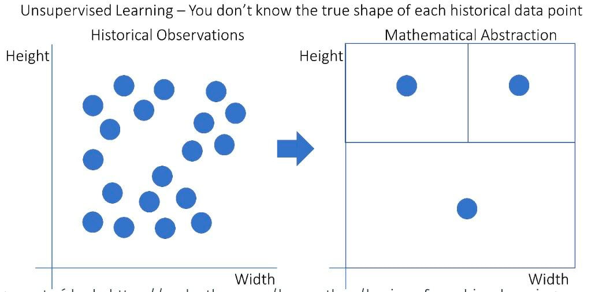
Modelo predictivo
Dentro del marco de un modelo de predicción supervisada tendrá siempre la siguiente forma:
\[Y = f(\mathbf{X}) + \varepsilon = f\left(X_1, \ldots, X_p \right) + \varepsilon, \quad E \left[Y | \boldsymbol{X} = x \right] =f\left(X_1, \ldots, X_p \right) \]
\(\mathbf{X}\) serán los datos
\(f(\cdot)\) será nuestro modelo, es decir, el valor esperado de \(Y\) (con la información que tenemos \(\mathbf{X}\)).
\(\mathbf{X} = \left(X_1, \ldots, X_p \right)\) serán nuestras predictoras o variables independientes
\(\varepsilon\) será el error o ruido, una variable aleatoria de media 0 \(E \left[\varepsilon | \boldsymbol{X} = x \right] = 0\) (el error debería ser reducido a algo aleatorio (irreducible), aunque en estadística SIEMPRE nos vamos a equivocar).
Clasificación vs predicción
modelo supervisado de predicción lineal
La regresión lineal se enmarca dentro del predicción supervisada
Predicción: la variable objetivo es una variable cuantitativa continua (por ejemplo, precio, glucosa, peso, etc).
Clasificación: la variable objetivo es una variable cualitativa (por ejemplo, especie de flor, ausencia/presencia de enfermedad, si/no, etc) o cuantitativa discreta (por ejemplo, número de accidentes). La etiqueta tomará un valor dentro del conjunto de modalidades permitidas, pudiendo ser binaria (si/no) o multiclase (A, B, C, D).
üìö Ver ¬´The elements of Statistical Learning¬ª (Hastie et al., 2008)
¿Qué es predecir?
modelo de predicción lineal
Es importante que - de momento - distingamos dos conceptos:
- Estimación: el modelo aprende de unos datos e intenta estimar dichos valores que ha usado.
- Predicción: el modelo aprende de unos datos e intenta estimar valores que el modelo no conoce.
Más adelante los llamaremos «predicción en train» y «predicción en test»
¿Qué es la linealidad?
modelo de predicción lineal
En matemáticas decimos que una función \(f(x)\) es lineal cuando se cumple:
Propiedad aditiva: \(f(x + y) = f(x) + f(y)\)
Propiedad homogénea: \(f(k*x) = k*f(x)\) (donde \(k\) es una constante en \(\mathbb{R}\)).
Ambas se pueden resumir en \(f(a*x + b*y) = a*f(x) + b*f(y)\)
En estadística llamamos modelo de predicción lineal a un modelo que usa la información de covariables \(X_1, X_2, \ldots, X_p\), de manera que su información siempre se relacionen entre sí con sumas y restas.
Ejemplos lineales: \(y = 2*x_1 - 3\) o \(y = 4 - \frac{x_1}{2} + 3*x_2\)
Ejemplos no lineales: \(y = 2*\frac{1}{x_1}\) o \(y = 4 - x_{1}^{2} - x_2\) o \(y = ln(x_1) + cos(x_2)\)
Repaso descriptiva
La estadística descriptiva es una rama de la estadística que se dedica a recolectar, organizar, presentar y analizar un conjunto de datos para describir las características y comportamientos de dicho conjunto.
Además de para conocer y entender los datos es la fase en la que detectaremos errores e incongruencias, teniendo muchas veces que hacer una depuración de datos
Recolección
La podemos hacer a través de encuestas, experimentos, observaciones, registros, etc. Lo más importante en esta etapa es que los datos sean representativos del fenómeno o población que se estudia. La rama de la estadística que se dedica a estudiar esta parte del análisis se conoce como muestreo, y es fundamental para evitar sesgos en la muestra.

Conceptos básicos
En estadística es fundamental entender los conceptos de población, muestra y variable, ya que son la base para cualquier análisis estadístico.
- Población
La población es el conjunto completo de elementos o individuos sobre los cuales se desea obtener información. En la mayoría de casos el acceso a la totalidad de la población es inviable por motivos económicos, legales o éticos, así que en la mayoría de situaciones las conclusiones deberemos sacarlas haciendo uso de una muestra.
Ejemplo: la diferencia entre censo y encuesta es que el primero recopila datos de todos los individuos de una población, mientras que el segundo trata de estimarlos o inferirlos a partir de una muestra representativa de la misma.
Conceptos básicos
Muestra: subconjunto de la población que se selecciona para su análisis con el fin de hacer inferencias o generalizaciones sobre la población completa. La muestra debe ser representativa de la población.
Muestreo aleatorio simple: cada miembro de la población tiene la misma probabilidad de ser seleccionado.
Muestreo estratificado: la población se divide en subgrupos (estratos) y se toma una muestra de cada uno.
Muestreo (no aleatorio) sistemático: se selecciona cada n-ésimo miembro de la población.
Muestreo (no aleatorio) por cuotas: se seleccionan aquellos individuos que cumplan ciertas condiciones.
Muestreo por conveniencia: se elige a los miembros que son más fáciles de acceder, aunque este método puede introducir sesgos.
Sesgos en el muestreo

Sesgo de selección: aparece cuando no se tiene en cuenta la forma en la que se han recogido los datos.
Sesgos en el muestreo

El ejemplo más famoso es el caso «Dewey defeats Truman» (Dewer derrota a Truman), el titular con el que abrió el Chicago Tribune en 1948, el mismo día en el que Truman ganó al repúblicano Dewer en las elecciones de 1948: sin esperar a los resultados, se basaron en una encuesta telefónica (sin contar con el sesgo que, en aquella época, solo la clase alta tenía teléfono).
Sesgos en el muestreo

¿Dónde reforzarías los aviones?
Sesgos en el muestreo
El sesgo del superviviente (un tipo de sesgo de selección) aparece cuando se toma una muestra de un fenómeno ignorando si los individuos elegidos tienen las mismas opciones respecto al mismo.
Conceptos básicos
Variable: cualquier característica o atributo que puede tomar diferentes valores entre los individuos de la población o muestra. Las variables pueden ser de varios tipos según su naturaleza:
Cualitativas (o categóricas): describen cualidades o categorías. Ejemplos:
- Nominales: no tienen un orden intrínseco (e.g., género, estado civil, religión, etc).
- Ordinales: tienen un orden intrínseco (e.g., niveles de satisfacción, grado académico, sano-leve-grave, tramo etario, tramo de ingresos, etc).
Conceptos básicos
Variable: cualquier característica o atributo que puede tomar diferentes valores entre los individuos de la población o muestra. Las variables pueden ser de varios tipos según su naturaleza:
Cuantitativas: describen cantidades y pueden ser medidas numéricamente. Ejemplos:
- Discretas finitas: toman valores finitos (e.g., número de hijos, número de visitas al médico, escala de dolor).
- Discretas infinitas: toman valores infinitos (o que se podrían considerar como tal) pero podemos enumerarlas y sabemos siempre el siguiente elemento (e.g., número de pelos de nuestra cabellera, número de personas que pueden entrar en una tienda en un periodo dado).
- Continuas: pueden tomar cualquier valor dentro de un rango (e.g., altura, peso, tiempo de espera).
Conceptos básicos
Modalidades: uno de los posibles valores que toma una variable dentro de una muestra. El conjunto de modalidades posibles que podría haber tomado (en tu población) se suele conocer también como soporte. Algunos ejemplos en función del tipo de variables son:
Cualitativa nominal (color de ojos): negro, azul y marrón (3 modalidades en esa muestra de un espectro de colores más amplio que podríamos tener como soporte).
Cualitativa ordinal (estado del paciente): sano, leve y grave (3 modalidades en esa muestra de un conjunto de opciones - por ejemplo, sano, leve, grave, UCI, fallecido - que podríamos tener).
Repaso: continua vs discreta

Repaso: medidas de centralización
- Media: dada una muestra \(\boldsymbol{x} =\left(x_1, \ldots, x_n \right)\), la media muestral \(\overline{x}\) se define como la suma de todos los valores dividida por el tamaño muestral
\[\overline{x} = \frac{1}{n} \sum_{i=1}^{n} x_i\]
Geométricamente: es el valor «más cercano» de todos los datos a la vez (minimiza las distancias al cuadrado)
Media muestral
VENTAJAS
- Fácil de calcular y entender
- Fácil y eficiente de programar
- Siempre existe (para cuantitativas)
DESVENTAJAS
- No es un valor de los datos (la media de {1, 2, 3, 4} es 2.5)
- Poco robusta (valores atípicos le afectan mucho)
- Solo se puede definir para variables cuantitativas
Repaso: medidas de centralización
- Mediana: dada una muestra \(\boldsymbol{x} =\left(x_1, \ldots, x_n \right)\), la mediana muestral se define como el valor que es mayor o igual que al menos el 50%, y menor igual que al menos el 50% de los datos
\[Me_{x} = \arg \min_{x_i} \left\lbrace F_i > 0.5 \right\rbrace, \quad Me_x = e_{i-1} + \frac{0.5 - F_{i-1}}{F_i - F_{i-1} }a_i\]
La mediana es el valor de en medio si ordenamos los datos (y si se pueden ordenar…)
Mediana muestral
VENTAJAS
- Suele ser un valor de la muestra
- Un poco más robusta que la media
DESVENTAJAS
- Muy ineficiente (requiere un algoritmo de ordenación)
- Solo definida para cuantitativas o cualitativas ordinales
Repaso: medidas de centralización
- Moda: dada una muestra \(\boldsymbol{x} =\left(x_1, \ldots, x_n \right)\), la moda muestral se define como el valor o valores más repetidos (en caso de que existan).
\[Mo_x = \arg \max_{x_i} f_i, \quad Mo_x = e_{i-1} + \frac{d_i - d_{i-1}}{\left(d_i - d_{i-1} \right) + \left(d_i - d_{i+1} \right)}a_i\]
Gráficamente: representa el «pico» de un diagrama de barras o un histograma
Moda muestral
VENTAJAS
- Es un valor de la muestra
- Muy robusta
- Se puede calcular para cualquier cuanti o cuali
DESVENTAJAS
- No siempre existe (amodal) y pueden existir varias (bimodal, trimodal, etc)
- Poco usada en inferencia
Repaso: medidas de centralización

¿Cuál es la mediana, la media y la moda?
Repaso: medidas de centralización
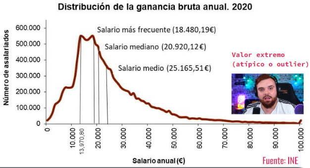Repaso: medidas de dispersión

¿Qué tiene que ver la imagen con la dispersión?
Repaso: medidas de dispersión

El cambio climático no solo es porque aumente la temperatura media (centralización) sino por la aparición cada vez más frecuente de fenómenos extremos
Aumento de la variabilidad → aumento de la DISPERSIÓN
Repaso: medidas de dispersión
¿Cómo medir lo que se alejan los datos de la media?

Una primera idea podría ser medir la distancia de cada dato al centro, es decir, restar cada dato de la media, y después realizar su promedio.
Wait for it

Repaso: medidas de dispersión
Imagina que tenemos la siguiente muestra \(X = \left\lbrace -5, -3, -1, 0, 1, 3, 5 \right\rbrace\).
¿Cuánto vale la media?
La media vale 0 y la distancia a ella es…la propia muestra \(\left\lbrace -5, -3, -1, 0, 1, 3, 5 \right\rbrace\). ¿Cuál es el promedio de dichas distancias?
Pues…de nuevo vale 0.
Si la dispersión es 0…¿no hay dispersión? ¿No debería de dar 0 solo cuando los datos sean constantes?
Repaso: medidas de dispersión
Para evitar que se cancelen los signos lo que haremos será calcular el promedio PERO de las distancias al cuadrado, la conocida como varianza
\[s_{x}^{2} = \frac{1}{n} \sum_{i=1}^{n} \left(x_i - \overline{x} \right)^2 = \overline{x^2} - \overline{x}^2 \]
Cuidado
Tomar el valor absoluto (para evitar que se cancelen los signos) suele ser una mala idea en matemáticas (no es derivable como función).
Repaso: medidas de dispersión
Problema: si los datos están en metros, la varianza estará en…metros cuadrados
¿Tiene sentido medir la dispersión de nuestra estatura en baldosas?

Repaso: medidas de dispersión
Para tener una medida de dispersión en las unidades de los datos calcularemos la desviación típica, como la raíz cuadrada de la varianza
\[s_{x} = \sqrt{s_{x}^{2}} = \sqrt{\frac{1}{n} \sum_{i=1}^{n} \left(x_i - \overline{x} \right)^2} = \sqrt{\overline{x^2} - \overline{x}^2}\]
Repaso: medidas de dispersión
Todavía tenemos un pequeño problema.
Imagina que queremos comparar la dispersión de dos conjuntos de datos, estaturas de personas y diámetros de núcleos de células. Y Supongamos que las medias son 170 cm y 5 micrómetros, y la desviación típica de 1 cm y 1.5 micrómetros.
¿Qué conjunto de datos es más disperso?
Para tener una medida de dispersión adimensional definiremos el coeficiente de variación
\[CV_{x} = \frac{s_{x}}{\left| \overline{x} \right|}\]
Repaso: medidas de localización
Las medidas de posición o localización nos localizan los datos, siendo valores que nos dividen un conjunto ordenado en subconjuntos del mismo tamaño (ejemplo: mediana es percentil 50).
Percentil: valores \(P_{\alpha}\) del conjunto ordenado que dejan por debajo, al menos, el \(\alpha\)% de datos y \(\alpha\)% por encima.
Decil: valores \(D_{\alpha}\) que dividen los datos en 10 partes iguales.
Cuartil: valores \(C_{\alpha}\) o \(q_{\alpha}\) que dividen los datos en 4 partes iguales.
Repaso: covarianza y correlación
¿Qué es en realidad la varianza?
La varianza es el promedio de las desviaciones al cuadrado (respecto a la media), apareciendo dos veces dicha desviación: puede ser entendida como una medida que cuantifica la relación de una variable CONSIGO MISMA
¿Y si quiésemos medir la RELACIÓN/ASOCIACIÓN de una variable X respecto a otra variable Y (en lugar de consigo misma)?
Repaso: covarianza y correlación
\[s_{x}^{2} = \frac{1}{n} \sum_{i=1}^{n} \left(x_i - \overline{x} \right)^2 = \overline{x^2} - \overline{x}^2 \quad \text{(varianza)}\]
La idea detrás de la covarianza es justo esa: sustituir una de esas desviaciones de la X por la desviación de la Y.
\[s_{xy} = \frac{1}{n} \sum_{i=1}^{n} \left(x_i - \overline{x} \right)\left(y_i - \overline{y} \right) = \overline{x*y} - \overline{x}*\overline{y}\]
Repaso: covarianza y correlación
Es importante entender algunas propiedades de la covarianza
- Signo: la covarianza puede ser tanto positiva como negativa como 0: al eliminar el cuadrado de la varianza, ya no es necesario que sea positiva
- ¿Qué cuantifica? La covarianza mide la asociación LINEAL (en torno a una recta) entre dos variables CONTINUAS
- ¿Qué dice su signo? El signo de la covarianza nos indicará la dirección de la dependencia lineal: si es positiva, la relación será creciente (cuando X crece, Y crece); si es negativa, la relación será decreciente (cuando X crece, Y decrece)
Repaso: covarianza y correlación
Al igual que pasaba con la varianza, la covarianza depende de las unidades y magnitudes de los datos, así que lo que haremos será estandarizar la covarianza. Definiremos la coeficiente correlación lineal (de Pearson) como la covarianza dividida entre el producto de las desviaciones típicas (adimensional)
\[r_{xy} = \rho_{xy} = \frac{s_{xy}}{s_x s_y}\]
Tiene el mismo signo que la covarianza (el denominador es siempre positivo) y sus valores siempre están entre -1 y 1
- más cerca de -1 o 1 → relación lineal más fuerte
- más cerca de 0 → ausencia de relación LINEAL
Repaso: covarianza y correlación

üê£ Caso práctico I: anscombe
En el paquete {datasets} se encuentra el dataset conocido como cuarteto de Anscombe, un dataset que cuenta con 4 conjuntos de datos.
Intenta responder a las preguntas planteadas en el workbook
Clase 2: asociación entre variables
Causalidad vs dependencia. Asociación continua vs continua, cualitativa vs cualitativa (28 de enero de 2025)
Estadística bivariante
Todo lo que hemos hecho con una variable podemos hacerlo también de manera bivariante considerando dos variables.
Uno de los principales objetivos de la estadística bivariante es determinar si existe relación o dependencia entre dos variables, es decir, cuando un cambio en el valor de una de ellas se asocia a un cambio en el de la otra (una dependencia estadística no implica un efecto causal).
La situación contraria, es decir, la ausencia de relación, se denomina independencia.
Tipos de análisis posibles
Una primera aproximación al estudio de dos variables será clasificar el tipo de análisis
- Cuali vs cuali:
- Resumen: tablas de contigencia (frecuencia cruzada).
- Inferencia: prueba \(\chi^2\) de independencia o test de Fisher.
- Gráficos: barras apiladas, gofres, gráficos de «flujo».
Tipos de análisis posibles
Una primera aproximación al estudio de dos variables será clasificar el tipo de análisis
- Cuani vs cuanti:
- Resumen: covarianza y correlación.
- Inferencia: test de correlación (relación lineal) y test de Kolmogorov-Smirnov (¿ambas distribuciones son iguales?). Test de igualdad de medias o igualdad de varianzas
- Gráficos: diagrama de dispersión, correlogramas, heatmaps.
Tipos de análisis posibles
Una primera aproximación al estudio de dos variables será clasificar el tipo de análisis
- Cuanti vs cuali:
- Resumen: medidas de centralización/dispersión/posición de la cuanti desagregado por los grupos de la cuali.
- Inferencia: ANOVA (una vía, dos vías, …). Test de igualdad de medias o igualdad de varianzas (desagregada por grupos)
- Gráficos: boxplots, gráficos de violín (desagregados por grupos)
Repaso: inferencia
¿Pero que era eso de la inferencia estadística? Es un conjunto de métodos y técnicas que permite inferir conclusiones sobre una población a partir de una muestra de datos.
Su propósito es utilizar la información muestral para estimar características de la población, probar hipótesis y realizar predicciones, basado en el cálculo de estadísticos
Parámetro: medida que describe una característica de la población (ejemplo: la media poblacional \(\mu\) de la estatura de las mujeres en España).
Estadístico: medida que describe una característica de la muestra (ejemplo: la media muestral \(\overline{x}\) de un conjunto de 100 mujeres).
Repaso: inferencia
Haciendo uso de estadísticos que aproximen una correcta estimación de los parámetros, los contraste de hipótesis son procedimientos estadísticos para tomar decisiones sobre la validez de una afirmación acerca de una población en función de los datos muestrales.
La idea es muy parecido a un juicio: con las pruebas (muestra) el jurado (estadístico) deben decidir sobre tu culpabilidad real (población), pudiendo ser declarado culpable o no culpable.
Este proceso implica formula
Hipótesis nula \(H_0\): es una afirmación generalmente representa una posición de no efecto o no diferencia (ejemplo: entras siendo no culpable a un juicio)
Hipótesis alternativa \(H_0\): es una afirmación que se acepta si se rechaza la hipótesis nula. Representa un efecto o diferencia (ejemplo: culpable)
Repaso: inferencia
Hipótesis nula \(H_0\): es una afirmación generalmente representa una posición de no efecto o no diferencia (ejemplo: entras siendo no culpable a un juicio)
Hipótesis alternativa \(H_1\): es una afirmación que se acepta si se rechaza la hipótesis nula. Representa un efecto o diferencia (ejemplo: culpable)
La idea es similar a la del juicio: solo vamos a rechazar \(H_0\) (es decir, aceptar \(H_1\)) si hay MUCHAS EVIDENCIAS en la muestra (solo se condena culpable a una persona si hay muchas evidencias que demuestran su culpabilidad, pero el acusado no tiene que demostrar su inocencia).
Llamaremos nivel de significancia \(\alpha\) a la probabilidad de rechazar la hipótesis nula cuando es verdadera (condenar a un inocente, conocido como error tipo I. Normalmente \(\alpha = 0.05\) aunque se pueden usar otros valores como 0.01 o 0.10 (a decidir ANTES de realizar el contraste.)
p valor
El conocido como p-valor es uno de los conceptos más importantes en estadística pero también peor usados. Puedes ver toda una revisión de qué significa y qué no en https://pmc.ncbi.nlm.nih.gov/articles/PMC4877414/
Podemos definir el p-valor como un valor continuo que nos mide la compatibilidad de los datos observados con el modelo e hipótesis asumidas: 1 indica compatibilidad perfecta y 0 incompatibilidad completa.
No repesenta la probabilidad de que la hipótesis nula sea cierta: el propio p-valor se calcula ASUMIENDO que lo es.
No representa la probabilidad de que, por azar, se produzca nada
Asociación cuali vs cuali
Una vez visto conceptos básicos de inferencia vamos a empezar por un análisis bivariante de dos variables cualitativas
El primer paso siempre será intentar resumir la información mediante el uso de tablas de contigencia, en este caso bidimensionales.
¿Cómo lo harías con tidyverse? ¿Y con R base?
Tablas de contigencia
Vamos a tomar la base de datos SatisfaccionPacientes.csv que captura datos de una encuesta de satisfacción de pacientes en un hospital
library(readr)
datos <-
read_csv(file = "./datos/SatisfaccionPacientes.csv") |>
janitor::clean_names()
datos# A tibble: 100 × 8
id edad genero estado_civil tiempo_espera grado_satisfaccion
<dbl> <dbl> <chr> <chr> <dbl> <dbl>
1 1 60 Masculino Casado 28 8
2 2 44 Femenino Soltero 22 8
3 3 43 Masculino Soltero 8 9
4 4 32 Masculino Soltero 21 8
5 5 66 Masculino Divorciado 7 10
6 6 43 Masculino Divorciado 20 8
7 7 54 Masculino Casado 18 6
8 8 55 Masculino Soltero 29 6
9 9 56 Masculino Viudo 17 9
10 10 34 Femenino Casado 34 8
# ℹ 90 more rows
# ℹ 2 more variables: numero_visitas <dbl>, estado_salud <chr>Tablas de contigencia
Para calcular una tabla bidimensional de frecuencias en tidyverse basta con indicar dos variables en count()
Tablas de contigencia
Lo habitual es mostrar esta tabla como una tabla con m filas y n columnas, siendo \(m\) el número de modalidades distintas de la primera variable (en este caso \(m=2\), femenino y masculino) y \(n\) el número de modalidades distintas de la segunda variable (en este caso \(n = 4\)).
¿Cómo hacer que la variable estado_civil pivote para pasar de estar en vertical a estar «en horizontal»? (echa un repaso a la parte de tidy data)
Tablas de contigencia
Esto se puede hacer mucho más sencillo de nuevo en R base con table()
Tablas de contigencia
Fíjate que ahora podemos normalizar las frecuencias de 3 formas: respecto al total de los datos, por filas (margin = 1) o por columnas (margin = 2).
Casado Divorciado Soltero Viudo
Femenino 0.11 0.11 0.22 0.09
Masculino 0.15 0.08 0.20 0.04
Casado Divorciado Soltero Viudo
Femenino 0.20754717 0.20754717 0.41509434 0.16981132
Masculino 0.31914894 0.17021277 0.42553191 0.08510638
Casado Divorciado Soltero Viudo
Femenino 0.4230769 0.5789474 0.5238095 0.6923077
Masculino 0.5769231 0.4210526 0.4761905 0.3076923Tablas de contigencia
Haciendo uso de las tablas anteriores intenta responder a las siguientes preguntas:
¿Qué cantidad de pacientes mujeres están solteras?
¿Qué porcentaje, de entre los pacientes hombres, están viudos?
¿Qué porcentaje, de entre los que están divorciados, son mujeres?
¿Qué porcentaje (del total de pacientes) son hombres solteros?
Tablas de contigencia
Puedes incluso visualizar dichas cantidades con geom_tile() indicándole que el relleno dependa del conteo n

üíª Tu turno
Intenta realizar los siguientes ejercicios sin mirar las soluciones
Para repasar lo aprendido vamos a poner todo en práctica con el dataset SatisfaccionPacientes.csv.
üìù Aplica el c√≥digo que sea necesario para responder a estas preguntas. ¿Cuál es el tama√±o muestral? ¿Cuántas variables tenemos? ¿Cuántas modalidades tenemos en la variable estado_civil (y cuantas observaciones en cada una)?
üìù Determina el tipo de variable (cuantitativa vs. cualitativa).
üìù Obten tablas de frecuencias (absoluta y relativa) en el caso de las cualitativas NOMINALES. Con ella intenta responder a las preguntas: a) ¿cuántas mujeres hay? b) ¿qu√© % de individuos están casados?
Código
# no podemos calcular acumulados ya que genero es nominal
datos |> count(genero) |>
rename(frecuencia_abs = n) |>
mutate(frecuencia_rel = frecuencia_abs/sum(frecuencia_abs))
# Hay 53 mujeres
datos |> count(estado_civil) |>
rename(frecuencia_abs = n) |>
mutate(frecuencia_rel = frecuencia_abs/sum(frecuencia_abs))
# Hay 26% personas casadasüìù Convierte de manera adecuada la variable genero y estado_civil a cualitativa nominal
üìù Calcula la media, mediana, rango intercuart√≠lico y desviaci√≥n t√≠pica de edad y tiempo de espera.
Código
resumen <-
datos |>
summarise(media_edad = mean(edad), sd_edad = sd(edad), mediana_edad = median(edad),
IQR_edad = quantile(edad, probs = 0.75) - quantile(edad, probs = 0.25),
# tiempo espera
media_tiempo_espera = mean(tiempo_espera), sd_tiempo_espera = sd(tiempo_espera),
mediana_tiempo_espera = median(tiempo_espera),
IQR_tiempo_espera = quantile(tiempo_espera, probs = 0.75) - quantile(tiempo_espera, probs = 0.25))üìù Repite el anterior ejercicio pero obteniendo las m√©tricas desagregadas por sexo.
Código
resumen <-
datos |>
summarise(media_edad = mean(edad), sd_edad = sd(edad), mediana_edad = median(edad),
IQR_edad = quantile(edad, probs = 0.75) - quantile(edad, probs = 0.25),
# tiempo espera
media_tiempo_espera = mean(tiempo_espera), sd_tiempo_espera = sd(tiempo_espera),
mediana_tiempo_espera = median(tiempo_espera),
IQR_tiempo_espera = quantile(tiempo_espera, probs = 0.75) - quantile(tiempo_espera, probs = 0.25),
.by = genero)üê£ Caso práctico I: encuesta de satisfacci√≥n
Vamos a seguir poniendo en práctica lo aprendido el dataset SatisfaccionPacientes.csv
Intenta responder a las preguntas planteadas en el workbook
Asociación cuali vs cuali
Esas tablas de frecuencia serán las que usen los diferentes contrastes de asociación cuali vs cuali para decidir si hay o no dependencia.
El contraste más conocido es la conocida como prueba de \(\chi^2\) (chi-cuadrado): dada una tabla de contigencia entre dos cualitativas, el contraste compara dicha tabla con la que deberíamos obtener bajo la hipótesis nula de independencia
Vamos a hacerlo con nuestras variables genero y estado_civil
Prueba chi-cuadrado
\[H_0:~\text{genero y estado civil son independientes}\]
\[H_1:~\text{genero y estado civil son dependientes}\]
Casado Divorciado Soltero Viudo
Femenino 11 11 22 9
Masculino 15 8 20 4Si la hipótesis nula fuese cierta, ¿qué esperaríamos?
Prueba chi-cuadrado
- Elegimos uno de los factores y calculamos su proporción en la tabla general (53% vs 47% en este caso)
Prueba chi-cuadrado
- Si ambas variables fuesen independientes, en cada columna tendríamos que tener porcentajes parecidos a cuando lo hacemos sin desagregar (53% mujeres y 47% hombres). Es decir, del total de casados (26) deberíamos tener \(8.48\) mujeres y \(7.52\) hombres; del total de divorciados (19) deberíamos tener \(10.07\) mujeres y \(8.93\) hombres; y así sucesivamente. Estas frecuencias las denotaremos como frecuencias esperadas \(E_{ij}\)
\[E_{ij} = \frac{\text{suma fila i * suma fila j}}{\text{total}}\]
Prueba chi-cuadrado
- Resumimos lo que se desvía una de otra mediante el estadístico chi-cuadrado:
\[\begin{eqnarray}\chi^2 &=& \sum_{i,j} \frac{\left(O_{ij} - E_{ij} \right)^2}{E_{ij}} = \frac{(13.78 - 11)^2}{13.78} + \frac{(12.22 - 15)^2}{12.22} \nonumber \\ &+& \frac{(10.07 - 11)^2}{10.07} + \ldots + \frac{(6.11 - 4)^2}{6.11} = 2.75731\end{eqnarray}\]
- Calculamos cómo de extremo es el valor del estadístico si la hipótesis nula fuese cierta, proporcionándonos un p-valor.
Prueba chi-cuadrado
Este proceso podemos hacerlo directamente aplicando chisq.test(), indicándole las variables (o su tabla de frecuencias)
...$statistic: tenemos guardado el valor del estadístico
...$observed: tenemos guardada la tabla de frecuencias observada
Prueba chi-cuadrado
...$expected: tenemos guardada la tabla de frecuencias esperada
datos$estado_civil
datos$genero Casado Divorciado Soltero Viudo
Femenino 13.78 10.07 22.26 6.89
Masculino 12.22 8.93 19.74 6.11...$p.value: tenemos guardado el p-valor.
Prueba chi-cuadrado
¿Cómo interpretar el contraste?
Pearson's Chi-squared test
data: datos$genero and datos$estado_civil
X-squared = 2.7573, df = 3, p-value = 0.4306Como \(p.value = 0.4306 > \alpha = 0.05\), no podemos rechazar la hipótesis nula: no hay evidencias suficientes en la muestra para concluir que haya dependencia.
Prueba de Fisher
Otra alternativa es el test exacto de Fisher, una prueba estadística utilizada para determinar si hay una asociación significativa entre dos variables cualitativas especialmente útil cuando las frecuencias esperadas son bajas y tenemos dos grupos en cada cualitativa (la tabla de frecuencias es \(2 \times 2\)).
Como curiosidad dicha prueba nació cuando Fisher trataba de comprobar si una compañera, Muriel Birstol, era capaz de detectar en un té con leche si se había añadido primero el té o la leche en su taza (y del experiemnto del que nació la regla del \(\alpha = 5%\)).
Prueba de Fisher
Como hemos dicho es especialmente útil cuando tenemos solo 2 modalidades en cada cualitativa ya que nos proporciona métricas de asociación
Veamos un ejemplo con la tabla placebo_medicamento.csv
# A tibble: 33 × 3
id_paciente grupo_tratamiento observado
<dbl> <chr> <chr>
1 1 medicamento mejora
2 2 medicamento mejora
3 3 medicamento mejora
4 4 medicamento mejora
5 5 medicamento mejora
6 6 medicamento mejora
7 7 medicamento mejora
8 8 medicamento mejora
9 9 medicamento mejora
10 10 medicamento mejora
# ℹ 23 more rowsPrueba de Fisher
Fisher's Exact Test for Count Data
data: datos_placebo$observado and datos_placebo$grupo_tratamiento
p-value = 0.01336
alternative hypothesis: true odds ratio is not equal to 1
95 percent confidence interval:
1.308438 57.326435
sample estimates:
odds ratio
7.386906 Si te fijas ahora nos devuelve además un contraste de lo que se conoce como odds ratio (OR: razón de probabilidades)
alternative hypothesis: true odds ratio is not equal to 1
Métricas de asociación
medicamento placebo
mejora 13 6
no mejora 3 11La interpretación de Odds ratio (OR) es cuantificar la asociación entre dos variables respecto a una asociación espúrea ¿Cuánto mejoran los que tomaron medicamento respecto a una posible mejora basal (aleatoria) del placebo?
- Ratio de mejora en tratados: \(13/3 = 4.33333\)
- Ratio de mejora en placebo: \(6/11 = 0.54545\)
\[OR = \frac{13/3}{6/11} = \frac{13*11}{6*3} = 7.94\]
Los pacientes sometidos a tratamiento mejoran 7.9 veces más si el placebo mejorase por azar.
Métricas de asociación
medicamento placebo
mejora 13 6
no mejora 3 11Otra de las métricas habituales es la conocida como razón de prevalencias (Risk Ratio, RR) que nos proporciona un ratio entre la probabilidad de prevalencia de un evento en dos grupos.
- Prevalencia de mejora en tratados: \(13/(3+13) = 0.8125\)
- Prevalencia de mejora en placebo: \(6/(11+6) = 0.35294\)
\[RR = \frac{13/(3+13)}{6/(11+6)} = \frac{13*11}{6*3} = 2.30208\] Los pacientes sometidos a tratamiento tienen más del doble de «riesgo» de mejorar que los pacientes con placebo.
Métricas de asociación
Ambas métricas podemos estimarlas también con el paquete {epitools}
library(epitools)
OR <- oddsratio(datos_placebo$observado, datos_placebo$grupo_tratamiento)
OR$measure odds ratio with 95% C.I.
Predictor estimate lower upper
mejora 1.000000 NA NA
no mejora 7.201088 1.553915 44.13078- Si \(OR = 1\) no hay asociación entre las variables.
- Si \(OR > 1\) hay una asociación positiva, es decir, la exposición está asociada con un mayor riesgo.
- Si \(OR < 1\) hay una asociación negativa, es decir, la exposición está asociada con un menor riesgo.
Métricas de asociación
risk ratio with 95% C.I.
Predictor estimate lower upper
mejora 1.000000 NA NA
no mejora 2.488095 1.215737 5.092068- Si \(RR = 1\) no hay diferencias en el riesgo entre los grupos.
- Si \(RR > 1\) el grupo expuesto (en este caso medicado) tiene mayor riesgo (en este caso de mejorar)
- Si \(RR < 1\) el grupo expuesto tiene menor riesgo.
Gráficos de barras
Volvamos al ejemplo de encuesta de satisfacción: vamos a intentar relacionar las dos variables cualitativas genero y estado_civil para complementar el análisis numérico realizado (amén del geom_tile() que hemos hecho para visualizar la tabla de frecuencias)
Sabemos realizar un diagrama de barras de cada una por separado, ¿cómo incluir la información de ambas con geom_bar()
Piensa cómo hacerlo recordando que geom_bar() solo admite una coordenada x = ... o y = .... ¿Cómo incluir la info de otra variable que no sea en x o y?
Gráficos de barras
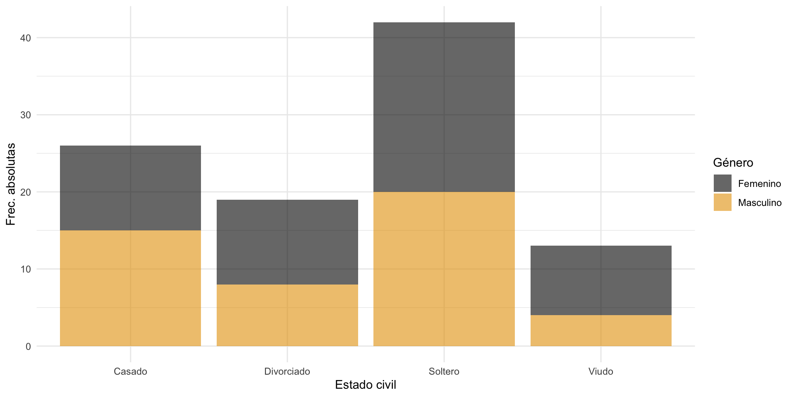Gráficos de barras
La función geom_bar() nos permite jugar un poco con el tipo de barras, que por defecto las muestra stacked (apiladas). Dicho ajuste podemos cambiarlo con el argumento position: si position = "dodge" las muestra de manera agrupada una detrás de otra.
Gráficos de barras
La mejor opción para visualizar si hay asociación es que cada barra de estado civil representa el total y nos muestre el % de cada sexo en cada una: si fuesen independientes, el reparto por sexo en cada barra debería ser similar. Lo haremos con position = "fill"
Gráficos de barras
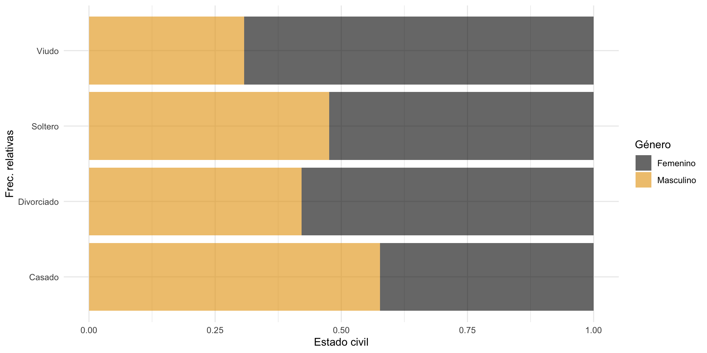üíª Tu turno
Intenta realizar los siguientes ejercicios sin mirar las soluciones
üìù Carga el fichero placebo_medicamento_completo.csv donde tenemos guardado los niveles de colesterol antes y despu√©s de un tratamiento: a 76 personas se les dio un medicamento para bajarlo y a 24 personas placebo.
üìù A√±ade una nueva variable dicot√≥mica a los datos que nos guarde mejora si el paciente mejor√≥ tras el tratamiento y no mejora en caso negativo
üìù Visualiza ambas variables (mejora y tratamiento) a la vez con un diagrama de barras de manera que podamos observar indicios de una posible independencia o dependencia entre ambas. Hazlo antes a papel y boli si lo necesitas
Código
# así pintaríamos en cada barra de tratamiento los mejora o no mejora
ggplot(datos) +
geom_bar(aes(x = tratamiento, fill = mejora), alpha = 0.6) +
ggthemes::scale_fill_colorblind() +
theme_minimal()
# pero dado que tienes más tratados que del grupo control
# no permite comparar bien así que igualamos las barras
# para que cada barra sea el 100% de su categoría
ggplot(datos) +
geom_bar(aes(x = tratamiento, fill = mejora), alpha = 0.6,
position = "fill") +
ggthemes::scale_fill_colorblind() +
theme_minimal()
# Parece evidente visualmente que hay una diferencia entre mejora y no mejora
# en cada barraüìù Calcula la tabla de frecuencias absoluta y relativa que consideres necesarias para responder a las siguientes preguntas:
¿Cuántas personas de las tratadas con medicamento no mejoraron?
¿Qué de personas del total del estudio acabaron mejorando habiendo tomando placebo?
¿Qué % de personas tomó medicamentos entre los que no mejoraron?
¿Qué % de personas de los que tomaron medicamento mejoraron?
Código
table(datos$tratamiento, datos$mejora)
prop.table(table(datos$tratamiento, datos$mejora))
prop.table(table(datos$tratamiento, datos$mejora), margin = 1)
prop.table(table(datos$tratamiento, datos$mejora), margin = 2)
# 9 personas de las tratadas con medicamento no mejoraron
# 9% del total de personas mejoraron y tomaron placebo
# 37% de los que no mejoraron habían tomado la medicación
# 88.1% de los que tomaron medicamento mejoraronüìù Para confirmar y cuantificar las evidencias que ya tenemos, vamos a realizar un contraste de hip√≥tesis. Realiza la prueba de chi-cuadrado e interpreta el resultado con \(\alpha = 0.05\).
Realiza la prueba de chi-cuadrado y Fisher e incluye los p-valores en una tabla resumen haciendo uso de tidyverse. Exporta a un
.csvdicha tabla resumen
üìù Realiza la prueba de Fisher y mira la salida completa. Interpreta la salida, no solo del contraste sino de los odd ratio.
Fisher's Exact Test for Count Data
data: datos$tratamiento and datos$mejora
p-value = 2.519e-06
alternative hypothesis: true odds ratio is not equal to 1
95 percent confidence interval:
3.722458 42.096028
sample estimates:
odds ratio
11.95213 üê£ Caso práctico II: bronquitis y tabaco
Vamos a cargar el archivo de datos fumadores.csv donde tenemos datos de 96 pacientes sobre sí o fuman y quienes han desarrollado o no bronquitis.
# A tibble: 96 × 3
id fumador estado
<dbl> <chr> <chr>
1 1 sí bronquitis
2 2 sí bronquitis
3 3 sí bronquitis
4 4 sí bronquitis
5 5 sí bronquitis
6 6 sí bronquitis
7 7 sí bronquitis
8 8 sí bronquitis
9 9 sí bronquitis
10 10 sí bronquitis
# ℹ 86 more rows
Intenta responder a las preguntas planteadas en el workbook
üê£ Caso práctico III: salud mental
Esta la base de datos datos_salud_mental.csv tenemos información recopilada de 100 pacientes que acuden a un centro de salud mental. Se quiere realizar un estudio para ver el impacto que tienen distintas características sobre la ansiedad y depresión en estos 100 pacientes. Los datos incluyen una variedad de variables relacionadas con la salud mental, así como características demográficas y de estilo de vida.
Intenta responder a las preguntas planteadas en el workbook
Asociación cuanti vs cuanti
Como decíamos, la idea detrás de la covarianza es una “varianza” entre dos variales (la varianza es una covarianza de una variable consigo misma), midiendo el promedio de lo que se desvía cada una respecto a su media
\[s_{xy} = \frac{1}{n} \sum_{i=1}^{n} \left(x_i - \overline{x} \right)\left(y_i - \overline{y} \right) = \overline{x*y} - \overline{x}*\overline{y}\]
Correlación lineal
Vamos a practicar una vez más como hacerlo a mano con el siguiente ejercicio.
Correlación lineal
En la tabla inferior se han recopilado (del 2013 al 2022) la temperatura media en el mes de abril en Madrid (variable X, en ºC) y el número de días (variable Y) en el que el nivel de ozono superó las 0.20 ppm (partes por millón)
- ¿Cuál fue media de días en los que se superó umbral de ozono de 0.20 ppm?
- ¿Cuál fue media de días en los que se superó umbral de ozono en los años que la temperatura media en marzo superó los 17.4ºC?
- ¿Cuál es su covarianza?

Correlación lineal
Repite el ejercicio con pocas líneas de código R
- ¿Cuál fue la media de días en los que se superó el umbral de ozono de 0.20 ppm?
- ¿Cuál fue la media de días en los que se superó el umbral de ozono en los años que la temperatura media en marzo superó los 17.4ºC?
- ¿Cuál es su covarianza?
Correlación lineal
Realiza lo que consideres tanto a mano como en R
- ¿Existe alguna relación de dependencia entre las variables? ¿De qué tipo? ¿Cómo de fuerte o débil es dicha relación? ¿En qué dirección es dicha relación?
\[s_{xy} = \frac{1}{n} \sum_{i=1}^{n} \left(x_i - \overline{x} \right)\left(y_i - \overline{y} \right) = \overline{x*y} - \overline{x}*\overline{y}\]
\[r_{xy} = \rho_{xy} = \frac{s_{xy}}{s_x s_y}\]
Correlación lineal
No sé si te has fijado qué sucede cuando intentamos calcular la covarianza/correlación de varias variables, por ejemplo vamos a calcular la (cuasi)covarianza de todas las variables numéricas de starwars.
Podemos usar la función cov() sin más, fuera de un resumen, obteniendo lo que se conoce como matriz de (cuasi)covarianzas y que tendrá un papel fundamental en estadística ya que contiene la información (= varianza) del dataset.
Matriz de covarianzas
height mass birth_year
height 957.3802 676.8867 -2164.10
mass 676.8867 46313.2034 17402.55
birth_year -2164.1002 17402.5466 28603.04Además de ser simétrica…¿qué tenemos en la diagonal?
La matriz de (cuasi)covarianzas se denota como \(\Sigma\) y sus elementos se define como \(\Sigma_{ii} = s_{x_i}^{2}\) para la diagonal y \(\Sigma_{ij} = \Sigma_{ji} = s_{x_i x_j}\) fuera de ella.
Importante
Recuerda que los softwares estadísticos nos devuelven siempre la cuasi covarianza, dividido entre \(n-1\) y no entre \(n\). La cuasivarianza y la cuasicovarianza son los mejores estimadores muestrales (insesgados) de los respectivos parámetros poblaciones
Matriz de correlaciones
De la misma manera con cor() podemos calcular la matriz de correlaciones (en este caso sin el cuasi ya que se cancelan denominadores)
La matriz de correlaciones se denota como \(R\) y sus elementos se define como \(r_{ii} = 1\) para la diagonal y \(r_{ij} = r_{x_ix_j}\) fuera de ella, y nos proporciona la dependencia lineal entre variables ya de manera estandarizada.
Matriz de correlaciones
¿Se te ocurre alguna manera de calcular la matriz de correlaciones a partir de la de covarianzas?
Correlación vs dependencia
Podemos tener variables incorreladas, con correlación nula, pero que exista dependencia entre ellas: la covarianza/correlación SOLO CAPTURA relaciones lineales, nada más.
Veamos un ejemplo sencillo con \(X = \left\lbrace -1, 0, 1 \right\rbrace\) y \(Y = X^2 = \left\lbrace 1, 0, 1 \right\rbrace\).
- La media de ambas es nula
- La media del producto es la media de \(XY = \left\lbrace -1, 0, 1 \right\rbrace\), que es de nuevo nula
- Así la covarianza \(\overline{x*y} - \overline{x}*\overline{y}\) es nula a pesar de tener la mayor dependencia posible (dependencia funcional)
Correlación vs dependencia

En relaciones no lineales como la de la imagen, la correlación estará cercana a cero (ya que no hay relación lineal) pero existe una dependencia. Diremos que dos variables son dependientes entre sí cuando existe un patrón numérico que las relaciona
- Independencia implica incorrelación
- Incorrelación NO implica independencia
Correlación vs dependencia

Test de correlaciones
¿Pero cómo saber que la correlación observada es suficientemente pequeña para considerarse incorreladas?
Con un contraste de correlaciones haciendo uso de cor.test()
Correlación de rango
La correlación (lineal) de Pearson asume que las variables están distribuidas normalmente, en caso de existir asociación tienen una relación lineal y no tienen valores atípicos.
Esto significa que ANTES de aplicar un test de correlación deberíamos de comprobar que ambas están distribuidas normalmente
Contraste de normalidad
- Antes de nada debemos de eliminar los pares con datos ausentres
Contraste de normalidad
- También podemos cotejarlo mediante una prueba de inferencia no parámetrica contastando la normalidad
library(performance)
# check_normality realiza el Shapiro test
check_normality(starwars_sin_NA$height)Warning: Non-normality of raw detected (p < .001).Warning: Non-normality of raw detected (p < .001).No deberíamos aplicar (al menos no interpretar) el test de correlaciones
Correlación de rango
Por ello existen dos alternativas: correlación de Spearman y correlación de Kendall
Ambos coeficientes cuantifican no una mera correlación lineal sino una correlación de rango: cuantifica la relación entre los distintos rankings de dos variables cuando se ordenan.
Correlación de Spearman
El [coeficiente de correlación de Spearman]{hl-yellow} cuantifica de manera no paramétrica la interdependencia entre dos variables aleatorias (tanto continuas como discretas). Cuantifica el grado de asociación monótona entre dos variables ordinales o continuas
\[\rho =1-\frac{6\sum D^{2}}{n (n^{2}-1)}\]
donde \(D\) es la diferencia entre los correspondientes estadísticos de orden de \(x - y\).
mass height
mass 1.0000000 0.7192179
height 0.7192179 1.0000000
Spearman's rank correlation rho
data: starwars$mass and starwars$height
S = 9608.4, p-value = 1.393e-10
alternative hypothesis: true rho is not equal to 0
sample estimates:
rho
0.7192179 Correlación de Spearman

Tau de Kendall
El coeficiente de correlación de Kendall (\(\tau\) de Kendall) cuantifica la asociación ordinal de variables cualitativas ordinales (o cuantis) de manera no paramétrica.
Dados \(\left(x_1, y_1\right), \ldots, \left(x_n, y_n\right)\) un conjunto de observaciones, se dice que \(\left(x_{i},y_{i}\right)\) y \(\left(x_{j},y_{j}\right)\) (con \(i < j\)) son un par concordante si el orden de clasificación coincide (\(x_i < x_j,~y_i < y_j\) o bien \(x_j < x_i,~y_j < y_i\))
\[\tau =\frac{\text{n pares concordantes} - \text{n pares discordantes}}{n \choose 2}\]
El coeficiente de Kendall suele usarse solo cuando \(n\) es pequeño y hay muchos empates (ver usos)
mass height
mass 1.0000000 0.5704061
height 0.5704061 1.0000000
Kendall's rank correlation tau
data: starwars$mass and starwars$height
z = 6.2649, p-value = 3.731e-10
alternative hypothesis: true tau is not equal to 0
sample estimates:
tau
0.5704061 Correlación general
Kendall demostró en 1970 que tanto \(\tau\) de Kendall como \(\rho\) de Spearman son casos particulares de un coeficiente de correlación general.
Si tenemos \(n\) observaciones, para cada par \(\left(x_i, y_j \right)\) podemos definir \(a_{ij}\) como un ranking en la variable \(x\) de ambas observaciones (\(a_{ij} > 0\) si \(x_i > y_j\)) y \(b_{ij}\) como un ranking en la variable \(y\) (\(b_{ij} > 0\) si \(x_i > y_j\)), entonces
\[\Gamma = \frac{\sum_{i=1}^{n}\sum_{j=1}^{n}a_{ij}b_{ij}}{\sqrt {\left( \sum_{i=1}^{n}\sum_{j=1}^{n}a_{ij}^{2} \right) \left( \sum_{i=1}^{n}\sum_{j=1}^{n}b_{ij}^{2} \right)}}\]
üíª Tu turno
Intenta realizar los siguientes ejercicios sin mirar las soluciones
Vamos a tomar de nuevo nuestros datos de satisfacción de pacientes
library(readr)
datos <-
read_csv(file = "./datos/SatisfaccionPacientes.csv") |>
janitor::clean_names()
datos# A tibble: 100 × 8
id edad genero estado_civil tiempo_espera grado_satisfaccion
<dbl> <dbl> <chr> <chr> <dbl> <dbl>
1 1 60 Masculino Casado 28 8
2 2 44 Femenino Soltero 22 8
3 3 43 Masculino Soltero 8 9
4 4 32 Masculino Soltero 21 8
5 5 66 Masculino Divorciado 7 10
6 6 43 Masculino Divorciado 20 8
7 7 54 Masculino Casado 18 6
8 8 55 Masculino Soltero 29 6
9 9 56 Masculino Viudo 17 9
10 10 34 Femenino Casado 34 8
# ℹ 90 more rows
# ℹ 2 more variables: numero_visitas <dbl>, estado_salud <chr>üìù Obt√©n la matriz de correlaciones de Pearson haciendo uso de cor(). Luego haz uso de correlate() del paquete {corrr}
üìù Obt√©n la matriz de correlaciones con kendall y spearman
üìù Analiza y argumenta, en funci√≥n de los resultados anteriores, la asociaci√≥n entre edad y grado_satisfaccion, y entre tiempo_espera y grado_satisfaccion
üìù Con el paquete {corrplot} visualiza la matriz de correlaciones
üìù Investiga el paquete {GGally} y a funci√≥n ggpairs() para visualizar las correlaciones de todas las variables (salvo id)
üìù ¿C√≥mo saber que la correlaci√≥n observada entre edad y grado_satisfaccion (\(-0.0339\)) es suficientemente peque√±a para considerarse incorreladas? ¿C√≥mo saber si la correlaci√≥n entre tiempo_espera y grado_satisfaccion (\(-0.586\)) es suficientemente grande para considerar que es significativa?
Código
cor.test(datos$edad, datos$grado_satisfaccion)
cor.test(datos$tiempo_espera, datos$grado_satisfaccion)
# En uno el p-valor es bastante alto (**no rechazamos la hipótesis nula de incorrelación**) y en otro el p-valor es prácticamente 0 (rechazamos la hipótesis nula -> **hay evidencias de correlación significativa**).
# Ninguna de las 3 es normal así que lo apropiado sería
# contrastar la correlación de rango
performance::check_normality(datos$edad)
performance::check_normality(datos$grado_satisfaccion)
performance::check_normality(datos$tiempo_espera)Clases 3-4: análisis de la varianza
Asociación cuali vs cuanti: análisis de la varianza (30 de enero y 4 de febrero de 2025)
Cuanti vs cuali
Ya conocemos herramientas básicas para analizar la dependencia entre dos variables:
Cuali vs cuali: test de Fisher o prueba de \(\chi^2\), tablas de contigencia, diagramas de barras.
Cuanti vs cuanti: correlaciones y test de correlaciones lineal (Pearson), correlaciones y test de correlaciones de rango (Spearman y Kendall), diagramas de dispersión.
¿Pero qué sucede con la asociación cuali vs cuanti?
Cuanti vs cuali

Cuanti vs cuali
Imagina que tenemos \(n\) estudiantes de los que disponemos sus notas \(y_{ij}\) para \(j=1,2\) asignaturas alumnos (datos en notas_1factor_2cat.csv)
# A tibble: 1,000 × 3
rowid notas asignatura
<dbl> <dbl> <chr>
1 1 8.02 A
2 2 6.15 B
3 3 7.94 A
4 4 6.33 B
5 5 8.31 A
6 6 7.75 A
7 7 8.28 A
8 8 6.96 B
9 9 6.35 B
10 10 8.57 A
# ℹ 990 more rows
¿Existe dependencia entre la nota y la variable asignatura (cualitativa)? ¿Son similares (en promedio) entre las asignaturas o hay una de las dos más sencilla?
Análisis de la varianza
Disponemos de
Variable continua: notas de \(n\) estudiantes denotadas como \(y_{ij}\), con \(i=1,\ldots, n\).
Variable cualitativa o factor: dos asignaturas \(j=1,2\)
El objetivo es ver la posible asociación entre la variable objetivo y el factor, es decir, determinar si existe un efecto del factor sobre el valor esperado de la variable continua.
A eso se le conoce como análisis de la varianza (ANOVA) o análisis factorial, desarrollada por R. Fisher en 1930, y empezaremos por el ejemplo más sencillo de un factor (una sola variable cualitativa).
ANOVA: un factor
¿Cómo conceptualizar matemáticamente un modelo que asuma que todas las asignaturas tienen medias similares?
\[y_{ij} = \mu_j + \varepsilon_{ij}, \quad \varepsilon_{ij} \quad \text{perturbación aleatoria}\]
donde \(\mu_j\) representa la media de los estudiantes en la asignatura \(j\) y la perturbación \(\varepsilon_{ij}\) representa la desviación de la nota en la asignatura \(j\) del estudiante \(i\) (representan la variabilidad intrínseca del EXPERIMENTO).
Fíjate que el modelo dice lo siguiente: las posibles diferencias (variabilidad) entre notas de distintos alumnos se pueden deber a
un grupo distinto (con su media \(\mu_j\)), es decir, algo EXPLICADO por los grupos
una componente aleatoria (algo NO EXPLICADO por los grupos).
ANOVA: un factor
Esas perturbaciones vamos a asumir que cumplen una serie de hipótesis
- Promedio nulo: \(E[\varepsilon_{ij}] = 0\) para todo \(i,j\) (las desviaciones positivas se compensan con las negativas)
- Varianza constante (homocedasticidad): \(V[\varepsilon_{ij}] = cte = \sigma^2\) para todo \(i,j\) (las desviaciones respecto a la media son iguales para cada grupo)
- Normalidad: \(\varepsilon_{ij} \sim N\)
- Incorrelación: al ser normales esto automáticamente implica que son independientes (conocer la desviación de un estudiante no nos da información sobre otro: el orden de recolección no afecta a los resultados)
\[y_{ij} = \mu_j + \varepsilon_{ij}, \quad \varepsilon_{ij} \sim N (0, \sigma^2) \quad \Rightarrow \quad y_{ij} \sim N(\mu_j, \sigma^2)\]
ANOVA: un factor
Vamos a visualizar las dos distribuciones
Código
ggplot(datos) +
geom_density(aes(x = notas, color = asignatura, fill = asignatura),
alpha = 0.5) +
geom_point(aes(x = notas, y = 0, color = asignatura),
size = 1.7, alpha = 0.85) +
MetBrewer::scale_color_met_d(palette_name = "Renoir") +
MetBrewer::scale_fill_met_d(palette_name = "Renoir") +
theme_minimal()Aunque la distribución B está más desplazada a la izquierda, la nota más alta es de la asignatura B. ¿Es suficiente para decir que A distinto de B?
ANOVA: un factor
\[y_{ij} = \mu_j + \varepsilon_{ij}, \quad \varepsilon_{ij} \sim N (0, \sigma^2)\]
\[H_0:~\mu_1 = \mu_2 = cte \quad vs \quad H_1:~\mu_1 \neq \mu_2\]
En el caso de que solo tengamos dos grupos la solución es fácil: basta con hacer un contraste de medias conocido como prueba t
t.test(datos |> filter(asignatura == "A") |> pull(notas),
datos |> filter(asignatura == "B") |> pull(notas))
Welch Two Sample t-test
data: pull(filter(datos, asignatura == "A"), notas) and pull(filter(datos, asignatura == "B"), notas)
t = 46.326, df = 836.58, p-value < 2.2e-16
alternative hypothesis: true difference in means is not equal to 0
95 percent confidence interval:
1.468714 1.598677
sample estimates:
mean of x mean of y
8.039705 6.506010 ANOVA: un factor
¿Pero qué pasaría si en lugar de dos asignaturas tuviésemos 6 asignaturas?
El problema de hacer contrastes 2 a 2 es que tendríamos que hacer \({6 \choose 2} = 15\) comparaciones (1-1, 1-2, …, 1-6, 2-3, …, 5-6).
No solo son muchos contrastes sino que si cada contraste se hace con una probabilidad individual de error tipo I de \(\alpha = 0.05\), y suponiendo que todas las comparaciones fuesen independientes, la probabilidad de que se verifiquen las 15 igualdades de manera conjunta ya no es de 0.95 sino \(0.95^{15} = 0.463\): si hacemos muchos contrastes es muy probable que, por azar, alguno salga significativo (aunque realmente no haya diferencia en las medias)
Corrección de Bonferroni
Un paréntesis: para solventar el problema de las comparaciones múltiples un solución habitual (la más sencilla aunque no siempre la mejor) es lo que se conoce como corrección de Bonferroni
Sea \(A_i\) el suceso “se rechaza la igualdad de medias de la comparación i” (que sucede con probabilidad \(\alpha\) si la hipótesis nula es cierta). Y sea \(B = \bigcup_i A_i\) el suceso de rechazar alguna de las comparaciones (es decir, no todas son iguales). Entonces, si tenemos \(c\) comparaciones
\[P(B) = P(\bigcup_i A_i) \leq \sum_i P(A_i) = c \alpha := \alpha_T\]
Si queremos que ese \(\alpha_T\) conjunto sea (al menos) de 0.05, necesitamos que cada \(\alpha\) individual sea \(\alpha = \alpha_T/c\) (demasiado pequeño si \(c\) crece), o lo que es lo mismo definir un pvalor ajustado \(pvalue_{j}^{adj} = c*pvalue_j\)
ANOVA: un factor
No solo existe un problema de comparaciones múltiples sino que, además, ¡no lo necesitamos!
Nosotros (de momento) no queremos saber cuál de las asignaturas tiene más o menos nota media sino simplemente contestar a la pregunta: ¿todas tienen la misma nota media o existe un efecto entre la asignatura y la nota?
Y para responder a dicha pregunta no necesitamos chequear 2 a 2: basta con que encontremos una que no sea igual
ANOVA: un factor
\[y_{ij} = \mu_j + \varepsilon_{ij}, \quad \varepsilon_{ij} \sim N (0, \sigma^2)\]
La idea es que no necesitamos comparar 2 a 2. Si tenemos \(c\) grupos sabemos que las medias \(\mu_j\) (\(j=1,\ldots,c\)) nunca van a ser exactamente iguales aunque el grupo no afecte, debido a la variabilidad intrínseca del experimento \(\varepsilon_{ij}\)
¿Qué contraste deberíamos plantear si queremos comprobar si existe un efecto del factor (asignatura) en la variable objetivo (nota)?
Si no existiese asociación entre asignatura y nota, tendríamos que todas las medias serían similares
\[H_0:~independencia \rightarrow \mu_1 = \mu_2 = \ldots = \mu_c = cte \quad vs \quad H_1:~\text{no todas son iguales}\]
ANOVA: un factor
\[H_0:~independencia \rightarrow \mu_1 = \mu_2 = \ldots = \mu_c = cte \quad vs \quad H_1:~\text{no todas son iguales}\]
¿Qué significa que una serie de valores sean constantes? Si tuviésemos una variable \(x\) en una tabla, ¿cómo comprobar fácilmente que todos los valores son idénticos?
La forma más inmediata es calcular su varianza ya que nos cuantifica la variabilidad: si la varianza/variabilidad es nula (o muy pequeña), implica que la variable toma valores constantes.
ANOVA: un factor
\[H_0:~independencia \rightarrow \mu_1 = \mu_2 = cte \quad vs \quad H_1:~\text{no todas son iguales}\]
Así que podemos reformular la hipótesis nula en términos de la varianza: si las medias son iguales, la hipótesis nula es lo mismo que decir que las diferencias entre notas (en las distintas asignaturas) se debe únicamente a una variabilidad aleatoria (y no una diferencia sistemática), es decir
\[H_0:~\text{variab. notas distintas asignaturas es pequeña} = \text{"varianza" medias es pequeña}\]
¿Cómo cuantificar variabilidad entre las medias?
ANOVA: un factor
\[H_0:~\text{variab. notas distintas asignaturas es pequeña} = \text{"varianza" medias es pequeña}\]
Para cuantificar la variabilidad de las medias lo más inmediato es calcular su varianza. Si \(x = \left(\overline{y}_1, \ldots, \overline{y}_c \right)\) representa el vector de medias (muestrales), y \(\overline{\overline{y}_j}\) su media, entonces su varianza será
\[\color{red}{\frac{1}{c}\sum_{j=1}^{c} \left(\overline{y}_j - \overline{\overline{y}_j} \right)^2 = \frac{1}{c}\sum_{j=1}^{c} \left(\overline{y}_j - \overline{y} \right)^2}~\#\]
Dicha cantidad cuantifica la variabilidad de las medias de los grupos (cómo fluctua la media entre los grupos), dando a cada grupo el mismo peso \(1/c\). ¿Y si diésemos peso a cada grupo en función de su tamaño?
\({\tiny \#~\overline{\overline{y}_j} = \frac{1}{c} \sum_{j=1}^{c} \overline{y}_j = \sum_{j=1}^{c} \sum_{i=1}^{n_j} \frac{1}{c* n_{j}} y_{ij} = \overline{y }}\)
ANOVA: un factor
\[H_0:~\text{variab. notas distintas asignaturas es pequeña} = \text{"varianza" medias es pequeña}\]
\[\color{red}{\frac{1}{n}\sum_{j=1}^{c} n_j \left(\overline{y}_j - \overline{\overline{y}_j} \right)^2 = \sum_{j=1}^{c} \frac{n_j}{n} \left(\overline{y}_j - \overline{y} \right)^2}\]
La cantidad de arriba cuantifica la variabilidad (PONDERADA) de las medias de los grupos. En otras palabras: es la variabilidad EXPLICADA por los grupos (variabilidad ENTRE grupos), cuyo estimador insesgado es (una “cuasivarianza”)
\[\color{red}{\hat{s}_{e}^2= \frac{n}{n-c} \sum_{j=1}^{c} n_j\left(\overline{y}_j - \overline{y} \right)^2 = \frac{1}{n-c}\sum_{j=1}^{c}n_j \left(\overline{y}_j - \overline{y} \right)^2 = \frac{1}{n-c} SSE}\]
ANOVA: un factor
\[H_0:~\text{variab. notas distintas asignaturas es pequeña} = \text{"varianza" medias es pequeña}\]
\[\color{red}{\hat{s}_{e}^2= \frac{n}{n-c} \sum_{j=1}^{c}n_j \left(\overline{y}_j - \overline{y} \right)^2 = \frac{1}{n-c}\sum_{j=1}^{c} n_j \left(\overline{y}_j - \overline{y} \right)^2 = \frac{1}{n-c} SSE}\]
Imagina que al calcularla sale, por ejemplo, \(\hat{s}_{e}^2 = 3\)…
¿Es mucho? ¿Poco? ¿Está suficientemente alejada de 0 para considerar que las medias son diferentes? ¿De qué depende?
ANOVA: un factor
Como siempre sucede con la varianza, per se no nos aporta nada: debe ser comparada con otra cantidad. ¿De qué depende?
Como (again) siempre sucede con la varianza, la magnitud de dicha variabilidad va a depender de la propia magnitud de los datos, en este caso, de la propia variabilidad inherente a la variable: si la varianza basal de los datos es \(2.9\), seguramente \(\hat{s}_{e}^2 = 3\) sea poco; si la varianza de los datos es \(0.01\), entonces \(\hat{s}_{e}^2 = 3\) es una barbaridad (entre grupos varían 300 veces más que dentro de cada grupo).
¿Cómo cuantificar la variabilidad inherente de la variable (variabilidad NO EXPLICADA por los grupos)?
ANOVA: un factor
Si recuerdas aquellos días de inferencia, los esimadores insesgados de la media y varianza poblacional \(\left(\mu, \sigma^2 \right)\) son
- Media: \(\hat{\mu} = \overline{y}\), lo que implica que \(\hat{\mu}_j = \overline{y}_j\) y \(\hat{\varepsilon}_{ij} = y_{ij} - \overline{y}_j\).
- Varianza (hemos asumido igual en cada grupo): la varianza muestral sería
\[\hat{\sigma}^2 = \frac{1}{n} \sum_{j=1}^{c}\sum_{i=1}^{n_j} \left(y_{ij} - \overline{y}_j \right)^2 =\sum_{j=1}^{c} \frac{1}{n}\frac{n_j}{n_j}\sum_{i=1}^{n_j} \left(y_{ij} - \overline{y}_j \right)^2 = \sum_{j=1}^{c} \frac{n_j}{n} s_{j}^2\]
es decir, el promedio de las desviaciones al cuadrado respecto a la media de cada grupo (también expresado como media ponderada de cada variabilidad), donde \(s_{j}^2 = \frac{1}{n_j}\sum_{i=1}^{n_j} \left(y_{ij} - \overline{y}_j \right)^2\) representa la varianza de cada grupo.
ANOVA: un factor
\[\hat{\sigma}^2 = \frac{1}{n} \sum_{j=1}^{c}\sum_{i=1}^{n_j} \left(y_{ij} - \overline{y}_j \right)^2 = \sum_{j=1}^{c} \frac{n_j}{n} s_{j}^2\]
Sin embargo, dado que cada \(\sum_{i=1}^{n_j} \left(\frac{y_{ij} - \overline{y}_j}{\sigma} \right)^2\) son independientes y siguen una \(\chi^{2}_{n_j - 1}\) (suma de normales - tipificadas - al cuadrado es una \(\chi^2\)), tenemos que
\[n\frac{\hat{\sigma}^2}{\sigma^2} \sim \chi^{2}_{n-c} \Rightarrow E[n\frac{\hat{\sigma}^2}{\sigma^2}] = n - c \Rightarrow E[\hat{\sigma}^2] = \frac{n-c}{n} \sigma^2\]
Es decir, \(\hat{\sigma}^2\) no es un estimador insesgado de \(\sigma^2\) así que recitificaremos por un factor definiendo la conocida como varianza residual
\[\color{purple}{\hat{s}_{r}^2 = \frac{n}{n-c}\hat{\sigma}^2 = \frac{1}{n-c} \sum_{j=1}^{c}\sum_{i=1}^{n_j} \left(y_{ij} - \overline{y}_j \right)^2 = \frac{1}{n-c} \sum_{j=1}^{c}\sum_{i=1}^{n_j} \hat{\varepsilon}_{ij}^2 = \frac{1}{n-c}SSR}\]
ANOVA: un factor
Si la hipótesis nula fuese cierta (todas las observaciones vienen de la misma población con misma varianza y media), la varianza entre grupos (explicada por el grupo) sería la misma que la varianza inherente a los datos (calculada como el promedio de las distintas varianzas intra-grupo).
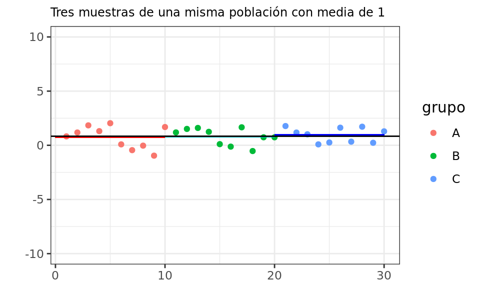
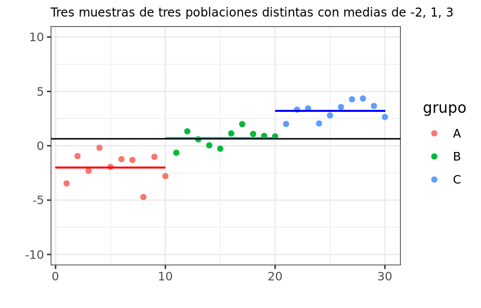
ANOVA: un factor
Así tenemos el estimador insesgado de la varianza explicada (variabilidad atribuida a los grupos)
\[\color{red}{\hat{s}_{e}^2= \frac{n}{n-c} \sum_{j=1}^{c} n_j\left(\overline{y}_j - \overline{y} \right)^2 = \frac{1}{n-c}\sum_{j=1}^{c} n_j \left(\overline{y}_j - \overline{y} \right)^2 = \frac{1}{n-c} SSE}\]
y el estimador insesgado de la varianza no explicada (variabilidad intrínseca de la variable)
\[\color{purple}{\hat{s}_{r}^2 = \frac{n}{n-c}\hat{\sigma}^2 = \frac{1}{n-c} \sum_{j=1}^{c}\sum_{i=1}^{n_j} \left(y_{ij} - \overline{y}_j \right)^2 = \frac{1}{n-c} \sum_{j=1}^{c}\sum_{i=1}^{n_j} \hat{\varepsilon}_{ij}^2 = \frac{1}{n-c}SSR}\]
¿Qué relación hay entre ellas? ¿Están relacionadas? ¿Pueden ambas subir mucho o bajar mucho, o se compensa una con otra?
ANOVA: un factor
\[y_{ij} = \mu_j + \varepsilon_{ij}, \quad \varepsilon_{ij} \sim N (0, \sigma^2)\]
La variabilidad total (SST o VT) de la variable \(y\) se define como
\[SST = \displaystyle \sum_{l=1}^{n} \left(y_l - \overline{y} \right)^2 = \sum_{j=1}^{c} \sum_{i=1}^{n_j} \left(y_{ij} - \overline{y} \right)^2, \quad VT = \frac{1}{n} \sum_{j=1}^{c} \sum_{i=1}^{n_j} \left(y_{ij} - \overline{y} \right)^2\]
ANOVA: un factor
\[SST = \displaystyle \sum_{l=1}^{n} \left(y_l - \overline{y} \right)^2 = \sum_{j=1}^{c} \sum_{i=1}^{n_j} \left(y_{ij} - \overline{y} \right)^2, \quad VT = \frac{1}{n} \sum_{j=1}^{c} \sum_{i=1}^{n_j} \left(y_{ij} - \overline{y} \right)^2\]
Si a continuación añadimos y restamos dentro del paréntesis la misma cantidad (la media muestral de cada grupo \(\overline{y}_j\), estimación insesgada de \(\mu_j\))
\[\begin{eqnarray}\color{green}{SST} &=& \sum_{j=1}^{c} \sum_{i=1}^{n_j} \left(y_{ij} - \overline{y} \right)^2 = \sum_{j=1}^{c} \sum_{i=1}^{n_j} \left( \left(y_{ij} - \overline{y}_j \right) - \left(\overline{y}_j - \overline{y} \right) \right)^2 \nonumber \\ \color{green}{VT} &=& \frac{1}{n} \sum_{j=1}^{c} \sum_{i=1}^{n_j} \left( \left(y_{ij} - \overline{y}_j \right) - \left(\overline{y}_j - \overline{y} \right) \right)^2 \end{eqnarray}\]
ANOVA: un factor
Desarrollando el cuadrado
\[\begin{eqnarray}\color{green}{SST} &=& \sum_{j=1}^{c} \sum_{i=1}^{n_j} \left(y_{ij} - \overline{y} \right)^2 = \sum_{j=1}^{c} \sum_{i=1}^{n_j} \left( \left(y_{ij} - \overline{y}_j \right) - \left(\overline{y}_j - \overline{y} \right) \right)^2 \nonumber \\ &=& \color{purple}{\sum_{j=1}^{c} \sum_{i=1}^{n_j} \left(y_{ij} - \overline{y}_j \right)^2} + \color{red}{\sum_{j=1}^{c} \sum_{i=1}^{n_j} \left(\overline{y}_j - \overline{y} \right)^2} + 2\sum_{j=1}^{c} \sum_{i=1}^{n_j} \left(y_{ij} - \overline{y}_j \right) \left(\overline{y}_j - \overline{y} \right) \nonumber \\ \color{green}{VT} &=& \color{purple}{\frac{1}{n}\sum_{j=1}^{c} \sum_{i=1}^{n_j} \left(y_{ij} - \overline{y}_j \right)^2} + \color{red}{\frac{1}{n}\sum_{j=1}^{c} \sum_{i=1}^{n_j} \left(\overline{y}_j - \overline{y} \right)^2} + \frac{2}{n}\sum_{j=1}^{c} \sum_{i=1}^{n_j} \left(y_{ij} - \overline{y}_j \right) \left(\overline{y}_j - \overline{y} \right) \end{eqnarray}\]
donde (dado que la suma de errores dentro de cada grupo es nula)
\[\sum_{j=1}^{c} \sum_{i=1}^{n_j} \left(y_{ij} - \overline{y}_j \right) \left(\overline{y}_j - \overline{y} \right) = \sum_{j=1}^{c} \left(\overline{y}_j - \overline{y} \right) \sum_{i=1}^{n_j} \varepsilon_{ij} = 0\]
ANOVA: un factor
\[\begin{eqnarray}\color{green}{SST} &=& \color{purple}{\sum_{j=1}^{c} \sum_{i=1}^{n_j} \left(y_{ij} - \overline{y}_j \right)^2} + \color{red}{\sum_{j=1}^{c} \sum_{i=1}^{n_j} \left(\overline{y}_j - \overline{y} \right)^2} = \color{purple}{\sum_{j=1}^{c} \sum_{i=1}^{n_j} \left(y_{ij} - \overline{y}_j \right)^2} + \color{red}{\sum_{j=1}^{c} n_j \left(\overline{y}_j - \overline{y} \right)^2} \nonumber \\ &=& \color{purple}{SSR} + \color{red}{SSE} = \color{purple}{(n-c)\hat{s}_{r}^2} + \color{red}{(c-1)\hat{s}_{e}^2}\end{eqnarray}\]
El primer término es lo que hemos llamado variabilidad inherente de los datos (no explicada por los grupos o residual) calculada como el promedio de la variabilidad \(s_{j}^2\) INTRA grupo. El segundo término es lo que hemos llamado variabilidad explicada por los grupos (ENTRE grupos)
Cuando el modelo es lineal como el que tenemos, ¡ambas están relacionadas por SST! ya que la suma de ambas es la variabilidad total de nuestra variable.
El objetivo será construir un estadístico para cuantificar si \(\hat{s}_{e}^2\) (variabilidad explicada por los grupos) es mucho más grande que \(\hat{s}_{r}^2\) (variabilidad inherente de nuestra variable) sabiendo que cuando sube una, baja la otra.
ANOVA: un factor
Dado que la suma de normales al cuadrado es una chi-cuadrado, se puede demostrar como
\[\frac{SSE}{\sigma^2} \sim \chi^2_{c-1}, \quad \frac{SSR}{\sigma^2} \sim \chi^2_{n-c}\]
Si tenemos \(X \sim \chi_{a}^2\) y \(Y \sim \chi_{b}^2\), tenemos que su cociente (ponderado por sus grados de libertad) es \(\frac{X/a}{Y/b} \sim F_{a, b}\), lo que implica que
\[F = \frac{\frac{SSE}{(c-1)\sigma^2}}{\frac{SSR}{(n-c)\sigma^2}} \sim F_{c-1, n-c}\]
ANOVA: un factor
La varianza poblacional \(\sigma^2\) divide y multiplica así que podemos eliminarla
\[F = \frac{\frac{SSE}{(c-1)\sigma^2}}{\frac{SSR}{(n-c)\sigma^2}} = \frac{\frac{SSE}{c-1}}{\frac{SSR}{n-c}} \sim F_{c-1, n-c}\]
Si multiplicamos y dividimos abajo por \(n\)
\[F = \frac{\frac{SSE}{c-1}}{\frac{SSR}{n-c}} = \frac{\frac{SSE}{c-1}}{\frac{nSSR}{(n-c)n}} = \frac{\frac{SSE}{c-1}}{\frac{n*VR}{n-c}} = \frac{\frac{SSE}{c-1}}{\frac{n*\hat{\sigma}^2}{n-c}} = \frac{\frac{SSE}{c-1}}{\hat{s}_{r}^2} \sim F_{c-1, n-c}\]
Si te fijas el denominador es \(\hat{s}_{r}^2 = \frac{SSR}{n-c} = \frac{n*VR}{n-c}\), la mencionada varianza residual (estimada) (el mejor estimador muestral de la varianza poblacional, la variabilidad inherente a los datos)
ANOVA: un factor
\[F = \frac{\frac{SSE}{c-1}}{\hat{s}_{r}^2} = \frac{\hat{s}_{e}^2}{\hat{s}_{r}^2} \sim F_{c-1, n-c}\]
El numerador es \(\hat{s}_{e}^2 = \frac{SSE}{c-1} = \frac{1}{c-1}\sum_{j=1}^{c}n_j \left(\overline{y}_j - \overline{y} \right)^2\) la varianza explicada calculada como la variabilidad ponderada de las medias (corregida por \(n/(c-1)\) para hacerlo insesgado), que la enfrentaré con el denominador (variabilidad de mis datos no atribuida a los grupos, la inherente a los datos) para ver si es más grande de lo que cabría esperar (si las medias fuesen iguales) o no.
ANOVA: un factor
Vamos a ver el ejemplo en R haciendo uso de la función aov()
data = ...: la base de datosformula = ...: indicado comovar_objetivo ~ factor(donde~representa un “vs”)|> summary(): para obtener un resumen
ANOVA: un factor
Df Sum Sq Mean Sq F value Pr(>F)
asignatura 1 564.5 564.5 2173 <2e-16 ***
Residuals 998 259.2 0.3
---
Signif. codes: 0 '***' 0.001 '**' 0.01 '*' 0.05 '.' 0.1 ' ' 1Si analizamos por filas tenemos
asignatura: la parte correspondiente la variabilidad explicada o entre gruposResiduals: la parte correspondiente la variabilidad no explicada o intra grupos
ANOVA: un factor
Df Sum Sq Mean Sq F value Pr(>F)
asignatura 1 564.5 564.5 2173 <2e-16 ***
Residuals 998 259.2 0.3
---
Signif. codes: 0 '***' 0.001 '**' 0.01 '*' 0.05 '.' 0.1 ' ' 1Df: degrees of freedom (grados de libertad), definidos como \(c-1 = 1\) para \(SSE/VE\) (ya que \(\frac{SSE}{\sigma^2} \sim \chi^2_{c-1}\)) y \(n-c = 998\) (ya que \(\frac{SSR}{\sigma^2} \sim \chi^2_{n-c}\)).Sum Sq: sum of squares (suma de cuadrados), es decir, \(SSE\) y \(SSR\).Mean Sq: mean of squares (media de la suma de cuadrados, ponderado porDf), es decir, \(\hat{s}_{e}^{2}\) y \(\hat{s}_{r}^{2}\).F valueyPr(>F): valor del estadístico \(F = \frac{\hat{s}_{e}^{2}}{\hat{s}_{r}^{2}}\) y p-valor del contraste
En este caso: rechazamos la hipótesis nula de igualdad de medias, es decir, existen evidencias suficientes para concluir que el grupo tiene un efecto en las notas
Caso real: crecimiento bebés
Vamos a usar la tabla leche_materna.csv que recopila los resultados obtenidos de 2 tratamientos de leche en polvo distintos para el crecimiento de bebés prematuros (de los que se miden su peso tras el tratamiento, partiendo de unas características similares, incluyendo además un grupo control).
¿El objetivo? Comprobar si alguno de los tratamientos fue efectivo.
Caso real: crecimiento bebés
# A tibble: 30 × 2
weight group
<dbl> <chr>
1 4.17 ctrl
2 5.58 ctrl
3 5.18 ctrl
4 6.11 ctrl
5 4.5 ctrl
6 4.61 ctrl
7 5.17 ctrl
8 4.53 ctrl
9 5.33 ctrl
10 5.14 ctrl
# ℹ 20 more rows¿Cómo formulamos el ANOVA?
\[y_{ij} = \mu_j + \varepsilon_{ij}, \quad y_{ij} = \text{peso del niño i del grupo j}, \quad j=1,2,3 \text{ (control, trt1, trt2)}\]
donde \(\mu_j\) representa la media de peso de cada grupo, cuyo estimador insesgado es \(\overline{y}_{j}\)
Caso real: crecimiento bebés
¿La hipótesis nula?
\[H_0:~\mu_1 = \mu_2 = \mu_3 \quad \text{(no diferencias entre tratamientos y control)}, \quad H_1:~existe\]
¿Existe una asociación entre el tratamiento/control y el peso?
Caso real: crecimiento bebés
Desde un punto de vista descriptivo, ¿cómo resumirlo numérica y gráficamente?
Caso real: crecimiento bebés
Código
ggplot(datos |>
rowid_to_column(var = "id") |>
mutate("mean_weight" = mean(weight), .by = group)) +
geom_point(aes(x = id, y = weight, color = group),
alpha = 0.5, size = 4) +
geom_line(aes(x = id, y = mean_weight, color = group),
linewidth = 2) +
scale_y_continuous(limits = c(2.5, 7.5)) +
MetBrewer::scale_color_met_d(palette_name = "Renoir") +
theme_minimal()Caso real: crecimiento bebés
Df Sum Sq Mean Sq F value Pr(>F)
group 2 3.766 1.8832 4.846 0.0159 *
Residuals 27 10.492 0.3886
---
Signif. codes: 0 '***' 0.001 '**' 0.01 '*' 0.05 '.' 0.1 ' ' 1El resultado del ANOVA de un factor (one-way ANOVA) es el siguiente:
Si analizamos por filas tenemos
group: la parte correspondiente la variabilidad explicada o entre grupos de tratamientoResiduals: la parte correspondiente la variabilidad no explicada o intra grupos
Caso real: crecimiento bebés
Df Sum Sq Mean Sq F value Pr(>F)
group 2 3.766 1.8832 4.846 0.0159 *
Residuals 27 10.492 0.3886
---
Signif. codes: 0 '***' 0.001 '**' 0.01 '*' 0.05 '.' 0.1 ' ' 1Si analizamos por columnas tenemos
Df: tenemos 2 grados de libertad (3 grupos - 1) para la varianza explicada y 27 grados de libertad (30 - 3 grupos) para la varianza no explicada.Sum Sq: \(SSE = 3.766\) y \(SSR = 10.492\),Mean Sq: \(\hat{s}_{e}^{2} = 1.8832\) y \(\hat{s}_{r}^{2} = 0.3886\).F valueyPr(>F): valor del estadístico \(F = \frac{\hat{s}_{e}^{2}}{\hat{s}_{r}^{2}} = \frac{1.8832}{0.3886} = 4.846\) y p-valor
Rechazamos la hipótesis nula: existen evidencias para concluir que el tratamiento tiene un efecto en el peso
Clase 4: análisis de la varianza
Asociación cuali vs cuanti: análisis de la varianza (4 de febrero de 2025)
Caso real: crecimiento bebés
Df Sum Sq Mean Sq F value Pr(>F)
group 2 3.766 1.8832 4.846 0.0159 *
Residuals 27 10.492 0.3886
---
Signif. codes: 0 '***' 0.001 '**' 0.01 '*' 0.05 '.' 0.1 ' ' 1¿El problema?
Sabemos que el tratamiento (bien sea “real” bien sea el grupo control) tiene un efecto (al menos estadístico) y que se observan medias distintas.
¿Pero cuáles son distintas 2 a 2? ¿Son distintas entre los tratamientos? ¿Son distintas tratamientos vs control? ¿Solo uno de los tratamientos es distinto o ambos?
En este caso necesitamos 3 comparaciones.
Pruebas post-hoc
Tras obtener un resultado significativo en un ANOVA el siguiente objetivo sería determinar cuál de los grupos bajo estudio contribuye a esta significación estadística (pruebas post-hoc).
Pero como hemos explicado, la estrategia de aplicar repetidamente pruebas t-Student puede conllevar un aumento desmesurado de la probabilidad de cometer un error de Tipo I (detectar diferencias por pura aleatoriedad)
Alguno de los métodos post-hoc más comunes (ver más) son Bonferroni, Tukey y Dunnett.
post-hoc: bonferroni
El método de corrección Bonferroni ya lo hemos explicado anteriormente y para implementarlo basta con usar pairwise.t.test()
# `pool.sd = FALSE` implica que, para cada comparativa, se calcula una desv en cada grupo
# `pool.sd = TRUE` --> la desviación estándar agrupada es un promedio ponderado de las sd de
# dos o más grupos, tal que las sd individuales se promedian, con más "peso" dado a
# tamaños de muestra más grandes. solo usar cuando los tamaños de cada grupo sean muy distintos
pairwise.t.test(datos$weight, datos$group, p.adjust.method = "bonferroni", pool.sd = FALSE)
Pairwise comparisons using t tests with non-pooled SD
data: datos$weight and datos$group
ctrl trt1
trt1 0.751 -
trt2 0.144 0.028
P value adjustment method: bonferroni ctrl vs trt 1: p-valor ajustado 0.751 –> sin diferencias significativas
ctrl vs trt 2: p-valor ajustado 0.144 –> sin diferencias significativas
trt 1 vs trt 2: p-valor ajustado 0.028 –> dif sig de los tratamientos
Pruebas post-hoc
- Bonferroni:
- Ventajas: simplicidad y no paramétrico
- Desventajas: al intentar controlar tanto error tipo I (rechazar \(H_0\) sin que existan diferencias) es un método muy conservador -> cuesta mucho que se rechace \(H_0\) -> alta tasa de errores tipo II según aumentan comparaciones
Para evitar los problemas de Bonferroni cuando hay un alto número de comparaciones existe una alternativa conocida como test de Tukey.
Tukey multiple comparisons of means
95% family-wise confidence level
Fit: aov(formula = weight ~ group, data = datos)
$group
diff lwr upr p adj
trt1-ctrl -0.371 -1.0622161 0.3202161 0.3908711
trt2-ctrl 0.494 -0.1972161 1.1852161 0.1979960
trt2-trt1 0.865 0.1737839 1.5562161 0.0120064post-hoc: Tukey
Tukey multiple comparisons of means
95% family-wise confidence level
Fit: aov(formula = weight ~ group, data = datos)
$group
diff lwr upr p adj
trt1-ctrl -0.371 -1.0622161 0.3202161 0.3908711
trt2-ctrl 0.494 -0.1972161 1.1852161 0.1979960
trt2-trt1 0.865 0.1737839 1.5562161 0.0120064- Tukey:
- Ventajas: controla eficazmente la tasa de error tipo I, muy útil para muchas comparaciones y mayor poder estadístico* vs Bonferroni
- Desventajas: sensible a valores atípicos y es paramétrico (requiere normalidad, grupos de tamaño similar e igualdad de varianzas)
Poder o potencia estadística: probabilidad de rechazar \(H_0\) cuando dicha hipótesis es falsa (probabilidad de no cometer un error del tipo II).
post-hoc: Dunnet
En muchas ocasiones no siempre queremos comparaciones 2 a 2 indistintamente sino que querremos confrontar el resto de grupos respecto a un grupo control (en nuestro caso: 2 tratamientos vs control, no los tratamientos entre sí).
Para ello disponemos del test de Dunnet
\[H_0:~\mu_{tr_{j}} = \mu_{ctrl}, \quad H_1:~\mu_{tr_{j}} \neq \mu_{ctrl}\]
- Dunnet:
- Ventajas: el contraste con mayor potencia cuando se trata de comaprar contra un grupo contorl
- Desventajas: paramétrico (requiere normalidad, igualdad de varianzas e independencia entre grupos)
Pruebas post-hoc
Para implementarlo primero chequeamos igualdad de varianzas entre los grupos (por ejemplo, con car::leveneTest())
Levene's Test for Homogeneity of Variance (center = median)
Df F value Pr(>F)
group 2 1.1192 0.3412
27 üíª Tu turno
Intenta realizar los siguientes ejercicios sin mirar las soluciones
Vamos a usar el fichero cushing_syndrome.csv que contiene datos del síndrome de Cushing, un trastorno hormonal asociado con un alto nivel de cortisol. Para cada individuo de la muestra tenemos recopiladas las tasas de excreción urinaria de dos metabolitos de esteroides (tetrahidrocortisona y pregnanetriol). La variable type recopila el tipo de síndrome: adenoma (a), hiperplasia bilateral (b), carcinoma (c) y desconocido (u)
üìù Carga el fichero cushing_syndrome.csv
# A tibble: 27 × 3
tetrahydrocortisone pregnanetriol type
<dbl> <dbl> <chr>
1 3.1 11.7 a
2 3 1.3 a
3 1.9 0.1 a
4 3.8 0.04 a
5 4.1 1.1 a
6 1.9 0.4 a
7 8.3 1 b
8 3.8 0.2 b
9 3.9 0.6 b
10 7.8 1.2 b
# ℹ 17 more rowsüìù Calcula la media global de tetrahydrocortisone. Calcula la media para cada uno de los tipos de s√≠ndrome as√≠ como su tama√±o muestral
üìù Calcula la varianza global de tetrahydrocortisone. Calcula la varianza para cada uno de los tipos de s√≠ndrome as√≠ como la varianza ponderada (cada varianza de grupo multiplicada por su proporci√≥n muestral)
üìù Visualiza con boxplot tetrahydrocortisone para cada grupo
üìù Visualiza los puntos de tetrahydrocortisone junto con sus medias distinguiendo para cada uno de los grupos
Código
ggplot(datos |>
rowid_to_column(var = "id") |>
mutate("mean" = mean(tetrahydrocortisone), .by = type)) +
geom_point(aes(x = id, y = tetrahydrocortisone, color = type),
size = 3, alpha = 0.6) +
geom_line(aes(x = id, y = mean, color = type), linewidth = 2) +
MetBrewer::scale_color_met_d(palette_name = "Renoir") +
theme_minimal()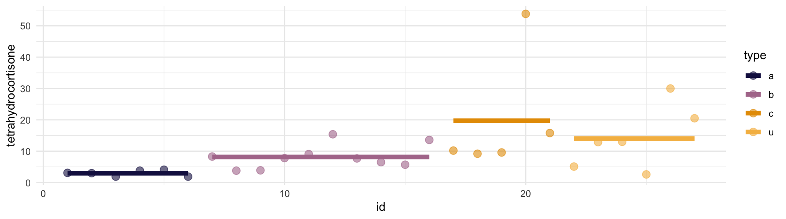
üìù Plantea la formulaci√≥n del ANOVA tetrahydrocortisone vs type. Ejecuta el c√≥digo que consideres y saca conclusiones: ¿hay diferencias significativas de dicha hormona entre los s√≠ndromes con \(\alpha = 0.05\) y \(\alpha = 0.01\)?
üìù En los casos en los que se haya obtenido una dif significativa, ¿cuáles son diferentes entre s√≠? Haz pruebas post-hoc usando Bonferroni y Tukey (realizando comprobaciones previas que consideres). ¿Cuál ser√≠a más adecuado?
Código
pairwise.t.test(datos$tetrahydrocortisone, datos$type, p.adjust.method = "bonferroni", pool.sd = FALSE)
# solo diferencia significativas a vs b (0.01 p-valor ajustado)
# ¿varianzas iguales?
car::leveneTest(datos$tetrahydrocortisone ~ datos$type)
aov(data = datos, formula = tetrahydrocortisone ~ type) |>
TukeyHSD()
# solo dif significativa c vs a
# dif medias = 16.753, IC bajo de 0.65, IC alto de 32.85
# p-valor ajustado 0.039
# en este caso mejor bonferroni porque a) no hay tama√±os iguales y b) no son normalesüìù Por último vamos a considerar que el tipo "a" es nuestro grupo de referencia/control. ¿C√≥mo comparar todas vs control en lugar de todas vs todas (asumimos que son independientes)?
Código
# ¿varianzas iguales?
car::leveneTest(datos$tetrahydrocortisone ~ datos$type)
# ¿Normalidad? ==> no parece
olsrr::ols_test_normality(datos$tetrahydrocortisone)
# Dunnet test
DescTools::DunnettTest(x = datos$tetrahydrocortisone, g = datos$type)
# nos devuelve que el único sig diferente al control es c (como antes)
# resultados "con pinzas" ya que no cumple la normalidad de momentoüê£ Caso práctico I: participaci√≥n vs candidatos
El fichero blackturnout.csv contiene los datos de participación en las elecciones midterm en EEUU de los años 2006, 2008 y 2010: turnout proporción de participación de la población negra (respecto a población negra en edad de votar), cvap proporción de habitantes de población negra del distrito y candidate 1 si el candidato pertenece a la población negra.
datos <- read_csv(file = "./datos/blackturnout.csv") |> janitor::clean_names()
datos |> slice_head(n = 5)# A tibble: 5 × 7
x1 year state district turnout cvap candidate
<dbl> <dbl> <chr> <dbl> <dbl> <dbl> <dbl>
1 1 2008 AK 0 0.710 0.0350 0
2 2 2010 AK 0 0.448 0.0323 0
3 3 2010 AK 1 0.448 0.0323 0
4 4 2008 AK 1 0.710 0.0350 0
5 5 2006 AK 1 0.439 0.0318 0Intenta responder a las preguntas planteadas en el workbook
üê£ Caso práctico II: atractivo vs alcohol
Los datos los tenemos cargados directamente en beer_goggles_effect.csv
datos <- read_csv(file = "./datos/beer_goggles_effect.csv") |> janitor::clean_names()
datos |> slice_head(n = 5)# A tibble: 5 × 3
gender alcohol attractiveness
<chr> <chr> <dbl>
1 Female None 67.4
2 Female None 69.9
3 Female None 61.0
4 Female None 58.5
5 Female None 59.7Tenemos guardado el género de 48 estudiantes, divididos en 3 grupos de ingesta de alcohol, que han encontrado pareja que les atrae en un bar. También tenemos el atractivo medido (puntuación del 0 al 100), otorgada por unos “jueces” externos, de la pareja encontrada por cada participante.
Intenta responder a las preguntas planteadas en el workbook
Repaso entrega I
Caso práctico descriptiva: anscombe
Casos prácticos cuali vs cuali:
Cuanti vs cuanti: ver üíª Tu turno
Casos prácticos ANOVA:
Clase 6: primeras regresiones
Historia regresión. Regresión lineal univariante
Historia de la reg
Hay una regla universal: cualquier pariente tuyo es probablemente más mediocre que tú»
La historia de regresión se remonta a Francis Galton, primo de Charles Darwin, que además de estadístico fue psicólogo, geógrafo y, por desgracia, el primer eugenésico (de hecho acuñó el termino)
También fue el primero en proponer métodos de clasificación de huellas en medicina forense e incluso se le atribuye el primer mapa meteorológico de la historia
Regresión y Darwin
Galton mostró fascinación por «El origen de la especies» de su primo. Sin embargo, Galton no se centraba en los mejor adaptados sino en los que él llama mediocres
Según Galton, las sociedades estaban fomentando la mediocridad, interfiriendo en la selección natural, así que empezó a estudiar si el talento era o no hereditario.
¿Su conclusión? El talento se disipaba a lo largo de las generaciones
Regresión a la mediocridad
En 1886 publicó «Regression towards mediocrity in hereditary stature», un artículo que cambiaría la estadística: fue el primer uso documentado de lo que hoy conocemos como recta de regresión

Galton analizó la estatura de 205 hijos y padres, observando que, de nuevo, los valores extremos se disipaban: a lo largo de las generaciones había una regresión (un retroceso) a la mediocridad (entendida como la media)
Hijos de altos eran algo más bajitos, e hijos de bajitos eran algo más altos.
Regresión a la mediocridad
Galton no solo observó que las estaturas «regresaban» a un valor medio sino que lo hacían con un patrón, con un factor constante de \(2/3\): si los padres se desviaban \(+3\) por encima de la media, los hijos se desviaban solo \((2/3)*3 = +2\) por encima de la media.
Aprendizaje estadístico
La regresión lineal es el modelo más simple de lo que se conoce como aprendizaje estadístico (Machine Learning), en concreto del conocido como aprendizaje supervisado
Aprendizaje supervisado: tendremos dos tipos de variables, la variable dependiente (output/target) que se quiere predecir/clasificar, normalmente denotada como \(Y\), y las variables independientes (inputs) o explicativas o predictoras, que contienen la información disponible. Ejemplos: regresión, knn, árboles, etc.
Aprendizaje no supervisado: no existe la distinción entre target y variables explicativas ya que no tenemos etiquetados los datos, no sabemos a priori la respuesta correcta. El aprendizaje no supervisado buscará patrones basados en similitudes/diferencias. Ejemplos: PCA, clustering, redes neuronales, etc.
Modelo predictivo
Dentro del marco de la predicción supervisada un modelo tendrá siempre la siguiente forma:
\[Y = f(\mathbf{X}) + \varepsilon = f\left(X_1, \ldots, X_p \right) + \varepsilon, \quad E \left[Y | \boldsymbol{X} = x \right] =f\left(X_1, \ldots, X_p \right) \]
- \(X\) serán los datos
- \(f(\cdot)\) será nuestro modelo, es decir, el valor esperado de \(Y\) con la información que tenemos.
- \(\mathbf{X} = \left(X_1, \ldots, X_p \right)\) serán nuestras predictoras o variables independientes
- \(\varepsilon\) será el error o ruido, una variable aleatoria de media 0 \(E \left[\varepsilon | \boldsymbol{X} = x \right] = 0\) (en estadística SIEMPRE nos vamos a equivocar).
Modelo predictivo
\[Y = f(\mathbf{X}) + \varepsilon = f\left(X_1, \ldots, X_p \right) + \varepsilon, \quad E \left[Y | \boldsymbol{X} = x \right] =f\left(X_1, \ldots, X_p \right) \]
El objetivo es intentar estimar dicha variable objetivo pero no a nivel individual sino su promedio \(E \left[Y | \boldsymbol{X} = x \right]\) minimizando al máximo el error cometido (la parte que podemos evitar).
El modelo estimado se definirá como
\[\widehat{Y} := \widehat{E \left[Y | \boldsymbol{X} = x \right]} = \widehat{f}\left(X_1, \ldots, X_p \right), \quad \widehat{\varepsilon} = \widehat{Y} - Y\]
\(\widehat{Y}\) serán las estimaciones, definidas como la estimación del valor esperado de \(Y\) con la información que tenemos.
\(\widehat{f}\) será el modelo estimado
\(\widehat{\varepsilon}\) los errores estimados (con media muestral igual a cero).
Reg. lineal univariante
En el caso concreto de la regresión lineal nuestro modelo será un hiperplano lineal (y en el caso de una variable, una simple recta):
\[E \left[Y | \boldsymbol{X} = x \right] = \beta_0 + \beta_1 X_1 + \ldots + \beta_p X_p\]
Su estimación será por tanto
\[\widehat{Y} := \widehat{E \left[Y | \boldsymbol{X} = x \right]} = \widehat{f}(\mathbf{X}) = \widehat{\beta_0} + \widehat{\beta_1} X_1 + \ldots + \widehat{\beta_p} X_p \]
El modelo \(\widehat{f}(\cdot)\) será una recta/hiperplano lineal
En el caso de la regresión lineal univariante tendremos por tanto \(E \left[Y | \boldsymbol{X} = x \right] = \beta_0 + \beta_1X\) (\(p = 1\))
El objetivo será obtener la estimación de los \(\widehat{\beta}\) tal que minimicemos el error
Varianza residual
El objetivo será explicar el máximo de información (variabilidad) de Y con la información de X. Como ya se mencionó en el tema de ANOVA, una manera de cuantificar lo que no podemos explicar es lo que llamamos varianza residual (o error cuadrático medio) (varianza del error).
Dicha cantidad la podemos estimar muestralmente como sigue (ya que la media muestral de los errores será cero)
\[s_{r}^{2} = \frac{1}{n} \displaystyle \sum_{i=1}^{n} \left( \widehat{\varepsilon}_{i} - \overline{\widehat{\varepsilon}}_{i}\right)^2 = \frac{1}{n} \displaystyle \sum_{i=1}^{n} \widehat{\varepsilon}_{i}^{2} \]
¿Cómo quedaría la fórmula si desarrollo lo que vale los errores estimados \(\widehat{\varepsilon}\)?
\[s_{r}^{2} := s_{r}^{2}\left(\widehat{\beta}_0, \widehat{\beta}_1 \right)= \frac{1}{n} \sum_{i=1}^{n} \left(Y_i - \widehat{Y}_i \right)^2 = \frac{1}{n} \sum_{i=1}^{n} \left[Y_i - \left(\widehat{\beta}_0 + \widehat{\beta}_1X_i \right)\right]^2\]
Varianza residual
\[s_{r}^{2} := s_{r}^{2}\left(\widehat{\beta}_0, \widehat{\beta}_1 \right)= \frac{1}{n} \sum_{i=1}^{n} \left(Y_i - \widehat{Y}_i \right)^2 = \frac{1}{n} \sum_{i=1}^{n} \left[Y_i - \left(\widehat{\beta}_0 + \widehat{\beta}_1X_i \right)\right]^2\]
IMPORTANTE: esa varianza residual cuantifica la variabilidad (es decir, la información) de la variable objetivo que NO EXPLICA la variable X, o lo que es lo mismo, cuantifica cúanto nos equivamos en promedio, un promedio de las desviaciones (al cuadrado) entre el valor real \(y\) y el valor predicho \(\widehat{y}\)
Método mínimos cuadrados
El método de los mínimos cuadrados, originariamente planteado a la vez por Legendre y Gauss, consiste en establecer que los parámetros óptimos serán aquellos \(\left(\widehat{\beta}_0, \widehat{\beta}_1 \right)\) que minimicen dicha suma de cuadrados (que minimicen la varianza residual)
\[\widehat{\boldsymbol{\beta}} = \left(\widehat{\beta}_0, \widehat{\beta}_1 \right) = \arg \min_{\left(\beta_0, \beta_1 \right) \in \mathbb{R}^2} s_{r}^{2}\left(\beta_0, \beta_1 \right) = \arg \min_{\left(\beta_0, \beta_1 \right) \in \mathbb{R}^2} n*s_{r}^{2}\left(\beta_0, \beta_1 \right)\]
Vamos a desarrollar ese cuadrado…
Método mínimos cuadrados
\[s_{r}^{2}\left(\beta_0, \beta_1 \right) = \frac{1}{n} \sum_{i=1}^{n} \left[Y_i - \left(\beta_0 + \beta_1 X_i \right)\right]^2\] Vamos a desarrollar ese cuadrado…
\[\begin{eqnarray} s_{r}^{2}\left(\beta_0, \beta_1 \right) &=& \frac{1}{n} \sum_{i=1}^{n} \left[Y_{i}^{2} + \left(\beta_0 + \beta_1 X_i \right)^2 - 2Y_{i}\left(\beta_0 + \beta_1 X_i \right)\right] \nonumber \\ &=& \frac{1}{n} \sum_{i=1}^{n} \left[Y_{i}^{2} + \left(\beta_{0}^{2} + \beta_{1}^{2}X_{i}^{2} + 2\beta_{0}\beta_{1} X_i \right) - 2Y_{i}\beta_{0} - 2Y_{i}\beta_{1} X_i \right] \end{eqnarray}\]
Método mínimos cuadrados
\[\begin{eqnarray} s_{r}^{2}\left(\beta_0, \beta_1 \right) &=& \frac{1}{n} \sum_{i=1}^{n} \left[Y_{i}^{2} + \left(\beta_0 + \beta_1 X_i \right)^2 - 2Y_{i}\left(\beta_0 + \beta_1 X_i \right)\right] \nonumber \\ &=& \frac{1}{n} \sum_{i=1}^{n} \left[Y_{i}^{2} + \left(\beta_{0}^{2} + \beta_{1}^{2}X_{i}^{2} + 2\beta_{0}\beta_{1} X_i \right) - 2Y_{i}\beta_{0} - 2Y_{i}\beta_{1} X_i \right] \end{eqnarray}\]
¿Cómo encontrar el mínimo de una función?
Efectivamente, derivando.
\[\frac{\partial s_{r}^{2}}{\partial \beta_0} = \frac{1}{n} \sum_{i=1}^{n} \left[ 2\beta_{0} + 2 \beta_1 X_i - 2Y_i \right] = 2 \left( \beta_{0} + \beta_{1} \overline{x} - \overline{y} \right)\]
\[\frac{\partial s_{r}^{2}}{\partial \beta_1} = \frac{1}{n} \sum_{i=1}^{n} \left[ 2\beta_{1}X_{i}^{2} + 2 \beta_0 X_i - 2Y_iX_i \right] = 2 \left( \beta_{1} \overline{x^2}+\beta_{0}\overline{x} - \overline{xy} \right)\]
Método mínimos cuadrados
Si lo agrupamos en un sistema y lo igualamos a cero para encontrar el óptimo tenemos
\[\left\{\beta_{0} + \beta_{1} \overline{x} = \overline{y} \atop \overline{x} \beta_{0} + \overline{x^2} \beta_{1} = \overline{xy} \right.\]
¿Cómo resolver un sistema?
Haciendo la regla de Cramer tenemos que
\[\widehat{\beta}_1 = \frac{\overline{xy} - \overline{x}*\overline{y}}{\overline{x^2} - \overline{x}^2} = \frac{s_{xy}}{s_{x}^{2}}\]
\[\widehat{\beta}_0 = \frac{\overline{y}*\overline{x^2} - \overline{x}*\overline{xy}}{\overline{x^2} - \overline{x}^2} = \overline{y} + \frac{\overline{y}*\overline{x}^2- \overline{x}*\overline{xy}}{\overline{x^2} - \overline{x}^2} = \overline{y} - \widehat{\beta}_1 \overline{x}\]
Método mínimos cuadrados
\[\widehat{\beta}_1 = \frac{s_{xy}}{s_{x}^{2}}, \quad \widehat{\beta}_0 = \overline{y} - \widehat{\beta}_1 \overline{x}\]
Se puede demostrar cómo los estimadores mínimos cuadrados coincide con los estimadores de máxima verosimilitud: condicionada a la muestra obtenida, ¿cuál es el valor más probable/verosímil de los parámetros? (para ello lo que se busca es maximizar la log-verosimilitud, que no es más que el logaritmo de la función de densidad condicionada a los datos, dependiendo de los dos parámetros)
Estimación reg. univariante
Los estimadores de los parámetros de una regresión lineal univariante serán por tanto \(\widehat{\beta}_1 = \frac{s_{xy}}{s_{x}^{2}}\) (pendiente de la recta) y \(\widehat{\beta}_0 = \overline{y} - \widehat{\beta}_1 \overline{x}\) (ordenada en el origen)
Es importante distinguir lo población de lo muestral
Los parámetros \(\left( \beta_0, \beta_1 \right)\) son desconocidos, los parámetros poblacionales
Los parámetros \(\left( \widehat{\beta}_0, \widehat{\beta}_1 \right)\) son estimados a partir de los datos, son variables aleatorias ya que han sido calculados en función de una muestra aleatoria \(\left\lbrace \left(x_i, y_i \right) \right\rbrace_{i=1}^{n}\) de la población $(X, Y ) $
Estimación reg. univariante
Los estimadores de los parámetros de una regresión lineal univariante serán por tanto \(\widehat{\beta}_1 = \frac{s_{xy}}{s_{x}^{2}}\) (pendiente de la recta) y \(\widehat{\beta}_0 = \overline{y} - \widehat{\beta}_1 \overline{x}\) (ordenada en el origen)
¿Cuál es su interpretación?
- Ordenada en el origen: también llamado intercepto, y denotado como \(\beta_0\) su valor real, es el valor de \(Y\) cuando \(X=0\). Es decir, \(\widehat{\beta}_0\) se puede interpretar como la estimación \(\widehat{Y}\) cuando \(X = 0\) (cuando dicha estimación tenga sentido).
- Pendiente: denotado com \(\beta_1\) su valor real, cuantifica el incremento de \(Y\) cuando \(X\) aumenta una unidad. Es decir, \(\widehat{\beta}_1\) se puede interpretar como la variación de la estimación \(\widehat{Y}\) cuando \(X\) tiene un incremento unitario.
üíª Tu turno
Intenta realizar los siguientes ejercicios sin mirar las soluciones
üìù Elimina ausentes de estatura y peso en la base de datos de starwars
üìù Para hacer un ajuste de regresi√≥n lineal univariante en R solo necesitamos utilizar la funci√≥n lm() (de linear model) con dos argumentos:
data = ...: los datos de los que queremos sacar el ajuste (sin ausentes de momento)formula = ...: la fórmula del ajuste (y frente a x, expresado comoy ~ x)
Realiza el ajuste de regresión peso vs estatura
üìù Interpreta cada parte de la salida (hasta la tabla de coefficients incluida)
Código
# `Call: ...`: la orden que hemos ejecutado
# `Residuals: ...`: un resumen en forma de cuartiles de los residuales/errores
# (fíjate que aunque la media de los errores siempre es 0, no tiene porque serlo la mediana, de hecho que no lo sea ya nos indica que normales no van a ser seguramente).
# `Coefficients: ...`: de momento solo nos interesa la columna estimate que nos da las
# estimaciones de los parámetros. En la fila `Intercept` siempre irá beta_0, y el resto de
# filas tendrá el nombre de la variable predictora a la que multiplica el parámetro (en
# este caso la fila `height` corresponde a la estimaci√≥n de beta_1)üìù Con la informaci√≥n anterior determina la ecuaci√≥n del modelo
Código
# En nuestro caso particular, el [**ajuste de regresión**]{.hl-yellow} viene dado por
# Y_hat = -11.4868 + 0.6240*X, donde X es la estatura: por cada cm extra que mida un
# personaje, el modelo estima que el peso aumenta 0.6240 kg, y la estimación de peso para
# un persona que mida 0 cm es de -11.4868 kg Rango de fiabilidad
Aunque hablaremos en profundidad de la bondad de ajuste, supongamos que tenemos un modelo extremadamente bueno, con una bondad de ajuste \(R^2 = 0.99\). ¿Sería fiable nuestro modelo anterior para predecir el peso de un personaje con \(X = 15\) cm?
Si te fijas la ¡predicción del peso es negativa!: por muy bebé que sea, algo pesará. ¿Por qué sucede esto?
Rango de fiabilidad
Nuestro modelo solo puede aprender de los datos que conoce: solo podremos predecir para valores nuevos de las predictoras dentro del rango de las predictoras con las que entrenamos el modelo
Da igual lo bueno que sea el modelo: las predicciones fuera del rango de las predictoras de entrenamiento no serán fiables ya que el modelo no sabe lo que sucede fuera.
Clase 7: inferencia
Inferencia de la regresión
Repaso
- Modelo lineal: descrito como \(Y = \beta_0 + \beta_1 X_1 + \ldots + \beta_p X_p + \varepsilon\), buscamos estimar el valor esperado \(E \left[Y | \boldsymbol{X} = x \right] = \beta_0 + \beta_1 X_1 + \ldots + \beta_p x_p\), donde \(\boldsymbol{X}\) es la población y \(x\) la muestra.
- Caso univariante: \(p = 1\) tal que \(E \left[Y | \boldsymbol{X} = x \right] = \beta_0 + \beta_1 x\).
- Estimación: \(\widehat{Y}\) en función de \(\left(\widehat{\beta}_0, \widehat{\beta}_1 \right)\). De todas las rectas posibles, queremos la recta de regresión mínimos-cuadrados: minimiza la varianza residual (calculamos sus derivadas parciales, igualamos a cero y resolvemos el sistema). Esos estimadores serán \(\widehat{\beta}_1 = \frac{s_{xy}}{s_{x}^{2}}\) y \(\widehat{\beta}_0 = \overline{y} - \widehat{\beta}_1 \overline{x}\).
- Predicción: podemos estimar o predecir valores con la recta \(\widehat{Y} = \widehat{\beta}_0 + \widehat{\beta}_0 X\), siempre y cuando \(X = x\) esté dentro del rango de valores de entrenamiento del modelo.
Diagnosis
Hasta ahora no hemos pedido nada a la muestra \(\left\lbrace \left( X_i, Y_i \right) \right\rbrace_{i=1}^{n}\), ¿para qué necesitaríamos hipótesis entonces?
La razón es que, hasta ahora, lo único que hemos podido realizar es una estimación puntual de los parámetros, pero dado que dichos estimadores serán variables aleatorias, necesitaremos realizar inferencia estadística sobre ellos (recuerda: los parámetros son simples estimaciones para esa muestra de la población, de forma que dada otra muestra, la recta será distinta).
Para poder cuantificar la variabilidad y precisión de nuestras estimaciones necesitaremos que los datos cumplan ciertas hipótesis probabilísticas: lo interesante no es la estimación puntual de los parámetros a partir de la muestra sino lo que podamos inferir de ellos a la población
Diagnosis
En el caso de la regresión lineal univariante pediremos 4 hipótesis
- Linealidad: el valor esperado de \(Y\) es \(E \left[Y | \boldsymbol{X} = x \right] = \beta_0 + \beta_1 x\)
Homocedasticidad: el modelo no podrá explicar toda la información pero necesitamos que la varianza del error sea finita y constante, sin depender de \(x\), tal que \(\sigma_{r}^2 = \sigma_{\varepsilon}^2 = {\rm Var} \left[\varepsilon | \boldsymbol{X} = x \right] = cte < \infty\). . . .
Normalidad: pediremos que \(\varepsilon \sim N \left(0, \sigma_{r}^2 \right)\)
- Independencia: los errores \(\left\lbrace \varepsilon_i \right\rbrace_{i=1}^{n}\) deben ser independientes entre sí (el error en una observación no depende de otras). En particular, serán incorrelados
\[{\rm Cor}_{\varepsilon_i \varepsilon_j} = E \left[\varepsilon_i \varepsilon_j \right] - E \left[\varepsilon_i \right] E \left[\varepsilon_j \right] = E \left[\varepsilon_i \varepsilon_j \right] = 0, \quad i \neq j\]
Diagnosis
Las 4 hipótesis se pueden resumir de manera teórica en
\[Y | \boldsymbol{X} = x \sim N \left(\beta_0 + \beta_1x, \sigma_{\varepsilon}^2 \right)\]
Su versión muestral sería simplemente
\[y_i | \boldsymbol{X} = x_i \sim N \left(\beta_0 + \beta_1x_i, \sigma_{\varepsilon}^2 \right), \quad i=1,\ldots,n\]
Inferencia de los parámetros
Las hipótesis nos permiten decir que los parámetros estimados siguen una distribución (condicionada) normal de media el parámetro a estimar y de varianza el conocido como standard error
\[\widehat{\beta}_j | \left( X=x \right) \sim N \left(\beta_j, SE \left(\widehat{\beta}_j\right)^2 \right), \quad j=0,1\]
Por las propiedades de la normal y el teorema central del límite
\[\frac{\widehat{\beta}_j - \beta_j}{SE \left(\widehat{\beta}_j\right)}| \left( X=x \right) \sim N \left(0, 1 \right), \quad j=0,1\]
Inferencia de los parámetros
\[\widehat{\beta}_j | \left( X=x \right) \sim N \left(\beta_j, SE \left(\widehat{\beta}_j\right)^2 \right), \quad j=0,1\]
Veremos más adelante porqué pero de momento…estos son los \(SE^2\) (varianza de nuestros parámetros)
\[SE \left(\widehat{\beta}_0\right)^2 = \frac{\sigma_{\varepsilon}^{2}}{n}\left[ 1+ \frac{\overline{x}^2}{s_{x}^2} \right], \quad SE \left(\widehat{\beta}_1\right)^2 = \frac{\sigma_{\varepsilon}^{2}}{n s_{x}^2}\]
¿Qué propiedades tienen entonces los estimadores \(\left(\widehat{\beta}_0,\widehat{\beta}_1 \right)\)?
Inferencia de los parámetros
\[\widehat{\beta}_j | \left( X=x \right) \sim N \left(\beta_j, SE \left(\widehat{\beta}_j\right)^2 \right), \quad j=0,1\]
\[SE \left(\widehat{\beta}_0\right)^2 = \frac{\sigma_{\varepsilon}^{2}}{n}\left[ 1+ \frac{\overline{x}^2}{s_{x}^2} \right], \quad SE \left(\widehat{\beta}_1\right)^2 = \frac{\sigma_{\varepsilon}^{2}}{n s_{x}^2}\]
- Insesgados: ambos son estimadores insesgados ya que la esperanza de la estimación es el valor a estimar. \(E \left[ \widehat{\beta}_j \right] = \beta_j\)
- Precisión vs tamaño muestral: cuando \(n \to \infty\), sus varianzas tienden a cero, es decir, \(SE \left(\widehat{\beta}_j\right)^2 \to^{n \to \infty} 0\) ya que \(n\) está dividiendo. Traducción: a más datos, mayor precision (menos varianza tendrán los estimadores si repetimos la toma de muestras)
Inferencia de los parámetros
\[SE \left(\widehat{\beta}_0\right)^2 = \frac{\sigma_{\varepsilon}^{2}}{n}\left[ 1+ \frac{\overline{x}^2}{s_{x}^2} \right], \quad SE \left(\widehat{\beta}_1\right)^2 = \frac{\sigma_{\varepsilon}^{2}}{n s_{x}^2}\]
- Precisión vs var residual: cuanto más grande sea la varianza del error \(\sigma_{\varepsilon}^{2}\), \(SE \left(\widehat{\beta}_j\right)^2\) crecerá (es decir, más ruido implicará más imprecisión)
- Precisión vs varianza de X: cuanto más grande sea la varianza de la predictora \(s_{x}^2\), \(SE \left(\widehat{\beta}_j\right)^2\) decrecerá, tal que \(SE \left(\widehat{\beta}_j\right)^2 \to^{s_{x}^2 \to \infty} 0\). Dicho de otra forma: cuánta más información (varianza) contenga nuestra tabla, mayor precisión.
- Precisión vs media X: solo afecta a la estimación de \(\beta_0\), cuya precisión decrece cuando la media aumenta. Esto tiene sentido ya que cuánto más grande en media sean los datos, menos fiable será la predicción para \(X=0\).
Inferencia de los parámetros
Un inciso: no se si te has fijado que para calcular \(\widehat{\beta}_0\) necesitas \(\widehat{\beta}_1\): los parámetros están relacionados
\[Cov \left(\widehat{\beta}_0,\widehat{\beta}_1\right) = Cov \left(\overline{y} - \widehat{\beta}_1 \overline{x} ,\widehat{\beta}_1\right) = Cov\left(\overline{y} ,\widehat{\beta}_1\right) - Cov\left(\widehat{\beta}_1 \overline{x} ,\widehat{\beta}_1\right) = - \overline{x} V \left[\widehat{\beta}_1 \right] = \frac{-\overline{x}\sigma_{\varepsilon}^{2}}{n s_{x}^2}\] . . .
Fíjate que esto implica que si \(\overline{x}> 0\), entonces la covarianza es negativa: poca precisión en la estimación de uno de los parámetros producirá mucha precisión en la estimación del otro (y viceversa).
Inferencia de los parámetros
\[\widehat{\beta}_j | \left( X=x \right) \sim N \left(\beta_j, SE \left(\widehat{\beta}_j\right)^2 \right), \quad j=0,1\]
\[SE \left(\widehat{\beta}_0\right)^2 = \frac{\sigma_{\varepsilon}^{2}}{n}\left[ 1+ \frac{\overline{x}^2}{s_{x}^2} \right], \quad SE \left(\widehat{\beta}_1\right)^2 = \frac{\sigma_{\varepsilon}^{2}}{n s_{x}^2}\]
Pero tenemos un problema: la varianza residual poblacional (varianza población del error) \(\sigma_{\varepsilon}^{2}\) es desconocida. Como suele pasar, la sustituiremos por un estimador (insesgado) de la misma donde \(p\) es el número de variables (el cuadrado de lo que R llama `Residual standard error)
\[\widehat{\sigma_{\varepsilon}^{2}} = \frac{n}{n-p-1} s_{r}^{2} = \frac{1}{n-p-1} \displaystyle \sum_{i=1}^{n} \widehat{\varepsilon}_{i}^2 =_{p=1} \frac{1}{n-2} \displaystyle \sum_{i=1}^{n} \widehat{\varepsilon}_{i}^2 := \text{Res standard error}^2\]
donde \(s_{r}^{2} = MSE\) es la varianza residual muestral o el error cuadrático medio.
Inferencia de los parámetros
\[\frac{\widehat{\beta}_j - \beta_j}{SE \left(\widehat{\beta}_j\right)} | \left( X=x \right) \sim N \left(0, 1 \right), \quad j=0,1\]
¿Qué suele suceder cuando en una normal desconocemos la varianza real y la sustituimos por su estimador insesgado?
Si sustituimos el error standard por su estimador (sustituyendo la varianza residual por su estimador insesgado), obtenemos que sigue una t-Student
\[\frac{\widehat{\beta}_j - \beta_j}{\widehat{SE} \left(\widehat{\beta}_j\right)} | \left( X=x \right) \sim t_{n-p-1} , \quad j=0,1\]
donde \(\widehat{SE} \left(\widehat{\beta}_0\right)^2 = \frac{\widehat{\sigma_{\varepsilon}^{2}}}{n}\left[ 1+ \frac{\overline{x}^2}{s_{x}^2} \right]\) y \(\widehat{SE} \left(\widehat{\beta}_1\right)^2 = \frac{\widehat{\sigma_{\varepsilon}^{2}}}{n s_{x}^2}\)
Inferencia de los parámetros
Call:
lm(formula = mass ~ height, data = datos)
Residuals:
Min 1Q Median 3Q Max
-60.95 -29.51 -20.83 -17.65 1260.29
Coefficients:
Estimate Std. Error t value Pr(>|t|)
(Intercept) -11.4868 111.3842 -0.103 0.918
height 0.6240 0.6262 0.997 0.323
Residual standard error: 169.5 on 57 degrees of freedom
Multiple R-squared: 0.01712, Adjusted R-squared: -0.0001194
F-statistic: 0.9931 on 1 and 57 DF, p-value: 0.3232std error: es lo que hemos denotado como \(\widehat{SE} \left(\widehat{\beta}_j\right)^2\)
t value: es el estadístico \(\frac{\widehat{\beta}_j - 0}{\widehat{SE} \left(\widehat{\beta}_j\right)}\) que hemos dicho que sigue una t-Student (fíjate que hemos puesto \(\beta_j = 0\))
Inferencia de los parámetros
Call:
lm(formula = mass ~ height, data = datos)
Residuals:
Min 1Q Median 3Q Max
-60.95 -29.51 -20.83 -17.65 1260.29
Coefficients:
Estimate Std. Error t value Pr(>|t|)
(Intercept) -11.4868 111.3842 -0.103 0.918
height 0.6240 0.6262 0.997 0.323
Residual standard error: 169.5 on 57 degrees of freedom
Multiple R-squared: 0.01712, Adjusted R-squared: -0.0001194
F-statistic: 0.9931 on 1 and 57 DF, p-value: 0.3232Pr(>|t|): representa un p-valor. ¿De qué contraste se te ocurre?
Residual standard error: es el estimador insesgado de la desviación típica residual, que hemos denotado como \(\widehat{\sigma_{\varepsilon}}\)
Inferencia de los parámetros
\[\frac{\widehat{\beta}_j - \beta_j}{\widehat{SE} \left(\widehat{\beta}_j\right)} | \left( X=x \right) \sim t_{n-p-1} , \quad j=0,1\]
Si te acuerdas de inferencia, esto implica que los intervalos de confianza de nuestros parámetros son
\[IC \left(\alpha, \widehat{\beta}_j \right) = \left[\widehat{\beta}_j - t_{n-p-1; \alpha/2} \widehat{SE} \left(\widehat{\beta}_j\right), \widehat{\beta}_j + t_{n-p-1; \alpha/2} \widehat{SE} \left(\widehat{\beta}_j\right) \right]\] donde \(t_{n-p-1; \alpha/2}\) es el cuantil \(1-\alpha/2\) (deja a la izquierda una probabilidad de \(1-\alpha/2\)).
Inferencia de los parámetros
Podemos calcular los intervalos de confianza de los parámetros en R con confint()
0.5 % 99.5 %
(Intercept) -308.31117 285.337538
height -1.04467 2.292677 2.5 % 97.5 %
(Intercept) -234.5297439 211.556113
height -0.6298893 1.877896 5 % 95 %
(Intercept) -197.7243448 174.750713
height -0.4229783 1.670985Inferencia de los parámetros
¿Qué significa realmente un intervalo de confianza?
La probabilidad de que el parámetro real caiga dentro NO EXISTE: el parámetro es desconocido pero fijo, no aleatorio, así que no sentido calcular su probabilidad.
Si obtenemos para un parámetro un intervalo \([-1, 1]\) al 95%, no significa que \(P(parametro \in [-1, 1]) = 0.95\): significa que si tomamos 1000 muestras distintas de la población y calculamos para cada una el intervalo de confianza, aproximadamente 950 intervalos de confianza contendrán dentro el parámetro real
Un intervalo al 95% implica que habrá una frecuencia esperada de 0.95 de que intervalos que no conocemos (porque se derivan de muestras que no hemos tomado) contengan al parámetro real, pero no es la probabilidad de que tu intervalo calculado contenga a dicho parámetro: nos habla la precisión de nuestra metodología de estimación, no del parámetro.
Inferencia de los parámetros
Ejemplo. Dada una población normal \(\mu = 3\) y \(\sigma = 1.2\), generamos 500 muestras distintas (tamaño \(n = 100\) cada una), de manera que para cada una aplicamos un t.test() para calcular un IC para la media \(\mu\).
Código
mu <- 3
sigma <- 1.2
m <- 500
conf_int <- tibble("id" = 1:m, "low" = NA, "high" = NA)
for (i in 1:m) {
sample <- rnorm(n = 100, mean = mu, sd = sigma)
hyp_test <- t.test(x = sample)
conf_int[i, 2] <- hyp_test$conf.int[1]
conf_int[i, 3] <- hyp_test$conf.int[2]
}
conf_int <-
conf_int |>
mutate(true_param = mu >= low & mu <= high)
ggplot(conf_int) +
geom_segment(aes(y = id, yend = id, x = low, xend = high,
color = true_param, linewidth = true_param)) +
geom_vline(xintercept = mu) +
scale_linewidth_manual(values = c(1.1, 0.2)) +
theme_minimal() +
guides(linewidth = "none") +
labs(x = "Valores del intervalo",
y = "id intervalo",
color = "¿Contiene mu real?")Inferencia de los parámetros
Y si tenemos inferencia, tenemos contrastes: ¿te acuerdas de los p-valores que devuelve la tabla para cada parámetro?
Para cada parámetro se realiza un contraste de significancia: ¿cuánta evidencia hay en mis datos para poder decir que el valor estimado de mi parámetro es distinto de 0?
\[H_0:~\widehat{\beta}_j = 0 \quad vs \quad H_1:~\widehat{\beta}_j \neq 0\]
El estadístico usado es el t value que devuelve R definido como \(\frac{\widehat{\beta}_j - 0}{\widehat{SE} \left(\widehat{\beta}_j\right)}\) y que, BAJO EL SUPUESTO DE QUE LA HIPÓTESIS NULA SEA CIERTA, sigue una t-Student \(t_{n-p-1}\)
Inferencia de los parámetros
\[H_0:~\widehat{\beta}_j = 0 \quad vs \quad H_1:~\widehat{\beta}_j \neq 0\]
Este contraste significancia en realidad contesta a la siguiente pregunta
¿Tiene mi variable \(X_j\) un efecto lineal SIGNIFICATIVO en mi variable \(Y\)?
Esa pregunta puede ser respondida desde un punto de vista frecuentista haciendo uso de los p-valores: si \(p-value < \alpha\), se suele rechazar la nula (rechazamos que la variable no tenga efecto lineal significativo, es decir, aceptamos que sí lo tiene); en caso contrario no se suele rechazar (que no es lo mismo que aceptarla).
Inferencia de los parámetros
Call:
lm(formula = mass ~ height, data = datos)
Residuals:
Min 1Q Median 3Q Max
-60.95 -29.51 -20.83 -17.65 1260.29
Coefficients:
Estimate Std. Error t value Pr(>|t|)
(Intercept) -11.4868 111.3842 -0.103 0.918
height 0.6240 0.6262 0.997 0.323
Residual standard error: 169.5 on 57 degrees of freedom
Multiple R-squared: 0.01712, Adjusted R-squared: -0.0001194
F-statistic: 0.9931 on 1 and 57 DF, p-value: 0.3232Si te fijas ambos p-valores están por encima de \(\alpha = 0.05\) (umbral adoptado habitualmente) los que nos dice que no hay evidencias de los datos sean compatibles con afirmar que haya efectos lineales significativos
¿Y si probamos a quitar \(\beta_0\) (es decir, la respuesta está centrada)?
Inferencia de los parámetros
Para ello basta añadir un -1 antes de las variables predictoras.
Call:
lm(formula = mass ~ -1 + height, data = datos)
Residuals:
Min 1Q Median 3Q Max
-60.22 -29.32 -21.83 -18.22 1259.88
Coefficients:
Estimate Std. Error t value Pr(>|t|)
height 0.5607 0.1230 4.56 2.7e-05 ***
---
Signif. codes: 0 '***' 0.001 '**' 0.01 '*' 0.05 '.' 0.1 ' ' 1
Residual standard error: 168 on 58 degrees of freedom
Multiple R-squared: 0.2639, Adjusted R-squared: 0.2512
F-statistic: 20.79 on 1 and 58 DF, p-value: 2.697e-05Fíjate que ahora, amén que hay un efecto lineal significativo de la altura y de tener \(R^2\) mayor, \(\beta_1\) tiene una precisión mayor. En este caso solo podía quitar uno (perderíamos \(X\)), pero veremos más adelante cómo decidir cuál quitar si tuviésemos varias variables.
Clase 8: predicción y simulación
Entendiendo mejor la regresión
Predicción en R
Una vez estimado el modelo (sus coeficientes) podemos usarlo, bien para estimar valores que el modelo conoce (de los que aprendió) o para predecir nuevos valores de los que el modelo no ha aprendido
Simplemente necesitamos la función predict(modelo, nuevos_datos), usando como argumentos el modelo entrenado y un nuevo dataset que contenga una/s columna/s llamadas igual que nuestras variables predictores con los valores de la predictora para los que queremos predecir
Simulación
Antes de seguir con un caso real, es importante pararse a reflexionar sobre lo ya aprendido, y una de las mejores es con simulación
- Ejercicio 1: simula una muestra de tamaño \(n = 1000\) de una variable aleatoria \(X \sim N(\mu=3, \sigma = 1)\). Esta variable representará nuestra predictora (normalmente la tendríamos ya en la tabla pero aquí la hemos simulado).
- Ejercicio 2: simula un ruido \(\varepsilon\) de varianza \(0.1\) que cumpla las condiciones que necesitamos en una regresión lineal
- Ejercicio 3: con la variable predictora y el ruido simulado, simula una variable aleatoria \(Y\) bajo la hipótesis de que \(Y\) puede ser explicada por \(X\) mediante una recta de parámetros reales \(\beta_0 = -2\) y \(\beta_1 = 5\).
- Ejercicio 4: visualiza en un gráfico la predictora \(x\) vs var objetivo \(y\), en otro gráfico la distribución de \(Y\) y en otro la distribución de los errores
Simulación
Deberías obtener algo parecido a esto (parecido != igual ya que estamos generando variables aleatorias: en promedio se parecerán pero a nivel individual no tienen porque coincidir)
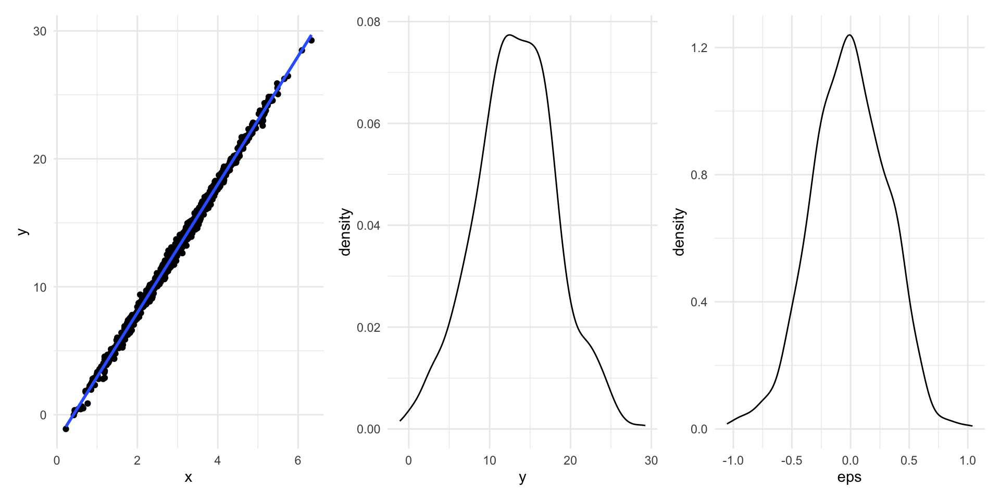Simulación
- Ejercicio 4: sin hacer uso de
lmcalcula el estimador insesgado de \(\beta_0\) y el estimador insesgado de \(\beta_1\). Haz uso de las funciones (R base o tidyverse) que consideres para realizar los cálculos.
- Ejercicio 5: con dichas estimaciones de los parámetros, calcula estimaciones/predicciones de \(y_i\), los conocidos como \(\widehat{y}_i\), y los errores estimados \(\widehat{\varepsilon}_i\). Guarda todo en una tabla de 5 columnas: \(y\), \(x\), \(\varepsilon\), \(\widehat{y}\) y \(\widehat{\varepsilon}\)
- Ejercicio 6: con dicha tabla haz 3 gráficos. Gráfico 1: valores reales vs predicciones (¿qué deberíamos observar si la estimación fuese buena?) con el color dependiendo del error cometido. Gráfico 2: Q-Q plot de los errores reales simulados (los que conocemos porque los hemos generado nosotros). Gráfico 3: Q-Q plot de los errores estimados (los únicos que veríamos si fuesen datos reales)
Simulación
Deberías obtener algo parecido a esto (parecido != igual ya que estamos generando variables aleatorias: en promedio se parecerán pero a nivel individual no tienen porque coincidir)
Simulación
- Ejercicio 7: con dichos errores estimados estima (como si no la conocieses) de manera insesgada la desviación típica de los errores \(\widehat{\sigma}_{\varepsilon}\) (el conocido como
Residual standard error)
- Ejercicio 8: con lo ya obtenido calcula sin hacer uso de
lm()las estimaciones de las desviaciones típicas de las variables aleatorias \(\widehat{\beta}_0\) y \(\widehat{\beta}_1\) que representan nuestros estimadores (los conocidos como \(SE\)). Genera dos variables aleatorias (\(n = 5000\)) con la distribución de ambas variables \(\widehat{\beta}_0\) y \(\widehat{\beta}_1\)
- Ejercicio 9: repite el proceso inicial (generar x –> generar errores –> generar y) con los mismos parámetros un total de 5000 iteraciones. En cada iteración calcula los estimadores muestrales de \(\widehat{\beta}_0\) y \(\widehat{\beta}_1\), y visualiza después la distribución de sus valores. Enfrenta esa muestra de betas con la simulación del ejercicio anterior
Simulación
Deberías obtener algo parecido a esto: ¿cómo interpretas las 4 gráficas?
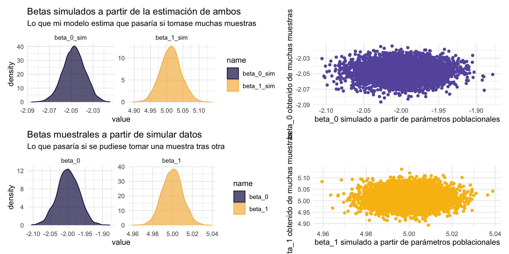üíª Tu turno
Intenta realizar los siguientes ejercicios sin mirar las soluciones
üìù Simula una poblaci√≥n de datos \((x, y)\) (tama√±o n = 1000000, como si fuese la poblaci√≥n te√≥rica real) bajo la hip√≥tesis de que siguen el modelo lineal \(y = 1.5 - 3*x + \varepsilon\). Toma las decisiones que consideres teniendo en cuenta que i) \(\varepsilon\) debe cumplir las condiciones necesarias con una varianza de \(0.75\); ii) \(x\) se generará según una normal de media 1 y varianza 1.5.
üìù Obt√©n una muestra aleatoria simple de \(n = 5000\) de dicha poblaci√≥n.
üìù Ajusta un modelo de regresi√≥n lineal. ¿Cuál es la ecuaci√≥n del modelo estimado? ¿Son los parámetros significativos? ¿Por qu√©? Interpreta el valor de ambos parámetros de manera adecuada.
Código
muestra <- datos |> slice_sample(n = 5000)
ajuste <- lm(data = muestra, y ~ x)
# y_hat = 1.492520 - 2.986930*X
# ambos parámetros significativos porque al realizar
# el contraste de significación (¡ASUMIENDO QUE SE CUMPLEN HIPÓTESIS!)
# salen p-valores < 0.05 ==> rechazamos H0: beta_j = 0 en ambos casos
# 1.492 es la estimación de E[Y|X = 0].
# 2.986 es lo que desciende en promedio Y cuando X aumenta +1 üìù Calcula la media de los residuales al cuadrado (varianza residual o MSE). Haciendo uso de la salida, ¿cuánto estima el modelo que es su estimador insesgado?
üìù Si volvi√©semos a extraer una muestra de la poblaci√≥n y estimásemos \(\beta_0\) y \(\beta_1\), una y otra vez, ¿cuál ser√≠a la distribuci√≥n que observar√≠amos en ambos? ¿Qu√© media tendr√≠a? ¿Qu√© variabilidad?
üìù Repite los ejercicios 1-5 con el único cambio de que la varianza de \(\varepsilon\) ahora será de \(2.5\). Repite los ejercicios 1-5 con el único cambio de que la varianza de \(\varepsilon\) ahora será de \(7\). ¿Qu√© observas?
Código
eps <- rnorm(n = n, mean = 0, sd = sqrt(2.5))
x <- rnorm(n = n, mean = 1, sd = sqrt(1.5))
y <- 1.5 - 3*x + eps
datos <- tibble(y, x, eps)
muestra <- datos |> slice_sample(n = 5000)
ajuste <- lm(data = muestra, y ~ x)
# R2 de 0.9477 a 0.8389
# Estimación varianza residual de 0.8504^2 a 1.579^2
# mismo modelo, pero aparenta funcionar peor
# varianza de beta_0 y beta_1 aumenta
eps <- rnorm(n = n, mean = 0, sd = sqrt(7))
x <- rnorm(n = n, mean = 1, sd = sqrt(1.5))
y <- 1.5 - 3*x + eps
datos <- tibble(y, x, eps)
muestra <- datos |> slice_sample(n = 5000)
ajuste <- lm(data = muestra, y ~ x)
# aún más extremoüìù Repite los ejercicios 1-5 con el único cambio que ahora la muestra será de \(n = 50\). ¿Qu√© observas?
Código
eps <- rnorm(n = n, mean = 0, sd = sqrt(0.75))
x <- rnorm(n = n, mean = 1, sd = sqrt(1.5))
y <- 1.5 - 3*x + eps
datos <- tibble(y, x, eps)
muestra <- datos |> slice_sample(n = 50)
ajuste <- lm(data = muestra, y ~ x)
# Estimación varianza residual de 0.8504^2 a 0.9546^2
# aunque haya empeorado un poco R2 de 0.9477 a 0.9541
# ==> para la cantidad de pocos datos que tienes, no ha
# empeorado tanto (recuerda que R2 depende de la varianza de y)
# a menos n más opciones hay que de la varianza sea más alta
# ya que puedes tener valores más "extremos"
# varianza de beta_0 y beta_1 aumentan (menos precisi√≥n)üê£ Caso práctico I: predicci√≥n de iris
Vamos a empezar la regresión con un ejemplo sencillo haciendo uso del archiconocido dataset iris donde tenemos para 150 plantas de 3 especies distintas guardado su longitud y anchura de sépalo, y su longitud y anchura de pétalo.
Intenta responder a las preguntas planteadas en el workbook
Clase 9: caso práctico
Poniendo en práctica lo aprendido
Resumen
Call:
lm(formula = mass ~ height, data = datos)
Residuals:
Min 1Q Median 3Q Max
-60.95 -29.51 -20.83 -17.65 1260.29
Coefficients:
Estimate Std. Error t value Pr(>|t|)
(Intercept) -11.4868 111.3842 -0.103 0.918
height 0.6240 0.6262 0.997 0.323
Residual standard error: 169.5 on 57 degrees of freedom
Multiple R-squared: 0.01712, Adjusted R-squared: -0.0001194
F-statistic: 0.9931 on 1 and 57 DF, p-value: 0.3232Residuals:tabla con los cuartiles de los errores = residuales
Resumen
Call:
lm(formula = mass ~ height, data = datos)
Residuals:
Min 1Q Median 3Q Max
-60.95 -29.51 -20.83 -17.65 1260.29
Coefficients:
Estimate Std. Error t value Pr(>|t|)
(Intercept) -11.4868 111.3842 -0.103 0.918
height 0.6240 0.6262 0.997 0.323
Residual standard error: 169.5 on 57 degrees of freedom
Multiple R-squared: 0.01712, Adjusted R-squared: -0.0001194
F-statistic: 0.9931 on 1 and 57 DF, p-value: 0.3232Coefficients:tabla referente a la estimación e inferencia de los estimadores de los parámetros \(\widehat{\beta}_j\)
Resumen
Call:
lm(formula = mass ~ height, data = datos)
Residuals:
Min 1Q Median 3Q Max
-60.95 -29.51 -20.83 -17.65 1260.29
Coefficients:
Estimate Std. Error t value Pr(>|t|)
(Intercept) -11.4868 111.3842 -0.103 0.918
height 0.6240 0.6262 0.997 0.323
Residual standard error: 169.5 on 57 degrees of freedom
Multiple R-squared: 0.01712, Adjusted R-squared: -0.0001194
F-statistic: 0.9931 on 1 and 57 DF, p-value: 0.3232Estimate–> media de los estimadores insesgados \(\widehat{\beta}_j \sim N\)Std. Error–> estimador insesgado de la desv. típica de los estimadores \(\widehat{\beta}_j \sim N(estimate, \sigma = std.~error)\) para el que se ha sustituido la desv típica poblacional del error por su estimador insesgadoResidual standard error
Resumen
Call:
lm(formula = mass ~ height, data = datos)
Residuals:
Min 1Q Median 3Q Max
-60.95 -29.51 -20.83 -17.65 1260.29
Coefficients:
Estimate Std. Error t value Pr(>|t|)
(Intercept) -11.4868 111.3842 -0.103 0.918
height 0.6240 0.6262 0.997 0.323
Residual standard error: 169.5 on 57 degrees of freedom
Multiple R-squared: 0.01712, Adjusted R-squared: -0.0001194
F-statistic: 0.9931 on 1 and 57 DF, p-value: 0.3232t value–> estadístico bajo la hipótesis nula \(tvalue = estimate/std.error\)Pr(>|t|)–> p-valor del contraste de significación (\(H_0:~\beta_j = 0\)).
Caso práctico
Vamos a poner en práctica lo aprendido con el dataset wine.csv disponible en el campus.
# A tibble: 27 × 7
Year Price WinterRain AGST HarvestRain Age FrancePop
<dbl> <dbl> <dbl> <dbl> <dbl> <dbl> <dbl>
1 1952 7.50 600 17.1 160 31 43184.
2 1953 8.04 690 16.7 80 30 43495.
3 1955 7.69 502 17.2 130 28 44218.
4 1957 6.98 420 16.1 110 26 45152.
5 1958 6.78 582 16.4 187 25 45654.
6 1959 8.08 485 17.5 187 24 46129.
7 1960 6.52 763 16.4 290 23 46584.
8 1961 8.49 830 17.3 38 22 47128.
9 1962 7.39 697 16.3 52 21 48089.
10 1963 6.71 608 15.7 155 20 48799.
# ℹ 17 more rowsCaso práctico
El conjunto de datos está formado por 27 observaciones (cosechas de vino rojo Burdeos) y 7 variables
Year,Age: año de la cosecha y número de años en barrica.Price: precio en 1990-1991 de cada cosecha (en escala log)WinterRain: lluvia (en mm) que cayó ese año en invierno.AGST: crecimiento medio de la temperatura (en grados Celsius) durante la temporada.HarvestRain: lluvia (en mm) que cayó ese año durante la cosecha.FrancePop: población (miles de habitantes) de Francia.
Ver más en detalles en https://doi.org/10.1080/09332480.1995.10542468
El objetivo: predecir el precio
Caso práctico
# A tibble: 27 × 7
Year Price WinterRain AGST HarvestRain Age FrancePop
<dbl> <dbl> <dbl> <dbl> <dbl> <dbl> <dbl>
1 1952 7.50 600 17.1 160 31 43184.
2 1953 8.04 690 16.7 80 30 43495.
3 1955 7.69 502 17.2 130 28 44218.
4 1957 6.98 420 16.1 110 26 45152.
5 1958 6.78 582 16.4 187 25 45654.
6 1959 8.08 485 17.5 187 24 46129.
7 1960 6.52 763 16.4 290 23 46584.
8 1961 8.49 830 17.3 38 22 47128.
9 1962 7.39 697 16.3 52 21 48089.
10 1963 6.71 608 15.7 155 20 48799.
# ℹ 17 more rowsPara predecir el precio vamos a usar (de momento) una regresión lineal univariante, donde \(Y = precio\) y deberemos elegir la predictora \(X\) más apropiada.
Pasos a seguir
- Análisis exploratorio inicial:
- ¿Las variables son numéricas (continuas)?
- ¿Tienen problemas de rango (por ejemplo, pesos negativos)? ¿Tienen datos ausentes?
- ¿Cómo se distribuyen las variables? Ideas: resúmen numérico, histogramas/densidades, boxplots, gráficos de violín, etc
- ¿Hay datos atípicos?
Pasos a seguir
- Análisis de dependencia:
- ¿Qué predictora está más correlacionada (linealmente) con la variable objetivo a predecir?
- ¿Cómo se relacionan las predictoras entre sí? ¿Están correlacionadas? Ideas: matriz de correlaciones, diagramas de dispersión vs Y, corrplots, etc
- Formulación del modelo
- Fase de estimación:
- ¿Cuánto valen los parámetros estimados? ¿Cómo queda el ajuste?
- ¿Qué interpretación tienen?
Pasos a seguir
- Fase de diagnosis (pendiente de ver, de momento no la hagas pero apunta que hace falta para poder hacer la siguiente fase: sin condiciones no hay inferencia paramétrica)
- Fase de inferencia:
- ¿Qué variabilidad tienen las estimaciones de nuestro parámetros?
- ¿Las predictoras/intercepto tienen un efecto lineal significativo?
- ¿Debemos re-entrenar el modelo sin alguno de ellos?
Pasos a seguir
Fase de evaluación: pendiente de ver, de momento no la hagas pero apunta que hace falta
Fase de predicción (solo tiene sentido con todo lo anterior hecho)
Análisis exploratorio inicial
- Análisis exploratorio inicial:
- ¿Las variables son numéricas (continuas)?
- ¿Tienen problemas de rango (por ejemplo, pesos negativos)? ¿Tienen datos ausentes?
Para responder a dichas preguntas lo más sencillos es hacer uso de la función skim() del paquete {skimr}
En este caso no tenemos ausentes ni problemas de codificación
Análisis exploratorio inicial
- ¿Cómo se distribuyen las variables?
- ¿Hay datos atípicos?
Para ello podemos visualizar la distribución de cada variable haciendo uso de densidades, histogramas y/o boxplots (por ejemplo)
Código
datos_tidy <-
datos |>
pivot_longer(cols = everything(), names_to = "variable", values_to = "values")
ggplot(datos_tidy, aes(x = values)) +
geom_density(aes(color = variable, fill = variable),
alpha = 0.6) +
MetBrewer::scale_color_met_d("Renoir") +
MetBrewer::scale_fill_met_d("Renoir") +
facet_wrap(~variable, scales = "free") +
theme_minimal()Análisis exploratorio inicial
No hay valores atípicos (respecto a percentiles al menos)
Análisis exploratorio inicial
Podemos también visualizar con un scatter plot todas las variables y además sus correlaciones, con el paquete {GGally} y la función `ggpairs(), sin necesidad de convertir a tidydata.
Análisis de dependencia
- Análisis de dependencia:
- ¿Qué predictora está más correlacionada (linealmente) con la variable objetivo a predecir? ¿Existe otro tipo de dependencia (pendiente implementar en
R)? - ¿Cómo se relacionan las predictoras entre sí? ¿Están correlacionadas? Ideas: matriz de correlaciones, diagramas de dispersión vs Y, corrplots, etc
Este paso será crucial en el contexto multivariante pero en este caso simplemente vamos a ver como se relacionan linealmente las predictoras entre sí, y cuál de ellas es la más adecuada para predecir linealmente precio
Análisis de dependencia
El primer paso es la matriz de correlaciones con la función cor() o con la función correlate() del paquete {corrr} (importa en tibble más visual)
# A tibble: 7 × 8
term Year Price WinterRain AGST HarvestRain Age FrancePop
<chr> <dbl> <dbl> <dbl> <dbl> <dbl> <dbl> <dbl>
1 Year NA -0.460 0.0512 -0.295 -0.0588 -1 0.992
2 Price -0.460 NA 0.135 0.668 -0.507 0.460 -0.481
3 WinterRain 0.0512 0.135 NA -0.321 -0.268 -0.0512 0.0295
4 AGST -0.295 0.668 -0.321 NA -0.0271 0.295 -0.301
5 HarvestRain -0.0588 -0.507 -0.268 -0.0271 NA 0.0588 -0.0320
6 Age -1 0.460 -0.0512 0.295 0.0588 NA -0.992
7 FrancePop 0.992 -0.481 0.0295 -0.301 -0.0320 -0.992 NA Respecto a Y: predictoras con mayor cor lineal son
AGST(más calor, menos cosechas, sube el precio) yHarvestRain(más lluvias, más cosechas, baja el precio, ¡el signo importa!)Dependencia entre predictoras: las variables
Age,YearyFrancePoppresentan la misma información.
Análisis de dependencia
También podemos usar corrplot() del paquete {corrplot}, al que le pasamos una matriz de correlaciones clásica y nos la visualiza.
Puedes ver distintas opciones de visualización en https://cran.r-project.org/web/packages/corrplot/vignettes/corrplot-intro.html
Análisis de dependencia
Otra opción es visualizar con un scatter plots todas las predictoras vs Y, pivotando antes nuestro dataset (solo pivotamos las predictoras)
Código
datos_tidy <-
datos |>
pivot_longer(cols = -Price, names_to = "variable",
values_to = "values")
ggplot(datos_tidy, aes(x = values, y = Price)) +
geom_point(aes(color = variable), alpha = 0.7) +
geom_smooth(method = "lm", se = FALSE, color = "black") +
MetBrewer::scale_color_met_d("Renoir") +
facet_wrap(~variable, scales = "free_x") +
theme_minimal()No solo comprobamos que las rectas con más pendiente son AGST y HarvestRain, además los puntos parecen poder ajustarse a una recta sin otro patrón identificable.
Esto es importante hacerlo ya que debemos descartar posibles correlaciones espúreas (ver ejemplo datasaurus)
Formulación del modelo
Una vez que hemos decidido que dos predictoras usaremos, vamos por tanto a plantear dos posibles modelos univariantes
\[Price = \beta_0 + \beta_1*AGST + \varepsilon\] \[Price = \beta_0 + \beta_1*HarvestRain + \varepsilon\]
Fase de estimación
- Fase de estimación:
- ¿Cuánto valen los parámetros estimados? ¿Cómo queda el ajuste?
- ¿Qué interpretación tienen?
Para ello ejecutaremos ambos modelos con lm()
Fase de estimación
Ajuste con AGST
Call:
lm(formula = Price ~ AGST, data = datos)
Residuals:
Min 1Q Median 3Q Max
-0.78370 -0.23827 -0.03421 0.29973 0.90198
Coefficients:
Estimate Std. Error t value Pr(>|t|)
(Intercept) -3.5469 2.3641 -1.500 0.146052
AGST 0.6426 0.1434 4.483 0.000143 ***
---
Signif. codes: 0 '***' 0.001 '**' 0.01 '*' 0.05 '.' 0.1 ' ' 1
Residual standard error: 0.4819 on 25 degrees of freedom
Multiple R-squared: 0.4456, Adjusted R-squared: 0.4234
F-statistic: 20.09 on 1 and 25 DF, p-value: 0.0001425\(\beta_0=\) -3.547: predicción del precio (escala log) cuando \(AGST = 0\) (es decir, si \(AGST = 0\), entonces precio es de \(0.02881 = exp(-3.5469)\))
\(\beta_1=\) 0.643: lo que aumenta el precio (escala log) por cada grado de aumento (es decir, por cada unidad que aumenta la temperatura el precio se multiplica por \(exp(0.6426) = 1.901418\) –> aumenta un 90%)
Fase de estimación
Ajuste con AGST
Call:
lm(formula = Price ~ AGST, data = datos)
Residuals:
Min 1Q Median 3Q Max
-0.78370 -0.23827 -0.03421 0.29973 0.90198
Coefficients:
Estimate Std. Error t value Pr(>|t|)
(Intercept) -3.5469 2.3641 -1.500 0.146052
AGST 0.6426 0.1434 4.483 0.000143 ***
---
Signif. codes: 0 '***' 0.001 '**' 0.01 '*' 0.05 '.' 0.1 ' ' 1
Residual standard error: 0.4819 on 25 degrees of freedom
Multiple R-squared: 0.4456, Adjusted R-squared: 0.4234
F-statistic: 20.09 on 1 and 25 DF, p-value: 0.0001425- Residuales: además de media cero, parecen presentar una distribución simétrica con la mediana en torno al cero. Además se tiene que \(\widehat{\sigma}_{\varepsilon}=\sqrt{\frac{1}{n-p-1}\sum_{i=1}^{n} \widehat{\varepsilon}_{i}^{2}}= 0.4819\) (estimador insesgado de la desv típica residual) y \(R^2 = 0.4456\) (bondad de ajuste)
Fase de estimación
Ajuste con harvestRain
Call:
lm(formula = Price ~ HarvestRain, data = datos)
Residuals:
Min 1Q Median 3Q Max
-1.03792 -0.27679 -0.07892 0.40434 1.21958
Coefficients:
Estimate Std. Error t value Pr(>|t|)
(Intercept) 7.679856 0.241911 31.747 < 2e-16 ***
HarvestRain -0.004405 0.001497 -2.942 0.00693 **
---
Signif. codes: 0 '***' 0.001 '**' 0.01 '*' 0.05 '.' 0.1 ' ' 1
Residual standard error: 0.5577 on 25 degrees of freedom
Multiple R-squared: 0.2572, Adjusted R-squared: 0.2275
F-statistic: 8.658 on 1 and 25 DF, p-value: 0.00693\(\beta_0=\) 7.68: predicción del precio (escaña log) cuando la lluvia fue nula (es decir, si \(HarvestRain = 0\), entonces precio es de \(2164.308 = exp(7.679856)\) tras deshacer escala log)
\(\beta_1=\) -0.004: lo que aumenta el precio (escala log) por cada litro de lluvia de aumento (es decir, por cada unidad que aumenta la precipitación el precio se multiplica por \(exp(-0.0044) = 0.9956047\) –> disminuye un 0.5%)
Fase de estimación
Ajuste con harvestRain
Call:
lm(formula = Price ~ HarvestRain, data = datos)
Residuals:
Min 1Q Median 3Q Max
-1.03792 -0.27679 -0.07892 0.40434 1.21958
Coefficients:
Estimate Std. Error t value Pr(>|t|)
(Intercept) 7.679856 0.241911 31.747 < 2e-16 ***
HarvestRain -0.004405 0.001497 -2.942 0.00693 **
---
Signif. codes: 0 '***' 0.001 '**' 0.01 '*' 0.05 '.' 0.1 ' ' 1
Residual standard error: 0.5577 on 25 degrees of freedom
Multiple R-squared: 0.2572, Adjusted R-squared: 0.2275
F-statistic: 8.658 on 1 and 25 DF, p-value: 0.00693- Residuales: además de media cero, parecen presentar una distribución simétrica con la mediana en torno al cero. Además se tiene que \(\widehat{\sigma}_{\varepsilon}^{2}=\frac{1}{n-2}\sum_{i=1}^{n} \widehat{\varepsilon}_{i}^{2} = 0.5577\) (algo más grande que el otro ajuste) y \(R^2 = 0.2572\) (algo más pequeño que el otro ajuste) -> de momento es mejor el primer modelo.
Clase 10: caso práctico
Diagnosis
Fase de diagnosis
- Fase de diagnosis (paquetes
{performance}y{olsrr}):
- ¿Cumplen los datos las hipótesis parámetricas requeridas para poder hacer inferencia? ¿Cómo modificar los datos para que se cumplan?
- Análisis de residuales
¿Para qué necesitamos comprobar las hipótesis si el código no da error?
Lo único que hemos hecho es obtener un modelo que SOLO sirve para la muestra: si queremos extrapolar sus conclusiones a toda la población e interpretar la inferencia del modelo necesitamos verificar ANTES las hipótesis. Lo haremos con {performance} y {olsrr}
Fase de diagnosis

Diagnosis: linealidad
- Linealidad: el valor esperado de \(Y\) es \(E \left[Y | \boldsymbol{X} = x \right] = \beta_0 + \beta_1 x\)
Si te fijas el gráfico que se refiere a ello está visualizando residuales vs valores estimados: está volviendo a plantear un segundo modelo de regresión donde ahora \(\widehat{\varepsilon}_i = \gamma_0 + \gamma_1 \widehat{y}_i\)
Diagnosis: linealidad
linealidad <- lm(data = tibble("fitted" = ajuste_AGST$fitted.values,
"residuals" = ajuste_AGST$residuals),
formula = residuals ~ fitted)
linealidad |> summary()
Call:
lm(formula = residuals ~ fitted, data = tibble(fitted = ajuste_AGST$fitted.values,
residuals = ajuste_AGST$residuals))
Residuals:
Min 1Q Median 3Q Max
-0.78370 -0.23827 -0.03421 0.29973 0.90198
Coefficients:
Estimate Std. Error t value Pr(>|t|)
(Intercept) -1.101e-15 1.574e+00 0 1
fitted 1.600e-16 2.231e-01 0 1
Residual standard error: 0.4819 on 25 degrees of freedom
Multiple R-squared: 3.752e-32, Adjusted R-squared: -0.04
F-statistic: 9.381e-31 on 1 and 25 DF, p-value: 1Si te fijas ambos parámetros no son significativamente distintos de 0: no presentan una tendencia (lineal al menos)
Diagnosis: linealidad
linealidad <- lm(data = tibble("fitted" = ajuste_AGST$fitted.values,
"residuals" = ajuste_AGST$residuals),
formula = residuals ~ fitted + I(fitted^2))
linealidad |> summary()
Call:
lm(formula = residuals ~ fitted + I(fitted^2), data = tibble(fitted = ajuste_AGST$fitted.values,
residuals = ajuste_AGST$residuals))
Residuals:
Min 1Q Median 3Q Max
-0.78405 -0.23888 -0.02835 0.29086 0.89305
Coefficients:
Estimate Std. Error t value Pr(>|t|)
(Intercept) 2.37668 21.73441 0.109 0.914
fitted -0.68216 6.22538 -0.110 0.914
I(fitted^2) 0.04877 0.44481 0.110 0.914
Residual standard error: 0.4917 on 24 degrees of freedom
Multiple R-squared: 0.0005007, Adjusted R-squared: -0.08279
F-statistic: 0.006012 on 2 and 24 DF, p-value: 0.994También podemos ver si existe una relación de otro tipo (por ejemplo cuadrática) entre residuales y valores ajustados
Diagnosis: linealidad
También podemos visualizar nosotros ese scatter plot residuales vs estimaciones
Diagnosis: homocedasticidad
- Homocedasticidad: necesitamos que la varianza del error sea finita y constante, tal que \(\sigma_{r}^2 = \sigma_{\varepsilon}^2 = {\rm Var} \left[\varepsilon | \boldsymbol{X} = x \right] = cte < \infty\).
El gráfico titulado Homogeneity of variance nos visualiza la raíz cuadrada del valor absoluto de los residuos estandarizados frente a las predicciones (se conoce como gráfico de escala-localización)
Diagnosis: homocedasticidad
Si visualizamos los residuales deberían estar en torno a 0, dentro de una banda constante (varianza constante)
Diagnosis: homocedasticidad
Si visualizamos el gráfico de escala-localización deberíamos obtener un diagrama de dispersión cuya recta de regresión saliese casi plana en torno al 1.
Código
ggplot(tibble("fitted" = ajuste_AGST$fitted.values,
"sqrt_std_residuals" = sqrt(abs((ajuste_AGST$residuals - mean(ajuste_AGST$residuals)) / sd(ajuste_AGST$residuals)))),
aes(x = fitted, y = sqrt_std_residuals)) +
geom_point(size = 3, alpha = 0.7) +
geom_smooth(method = "lm", se = FALSE) +
theme_minimal()
Según el gráfico no deberíamos asumir homocedasticidad. ¿Por qué el contraste no la rechaza?
Diagnosis: homocedasticidad
Código
ggplot(tibble("fitted" = ajuste_AGST$fitted.values,
"sqrt_std_residuals" = sqrt(abs((ajuste_AGST$residuals - mean(ajuste_AGST$residuals)) / sd(ajuste_AGST$residuals)))),
aes(x = fitted, y = sqrt_std_residuals)) +
geom_point(size = 3, alpha = 0.7) +
geom_smooth(method = "lm", se = FALSE) +
theme_minimal()Con el poco tamaño muestral que tenemos, es complicado tener evidencias que refuten la hipótesis nula (y el gráfico puede estar parcialmente diseñado). Por eso es la hipótesis más difícil de cumplir. Lo importante es que en la recta de regresión al dibujar los residuos no se aprecia una banda cuya anchura se modifique groseramente, más o menos constante
Diagnosis: normalidad
- Normalidad: pediremos que \(\varepsilon \sim N \left(0, \sigma_{r}^2 \right)\)
Con la función ols_test_normality() del paquete {olsrr} podemos obtener diferentes contrastes de normalidad
-----------------------------------------------
Test Statistic pvalue
-----------------------------------------------
Shapiro-Wilk 0.9685 0.5633
Kolmogorov-Smirnov 0.0904 0.9657
Cramer-von Mises 3.3055 0.0000
Anderson-Darling 0.2422 0.7457
-----------------------------------------------Nos centraremos en los contrastes de Shapiro-Wilk si la muestra es pequeña, y Kolmogorov-Smirnov en caso contrario: no se rechaza normalidad
Diagnosis: normalidad
Además del contraste podemos visualizar con stat_qq() y stat_qq_line() el conocido como Q-Q plot: enfrenta los cuantiles de una muestra con los cuantiles de una normal teórica, teniendo que obtener los puntos en torno a una recta (especilamente en el centro).
Diagnosis: independencia
- Independencia: los errores \(\left\lbrace \varepsilon_i \right\rbrace_{i=1}^{n}\) deben ser independientes entre sí (el error en una observación no depende de otras). En particular, serán incorrelados
\[{\rm Cor}_{\varepsilon_i \varepsilon_j} = E \left[\varepsilon_i \varepsilon_j \right] - E \left[\varepsilon_i \right] E \left[\varepsilon_j \right] = E \left[\varepsilon_i \varepsilon_j \right] = 0, \quad i \neq j\]
OK: Residuals appear to be independent and not autocorrelated (p = 0.602).Por último, check_autocorrelation() comprueba como efectivamente los residuales/errores son independientes, haciendo un test de autocorrelación (nos tiene que salir lo contrario a una serie temporal, que el error i no depende del i-1).
Diagnosis: independencia
Otra forma de verlo es visualizando los residuos respecto a su versión con retardo (por ejemplo, \(\left(\widehat{\varepsilon}_1, \widehat{\varepsilon}_2, \widehat{\varepsilon}_3, \ldots, \widehat{\varepsilon}_{n-1} \right)\) vs \(\left(\widehat{\varepsilon}_2, \widehat{\varepsilon}_3, \ldots, \widehat{\varepsilon}_n \right)\)
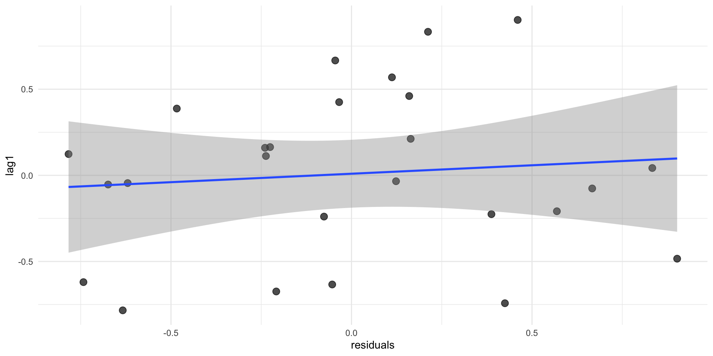Fase de diagnosis
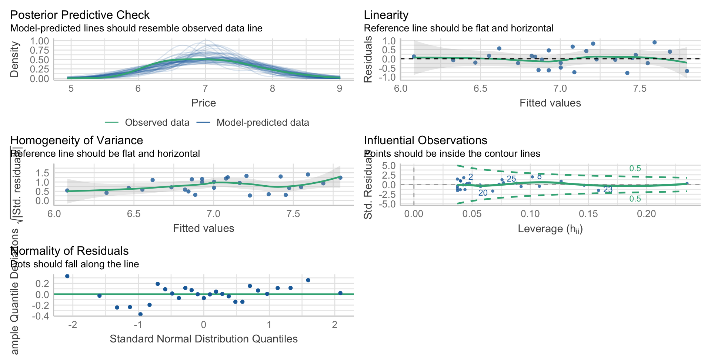En nuestro caso se cumplen todas las hipótesis (algunas más fuertemente que otras).
Repite el proceso con el otro modelo
Fase de diagnosis
Nos faltan dos gráficas por comentar:
Posterior Predictive Checks: simula distintas variables respuesta suponiendo que el modelo fuese cierto (añadiendo ruido aleatorio) y lo compara con la muestra. Si lo observado se distancia mucho de las simulaciones es que el modelo planteado no ajusta bien a la muestra.
Fase de diagnosis
OK: No outliers detected.
- Based on the following method and threshold: cook (0.713).
- For variable: (Whole model)Influential Observations: nos permite identificar observaciones influyentes, marcando aquellas (con su id de fila) que se salgan fuera de la banda definida por la conocida como distancia de Cook denotada como \(D_i\) (realiza, para cada observación, la suma de todos los cambios de la regresión cuando la observación \(i\) es retirada: si hay muchos cambios al cambiar una observación, es que era muy influyente)
Diferencia dos tipos:
- outliers: valor atípico de la respuesta pudiendo perturbar la varianza residual
- high-leverage points: valor atípico en alguna de las predictoras
Fase de inferencia
- Fase de inferencia:
- ¿Qué variabilidad tienen las estimaciones de nuestro parámetros?
- ¿Las predictoras/intercepto tienen un efecto lineal significativo?
- ¿Debemos re-entrenar el modelo sin alguno de ellos?
Una vez verificadas las hipótesis lo que haremos será inferir conclusiones de la población en función de la muestra
Fase de inferencia
Call:
lm(formula = Price ~ AGST, data = datos)
Residuals:
Min 1Q Median 3Q Max
-0.78370 -0.23827 -0.03421 0.29973 0.90198
Coefficients:
Estimate Std. Error t value Pr(>|t|)
(Intercept) -3.5469 2.3641 -1.500 0.146052
AGST 0.6426 0.1434 4.483 0.000143 ***
---
Signif. codes: 0 '***' 0.001 '**' 0.01 '*' 0.05 '.' 0.1 ' ' 1
Residual standard error: 0.4819 on 25 degrees of freedom
Multiple R-squared: 0.4456, Adjusted R-squared: 0.4234
F-statistic: 20.09 on 1 and 25 DF, p-value: 0.0001425Variabilidad de las estimaciones de nuestro parámetros
- \(\widehat{SE} \left( \widehat{\beta}_0 \right)\) igual a 2.3641 por lo que \(\widehat{\beta_0} \sim N(-3.5469, \sigma = 2.3641)\)
- \(\widehat{SE} \left( \widehat{\beta}_1 \right)\) igual a 0.1434 por lo que que \(\widehat{\beta_1} \sim N(0.6426, \sigma = 0.1434)\)
Fase de inferencia
Call:
lm(formula = Price ~ AGST, data = datos)
Residuals:
Min 1Q Median 3Q Max
-0.78370 -0.23827 -0.03421 0.29973 0.90198
Coefficients:
Estimate Std. Error t value Pr(>|t|)
(Intercept) -3.5469 2.3641 -1.500 0.146052
AGST 0.6426 0.1434 4.483 0.000143 ***
---
Signif. codes: 0 '***' 0.001 '**' 0.01 '*' 0.05 '.' 0.1 ' ' 1
Residual standard error: 0.4819 on 25 degrees of freedom
Multiple R-squared: 0.4456, Adjusted R-squared: 0.4234
F-statistic: 20.09 on 1 and 25 DF, p-value: 0.0001425Estadístico del contraste
- \(\frac{\widehat{\beta}_0 - 0}{\widehat{SE} \left( \widehat{\beta}_0 \right)}\) igual a -1.5 (valor que tendrías que buscar en las tablas a mano)
- \(\frac{\widehat{\beta}_1 - 0}{\widehat{SE} \left( \widehat{\beta}_1 \right)}\) igual a 4.483 (valor que tendrías que buscar en las tablas a mano)
Fase de inferencia
Call:
lm(formula = Price ~ AGST, data = datos)
Residuals:
Min 1Q Median 3Q Max
-0.78370 -0.23827 -0.03421 0.29973 0.90198
Coefficients:
Estimate Std. Error t value Pr(>|t|)
(Intercept) -3.5469 2.3641 -1.500 0.146052
AGST 0.6426 0.1434 4.483 0.000143 ***
---
Signif. codes: 0 '***' 0.001 '**' 0.01 '*' 0.05 '.' 0.1 ' ' 1
Residual standard error: 0.4819 on 25 degrees of freedom
Multiple R-squared: 0.4456, Adjusted R-squared: 0.4234
F-statistic: 20.09 on 1 and 25 DF, p-value: 0.0001425- Efecto (lineal): si nos fijamos en la tabla, el p-valor de \(\beta_0\) es 0.146052. Si adoptamos \(\alpha = 0.05\) como suele ser habitual, el contraste \(H_0:~\beta_0 = 0\) vs \(H_1:~\beta_0 \neq 0\) nos dice que no podemos rechazar de forma significativa la hipótesis nula (no sucede con \(\beta_1\), si sucediese no habría modelo)
Fase de inferencia
Call:
lm(formula = Price ~ AGST, data = datos)
Residuals:
Min 1Q Median 3Q Max
-0.78370 -0.23827 -0.03421 0.29973 0.90198
Coefficients:
Estimate Std. Error t value Pr(>|t|)
(Intercept) -3.5469 2.3641 -1.500 0.146052
AGST 0.6426 0.1434 4.483 0.000143 ***
---
Signif. codes: 0 '***' 0.001 '**' 0.01 '*' 0.05 '.' 0.1 ' ' 1
Residual standard error: 0.4819 on 25 degrees of freedom
Multiple R-squared: 0.4456, Adjusted R-squared: 0.4234
F-statistic: 20.09 on 1 and 25 DF, p-value: 0.0001425¿Y si quitamos dicho parámetro?
Re-aprendiendo
Call:
lm(formula = Price ~ -1 + AGST, data = datos)
Residuals:
Min 1Q Median 3Q Max
-0.7324 -0.3756 -0.0092 0.3838 1.0804
Coefficients:
Estimate Std. Error t value Pr(>|t|)
AGST 0.427691 0.005757 74.29 <2e-16 ***
---
Signif. codes: 0 '***' 0.001 '**' 0.01 '*' 0.05 '.' 0.1 ' ' 1
Residual standard error: 0.4933 on 26 degrees of freedom
Multiple R-squared: 0.9953, Adjusted R-squared: 0.9951
F-statistic: 5519 on 1 and 26 DF, p-value: < 2.2e-16La bondad de ajuste ha pasado de \(R^2 = 0.446\) a \(R^2 = 0.9953\) (veremos que no son comparables cuando tiene o no intercepto)
La variabilidad de la estimación \(\widehat{SE} \left( \widehat{\beta}_1 \right)\) ha pasado de 0.143 a 0.005757 –> más precisión
üê£ Caso práctico I: ejercicios hoja a mano
Vamos a hacer en R el ejercicio 5 de los ejercicios de la hoja para hacer mano (reminder: deberías saber hacerlos con boli y papel)
Intenta responder a las preguntas planteadas en el workbook
üê£ Caso práctico II: incumpliendo hip√≥tesis
Vamos a generar distintos ejemplos que incumplen las hipótesis.
Intenta responder a las preguntas planteadas en el workbook
üê£ Caso práctico III: colesterol
Vamos a intentar predecir los niveles de colesterol de 100 pacientes en función de otras variables predictoras
Intenta responder a las preguntas planteadas en el workbook
Clase 11-12: caso práctico
Evaluación
Comparar modelos
Aunque no hemos hablado en profundidad de las métricas de evaluación podemos comparar los modelos con compare_performance() del paquete {performance}
# Comparison of Model Performance Indices
Name | Model | AIC (weights) | AICc (weights) | BIC (weights) | R2 | R2 (adj.) | RMSE | Sigma
------------------------------------------------------------------------------------------------------------------
ajuste_AGST | lm | 41.1 (0.535) | 42.2 (0.469) | 45.0 (0.379) | 0.446 | 0.423 | 0.464 | 0.482
ajuste_AGST_sin_beta0 | lm | 41.4 (0.454) | 41.9 (0.522) | 44.0 (0.614) | 0.995 | 0.995 | 0.484 | 0.493
ajuste_harvest | lm | 49.0 (0.010) | 50.1 (0.009) | 52.9 (0.007) | 0.257 | 0.228 | 0.537 | 0.558Fase de evaluación
- Fase de evaluación:
- ¿Es significativo el modelo? ANOVA: análisis de la varianza
- ¿Qué información de la predictora explica el modelo? Parámetros de bondad de ajuste (\(R^2\) por ejemplo)
- ¿Qué otras métricas o herramientas podemos usar para cuantificar la calidad predictora de nuestro ajuste
Una de las herramientas más útiles para evaluar nuestro modelo es enfrentar los valores ajustados con los valores reales (dado que los conocemos al ser aprendizaje supervisado)
Fase de evaluación
En el gráfica podemos ver como los valores reales vs estimados están muy cercanos a la diagonal: el error cometido es muy pequeño.
Fase de evaluación
¿Cómo cuantificar el acierto del modelo?
Y para saber cómo cuantificar el acierto la primera pregunta que deberíamos hacernos es: ¿cuál es el objetivo de un modelo que pretende predecir una variable continua \(Y\)? ¿Qué nos gustaría que pasase si el modelo fuese perfecto?
Si construimos un modelo predictivo para \(Y\), lo ideal sería que nuestro modelo puede capaz de capturar/explicar toda la variabilidad respecto a la media de Y (por qué sube cuando sube, por qué baja cuando baja, etc). ¿Y qué usamos en estadística para hablar de información?
Fase de evaluación
Vamos a cuantificar la información de \(Y\) (respecto a su media) como su varianza (o suma total de cuadrados \(SST\)), representada como
\[s_{y}^2 := \frac{1}{n} \sum_{i=1}^{n} \left(y_i - \overline{y} \right)^2 = \frac{1}{n} SST\]
¿El objetivo del modelo? Ser capaces de construir una variable predicha \(\widehat{Y}\) que consiga capturar la mayor información de \(Y\) posible. ¿Cómo podríamos cuantificar la información que captura esa predicción \(\widehat{Y}\)?
Fase de evaluación
Vamos a cuantificar la información de \(\widehat{Y}\) de nuevo como su varianza (o suma de cuadrados explicada \(SSE\)), representada como
\[s_{\widehat{y}}^2 := \frac{1}{n} \sum_{i=1}^{n} \left(\widehat{y}_i - \overline{\widehat{y}} \right)^2 = \frac{1}{n} \sum_{i=1}^{n} \left(\widehat{y}_i - \overline{y} \right)^2 = \frac{1}{n} SSE\]
ya que la media de la variable predicha es (reminder: \(\widehat{\beta}_0 = \overline{y}- \widehat{\beta}_1 \overline{x}\))
\[\overline{\widehat{y}} = \frac{1}{n} \sum_{i=1}^{n}\widehat{y}_i = \frac{1}{n} \sum_{i=1}^{n} \left(\widehat{\beta}_0 + \widehat{\beta}_1 x_i \right) = \widehat{\beta}_0+\widehat{\beta}_1 \overline{x} = \overline{y}\]
Fase de evaluación
Información a modelizar: \(s_{y}^2 = \frac{1}{n} SST\)
Información modelizada: \(s_{\widehat{y}}^2 = \frac{1}{n} SSE\)
¿Qué querríamos si nuestro modelo fuese perfecto en términos de acierto? El objetivo ideal es que \(s_{y}^2 = s_{\widehat{y}}^2\) (modelo explica todo lo explicable).
Vamos a construir con ambas cantidades un ratio de información explicada, también conocido como bondad de ajuste o coeficiente de determinación o \(R^2\) (lo que R llama Multiple R-squared)
\[R^2 = \frac{\text{info modelizada}}{\text{info a modelizar}} = \frac{s_{y}^2}{s_{\widehat{y}}^2} = \frac{SSE}{SST} \in [0,1]\]
- Si \(R^2 \to 1\) –> modelo explica casi todo lo explicable
Fase de evaluación
\[R^2 = \frac{\text{info modelizada}}{\text{info a modelizar}} = \frac{s_{y}^2}{s_{\widehat{y}}^2} = \frac{SSE}{SST} \in [0,1]\]
Esta definición de \(R^2\) es general para cualquier modelo de aprendizaje estadístico pero vamos a ver si, en el caso de un modelo de regresión linea, podemos relacionarlo con algo que conozcamos
Vamos a tomar la información que queremos explicar y vamos a realizar una descomposición similar a la que hicimos con el ANOVA one-way (ANOVA cuali vs cuanti)
\[\begin{eqnarray}SST &=& \sum_{i=1}^{n} \left(y_i - \overline{y} \right)^2 = \sum_{i=1}^{n} \left[\left(y_i - \widehat{y}_i \right) + \left( \widehat{y}_i - \overline{y} \right) \right] ^2 \nonumber \\ &=& \sum_{i=1}^{n} \left(y_i - \widehat{y}_i \right)^2 + \sum_{i=1}^{n} \left(\widehat{y}_i - \overline{y}\right)^2 + 2 \sum_{i=1}^{n} \left(y_i - \widehat{y}_i \right)\left(\widehat{y}_i - \overline{y}\right) \end{eqnarray}\]
Fase de evaluación
\[R^2 = \frac{\text{info modelizada}}{\text{info a modelizar}} = \frac{s_{y}^2}{s_{\widehat{y}}^2} = \frac{SSE}{SST} \in [0,1]\]
Así, asumiendo que los errores están incorrelados,
\[\begin{eqnarray}SST &=& \sum_{i=1}^{n} \left(y_i - \widehat{y}_i \right)^2 + \sum_{i=1}^{n} \left(\widehat{y}_i - \overline{y}\right)^2 + 2 \sum_{i=1}^{n} \left(y_i - \widehat{y}_i \right)\left(\widehat{y}_i - \overline{y}\right) \nonumber \\ &=& \sum_{i=1}^{n} \left(y_i - \widehat{y}_i \right)^2 + \sum_{i=1}^{n} \left(\widehat{y}_i - \overline{y}\right)^2 =\sum_{i=1}^{n} \widehat{\varepsilon}_{i}^2 + \sum_{i=1}^{n} \left(\widehat{y}_i - \overline{y}\right)^2 \nonumber \\ &=& SSR + SSE \end{eqnarray}\]
SOLO en el caso lineal tenemos que la información total puede descomponerse entre la explicada más la no explicada
Fase de evaluación
\[R^2 = \frac{\text{info modelizada}}{\text{info a modelizar}} = \frac{s_{\widehat{y}}^2}{s_{y}^2} = \frac{SSE}{SST}, \quad SST = SSE + SSR\]
Reescribiendo por tanto la expresión anterior tenemos que para el caso lineal
\[R^2 = \frac{s_{\widehat{y}}^2}{s_{y}^2} = \frac{SSE}{SST} = \frac{SST - SSR}{SST} = 1 - \frac{SSR}{SST} = 1 - \frac{s_{r}^2}{s_{y}^2}\] ¿De qué depende la info no explicada \(s_{r}^2\)?
\[R^2 = 1 - \frac{SSR}{SST} = 1 - \frac{s_{r}^2}{s_{y}^2} = 1 - \frac{\frac{n-p-1}{n}\widehat{\sigma}_{\varepsilon}^2}{s_{y}^2}\]
Fase de evaluación
\[R^2 = 1 - \frac{SSR}{SST} = 1 - \frac{s_{r}^2}{s_{y}^2} = 1 - \frac{\frac{n-p-1}{n}\widehat{\sigma}_{\varepsilon}^2}{s_{y}^2}\]
¿De qué depende?
- Más predictoras (p) implica que \(R^2\) crece, ¡incluso aunque dichas predictoras no sean significativas ni útiles! (lo arreglaremos usando el \(R^2\) ajustado)
- A igualdad de errores: menos varianza de \(y\), menor \(R^2\)
- Más ruido, menor \(R^2\) (aunque el modelo sea igual de bueno)
- Ignora si el modelo cumple las hipótesis: un modelo con un alto \(R^2\) puede dar predicciones nefastas si las incumple
Resumen R2
\[R^2 = 1 - \frac{SSR}{SST} = 1 - \frac{s_{r}^2}{s_{y}^2} = 1 - \frac{\frac{n-p-1}{n}\widehat{\sigma}_{\varepsilon}^2}{s_{y}^2}\]
- ¿Es útil? Sí, nos puede servir para comparar entre modelos con complejidades similares aplicados a datos similares.
- ¿Nos habla sobre la inferencia del modelo o la verificación de sus hipótesis? No. Siempre asume que se cumplen, ignorando completamente si es cierto o no. No es un contraste.
- ¿Debe ser interpretado con cuidado y no de forma «sagrada»? No. Depende de \(p\) (tengan o no utilidad), de la varianza de \(y\) y del ruido de los datos
Resumen R2
\[R^2 = 1 - \frac{SSR}{SST} = 1 - \frac{s_{r}^2}{s_{y}^2} = 1 - \frac{\frac{n-p-1}{n}\widehat{\sigma}_{\varepsilon}^2}{s_{y}^2}\]
- ¿Representa la proporción de variabilidad de \(y\) (en general)? No. El coeficiente \(R^2\) compara la explicabilidad del modelo respecto a un modelo de referencia (modelo nulo), aquel en el que \(\widehat{y} = \overline{y} = cte\) (de ahí que \(SSE\) - \(y\) vs \(\widehat{y}\) - se divida por \(SST\), donde \(y\) vs \(\overline{y}\)). Ese modelo de referencia es aquel con pendiente nula \(\widehat{\beta}_1 = 0\), por lo que \(\widehat{\beta}_0 = \overline{y} - \widehat{\beta}_1 \overline{x} = \overline{y}\)
Resumen R2
\[R^2 = 1 - \frac{SSR}{SST} = 1 - \frac{s_{r}^2}{s_{y}^2} = 1 - \frac{\frac{n-p-1}{n}\widehat{\sigma}_{\varepsilon}^2}{s_{y}^2}\]
- ¿Sirve la salida de \(R^2\) cuando \(\widehat{\beta}_0 = \beta_0 = 0\)? No. Dado que el modelo nulo respecto al que se compara es aquel que tiene \(\widehat{\beta}_1 = 0\) donde \(\widehat{\beta}_0 = \overline{y}\), el modelo de referencia ahora sería aquel con \(\overline{y} = 0\). Por ello la función
lm()te devuelve en este caso un valor \(R_{0}^2\) definido como
\[R_{0}^2 = 1 - \frac{SSR}{SST_0} = 1 - \frac{\sum_{i=1}^{n} \left(y_i - \widehat{y}_i \right)^2}{\sum_{i=1}^{n} y_{i}^2}\]
Esto hace que dicho valor puede ser muy elevado ya que lo compara respecto a \(\widehat{y} = 0 = cte\) (malo será que no lo mejore). De hecho en este caso \(SST \neq SSR + SSE\) sino que \(SST_0 = SSE_0 + SSR\)
ANOVA
\[R^2 = \frac{\text{info modelizada}}{\text{info a modelizar}} = \frac{s_{\widehat{y}}^2}{s_{y}^2} = \frac{SSE}{SST} = 1 - \frac{SSR}{SST} \]
Al igual que pasaba en el ANOVA cualis vs cuanti, podríamos plantearnos la siguiente pregunta: ¿conocemos la distribución de \(SSE\) y \(SSR\)?
Dado que de nuevo cada uno es una suma de normales al cuadrado (ergo una chi-cuadrado) se puede demostrar como
\[\frac{SSE}{\sigma_{\varepsilon}^2} \sim \chi^2_{p}, \quad \frac{SSR}{\sigma_{\varepsilon}^2} \sim \chi^2_{n-p-1}\]
\[F = \frac{\frac{SSE}{p}}{\frac{SSR}{n-p-1}} \sim F_{p, n-p-1}\]
ANOVA
Df Sum Sq Mean Sq F value Pr(>F)
AGST 1 4.665 4.665 20.09 0.000143 ***
Residuals 25 5.805 0.232
---
Signif. codes: 0 '***' 0.001 '**' 0.01 '*' 0.05 '.' 0.1 ' ' 1| Df (grados) | Sum Sq | Mean Sq | F value | Pr(>F) | |
|---|---|---|---|---|---|
| x1 | p | SSE | \(\frac{SSE}{p}\) | \(F-value = \frac{\frac{SSE}{p}}{\frac{SSR}{n-p-1}}\) | p-valor F test |
| Residuals | n - p - 1 | SSR | \(\widehat{\sigma}_{\varepsilon}^{2} = \frac{SSR}{n-p-1}\) |
El F-value es \(F = \frac{\frac{SSE}{p}}{\frac{SSR}{n-p-1}} \sim F_{p, n-p-1}\) asociado al contraste de sig global
\[H_0:~\beta_1 = \ldots = \beta_p = 0 \quad vs \quad H_1:~\text{existe al menos un} \quad \beta_j \neq 0~(j \geq 1)\]
ANOVA
Df Sum Sq Mean Sq F value Pr(>F)
AGST 1 4.665 4.665 20.09 0.000143 ***
Residuals 25 5.805 0.232
---
Signif. codes: 0 '***' 0.001 '**' 0.01 '*' 0.05 '.' 0.1 ' ' 1\[H_0:~\beta_1 = \ldots = \beta_p = 0 \quad vs \quad H_1:~\text{existe al menos un} \quad \beta_j \neq 0~(j \geq 1)\]
El contraste pretende responder a: ¿existe una dependencia lineal entre \(Y\) y el CONJUNTO de predictoras? (global, no parámetro a parámetro).
Si se rechaza significa que existe al menos un predictor cuyo efecto LINEAL sobre Y es significativo.
Importante: en el caso de la reg. lineal univariante, \(F-value\) y \(p-value\) del ANOVA es equivalente al \(t-value\) y \(p-value\) del contraste de significación para \(\beta_1\) (ya que…no hay más).
üê£ Caso práctico I: simulaci√≥n
Intenta responder a las preguntas planteadas en el workbook
üê£ Caso práctico II: vuelta a iris y colesterol
pendiente
Clase 13: reg. multivariante
Introducción a la regresión multivariante. Formulación del modelo y estimación
Regresión multivariante
De aquí en adelante llamaremos modelo multivariante a todo modelo en el que \(p>1\) (es decir, tenemos más de una variable predictora).
\[Y = f\left(X_1, \ldots, X_p \right) + \varepsilon, \quad E \left[Y | \boldsymbol{X} = x \right] =f\left(X_1, \ldots, X_p \right)\] tal que \(E \left[ \varepsilon | \left( X_1 = x_1, \ldots, X_p = x_p \right) \right] = 0\).
En el caso del modelo lineal multivariante se traducirá por tanto en
\[E \left[Y | \boldsymbol{X} = x \right] = \beta_0 + \beta_1 X_1 + \ldots + \beta_p X_p, \quad \widehat{Y} = \widehat{\beta_0} + \displaystyle \sum_{j=1}^{p} \widehat{\beta_j} X_j\]
El objetivo seguirá siendo obtener la estimación de los \(\widehat{\beta}\) tal que minimicemos el error (la suma de errores al cuadrado).
Formulación matricial
Si tenemos \(n\) observaciones y \(p\) predictoras, su formulación matricial teórica la podemos expresar mediante la matriz de diseño
\[\mathbf{X} =\begin{pmatrix} 1 & X_{11} & \ldots & X_{1p} \\ 1 & X_{21} & \ldots & X_{2p} \\ \vdots & \vdots & \ddots & \vdots\\ 1 & X_{n1} & \ldots & X_{np} \end{pmatrix}_{n\times(p+1)}, \quad Y_i = \beta_0 + \displaystyle \sum_{j=1}^{p} \beta_j X_{ij} + \varepsilon_i\]
tal que
\[\mathbf{Y} = \mathbf{X} \boldsymbol{\beta} + \boldsymbol{\varepsilon} = \begin{pmatrix} 1 & X_{11} & \ldots & X_{1p} \\ \vdots & \vdots & \ddots & \vdots\\ 1 & X_{n1} & \ldots & X_{np} \end{pmatrix}_{n\times(p+1)}\begin{pmatrix} \beta_0 \\ \vdots \\ \beta_p \end{pmatrix}_{(p+1)\times1} + \begin{pmatrix} \varepsilon_1 \\ \vdots \\ \varepsilon_n \end{pmatrix}_{n\times1}\]
Formulación matricial
Dicho modelo teórico será estimado tal que
\[\widehat{\mathbf{Y}} = \begin{pmatrix} \widehat{Y}_1 \\ \widehat{Y}_2 \\ \vdots \\ \widehat{Y}_n \end{pmatrix}_{n\times1} = \mathbf{X} \widehat{\boldsymbol{\beta}} = \begin{pmatrix} 1 & X_{11} & \ldots & X_{1p} \\ 1 & X_{21} & \ldots & X_{2p} \\ \vdots & \vdots & \ddots & \vdots\\ 1 & X_{n1} & \ldots & X_{np} \end{pmatrix}_{n\times(p+1)}\begin{pmatrix} \widehat{\beta}_1 \\ \widehat{\beta}_2 \\ \vdots \\ \widehat{\beta}_p \end{pmatrix}_{(p+1)\times1}\]
Mínimos cuadrados
Como pasaba en el modelo univariante, nuestro objetivo será encontrar que vector de parámetros minimiza la suma de errores al cuadrado
\[SSE \left(\boldsymbol{\beta} \right) = \displaystyle \sum_{i=1}^{n} \widehat{\varepsilon}_{i}^{2} = \displaystyle \sum_{i=1}^{n} \left[Y_i - \left(\beta_0 - \beta_1 X_{i1} - \ldots - \beta_p X_{ip} \right)\right]^2\]
¿Cómo quedaría matricialmente?
\[SSE \left(\boldsymbol{\beta} \right) = \displaystyle \sum_{i=1}^{n} \widehat{\varepsilon}_{i}^{2} = \left( \mathbf{Y} - \mathbf{X} \boldsymbol{\beta} \right)^{T}\left( \mathbf{Y} - \mathbf{X} \boldsymbol{\beta} \right) = \varepsilon^{T} \varepsilon\]
por lo que, de todos los \(\boldsymbol{\beta}\) posibles, el vector óptimo de parámetros \(\widehat{\boldsymbol{\beta}} = \left(\widehat{\beta}_0, \widehat{\beta}_1, \ldots, \widehat{\beta}_p\right)\) será aquel que minimice \(SSE \left(\boldsymbol{\beta} \right) = \displaystyle \sum_{i=1}^{n} \widehat{\varepsilon}_{i}^{2}= \varepsilon^{T} \varepsilon\)
Mínimos cuadrados
Para hallar el mínimo de la función \(SSE \left(\boldsymbol{\beta} \right)\) (donde \(\boldsymbol{\beta}\) es el argumento) calcularemos la derivada respecto a \(\boldsymbol{\beta}\) e igualaremos a 0
Teniendo en cuenta que \(\left(A B \right)^T = B^T A^T\)
\[\begin{eqnarray}\frac{\partial SSE \left( \boldsymbol{\beta} \right)}{\partial \boldsymbol{\beta}} &=& \frac{\partial \left( \mathbf{Y} - \mathbf{X} \boldsymbol{\beta} \right)^{T}\left( \mathbf{Y} - \mathbf{X} \boldsymbol{\beta} \right)}{\partial \boldsymbol{\beta}} \nonumber \\ &=& \left(\left( \mathbf{Y} - \mathbf{X} \boldsymbol{\beta} \right) \frac{\partial \left( \mathbf{Y} - \mathbf{X} \boldsymbol{\beta} \right)^{T}}{\partial \boldsymbol{\beta}}\right)^{T} + \left( \mathbf{Y} - \mathbf{X} \boldsymbol{\beta} \right)^{T} \frac{\partial \left( \mathbf{Y} - \mathbf{X} \boldsymbol{\beta} \right)}{\partial \boldsymbol{\beta}} \nonumber \\ &=& \left(\left( \mathbf{Y} - \mathbf{X} \boldsymbol{\beta} \right) \frac{\partial \left( - \mathbf{X} \boldsymbol{\beta} \right)^{T}}{\partial \boldsymbol{\beta}}\right)^{T} -\left( \mathbf{Y} - \mathbf{X} \boldsymbol{\beta} \right)^{T} \mathbf{X} \nonumber \\ &=& \left( \left(\mathbf{Y} - \mathbf{X} \boldsymbol{\beta} \right) \frac{\partial \left( - \boldsymbol{\beta}^{T} \mathbf{X}^{T} \right)}{\partial \boldsymbol{\beta}}\right)^{T} - \left( \mathbf{Y} - \mathbf{X} \boldsymbol{\beta} \right)^{T} \mathbf{X}\end{eqnarray}\]
Mínimos cuadrados
\[\begin{eqnarray}\frac{\partial SSE \left( \boldsymbol{\beta} \right)}{\partial \boldsymbol{\beta}} &=& \left(\left( \mathbf{Y} - \mathbf{X} \boldsymbol{\beta} \right) \frac{\partial \left( - \boldsymbol{\beta}^{T} \mathbf{X}^{T} \right)}{\partial \boldsymbol{\beta}} \right)^T -\left( \mathbf{Y} - \mathbf{X} \boldsymbol{\beta} \right)^{T} \mathbf{X}\end{eqnarray}\] ¿Cuánto vale \(\frac{\partial \left( - \boldsymbol{\beta}^{T} A \right)}{\partial \boldsymbol{\beta}}\) para una matriz \(A\) de constantes cualesquiera?
\[\begin{eqnarray}\frac{\partial \left( - \boldsymbol{\beta}^{T} A \right)}{\partial \boldsymbol{\beta}} &=& \frac{\partial}{\partial \boldsymbol{\beta}}\left(-\beta_0, \ldots, -\beta_p\right)\begin{pmatrix} a_{11} & \ldots & a_{1q} \\ \vdots & \ddots & \vdots \\ a_{p1} & \ldots & a_{pq} \end{pmatrix} = - \frac{\partial}{\partial \boldsymbol{\beta}} \left(\sum_{i=1}^{p} \beta_i a_{i1}, \ldots, \sum_{i=1}^{p} \beta_i a_{iq}\right) \nonumber \\ &=& - \begin{pmatrix} \frac{\partial}{\partial \beta_1} \sum_{i=1}^{p} \beta_i a_{i1} & \ldots & \frac{\partial}{\partial \beta_p} \sum_{i=1}^{p} \beta_i a_{i1} \\ \vdots & \ddots & \vdots \\ \frac{\partial}{\partial \beta_1} \sum_{i=1}^{p} \beta_i a_{iq} & \ldots & \frac{\partial}{\partial \beta_p} \sum_{i=1}^{p} \beta_i a_{iq} \end{pmatrix} \nonumber \\ &=& - \begin{pmatrix} a_{11} & \ldots & a_{p1} \\ \vdots & \ddots & \vdots \\ a_{1q} & \ldots & a_{pq} \end{pmatrix} = -A^{T}\end{eqnarray}\]
Mínimos cuadrados
\[\begin{eqnarray}\frac{\partial SSE \left( \boldsymbol{\beta} \right)}{\partial \boldsymbol{\beta}} &=& \left(\left( \mathbf{Y} - \mathbf{X} \boldsymbol{\beta} \right) \frac{\partial \left( - \boldsymbol{\beta}^{T} \mathbf{X}^{T} \right)}{\partial \boldsymbol{\beta}} \right)^T -\left( \mathbf{Y} - \mathbf{X} \boldsymbol{\beta} \right)^{T} \mathbf{X}\end{eqnarray}\]
Usando dicho resultado tenemos por tanto que
\[\begin{eqnarray}\frac{\partial SSE \left( \boldsymbol{\beta} \right)}{\partial \boldsymbol{\beta}} &=& \left(\left( \mathbf{Y} - \mathbf{X} \boldsymbol{\beta} \right) \frac{\partial \left( - \boldsymbol{\beta}^{T} \mathbf{X}^{T} \right)}{\partial \boldsymbol{\beta}} \right)^T -\left( \mathbf{Y} - \mathbf{X} \boldsymbol{\beta} \right)^{T} \mathbf{X} \nonumber \\ &=& - \left(\mathbf{X}^{T}\left( \mathbf{Y} - \mathbf{X} \boldsymbol{\beta} \right)\right)^T -\left( \mathbf{Y} - \mathbf{X} \boldsymbol{\beta} \right)^{T} \mathbf{X} \nonumber \\ &=& -2\left(\mathbf{X}^{T}\left( \mathbf{Y} - \mathbf{X} \boldsymbol{\beta} \right)\right)^T = 0 \end{eqnarray}\]
Eso es equivalente a decir que \(\widehat{\boldsymbol{\beta}}\) será aquel vector que
\[\mathbf{X}^{T}\left( \mathbf{Y} - \mathbf{X} \widehat{\boldsymbol{\beta}} \right) = 0\]
Mínimos cuadrados
\[\mathbf{X}^{T}\left( \mathbf{Y} - \mathbf{X} \widehat{\boldsymbol{\beta}} \right) = 0\]
Despejando tenemos que
\[\mathbf{X}^{T} \mathbf{Y} - \mathbf{X}^{T}\mathbf{X} \widehat{\boldsymbol{\beta}} = 0 \Rightarrow \widehat{\boldsymbol{\beta}} = \left(\mathbf{X}^{T}\mathbf{X} \right)^{-1}\mathbf{X}^{T} \mathbf{Y} \]
IMPORTANTE: para que exista solución (única) necesitamos que \(\mathbf{X}^{T}\mathbf{X}\) sea invertible, es decir, que \(\left| \mathbf{X}^{T}\mathbf{X} \right| \neq 0\).
Estimación multivariante
\[\widehat{\mathbf{Y}} = \begin{pmatrix} \widehat{Y}_1 \\ \widehat{Y}_2 \\ \vdots \\ \widehat{Y}_n \end{pmatrix}_{n\times1} = \mathbf{X} \widehat{\boldsymbol{\beta}} = \begin{pmatrix} 1 & X_{11} & \ldots & X_{1p} \\ 1 & X_{21} & \ldots & X_{2p} \\ \vdots & \vdots & \ddots & \vdots\\ 1 & X_{n1} & \ldots & X_{np} \end{pmatrix}_{n\times(p+1)}\begin{pmatrix} \widehat{\beta}_1 \\ \widehat{\beta}_2 \\ \vdots \\ \widehat{\beta}_p \end{pmatrix}_{(p+1)\times1}\]
Así la estimación muestral será \(\widehat{\mathbf{Y}} = X \widehat{\boldsymbol{\beta}} = X\left(\mathbf{X}^{T}\mathbf{X} \right)^{-1}\mathbf{X}^{T} \mathbf{Y}\) tal que \(H:=X\left(\mathbf{X}^{T}\mathbf{X} \right)^{-1}\mathbf{X}^{T}\) se conoce como hat matrix o matriz de proyección (ya que hace que las estimaciones \(\widehat{y}\) sean en realidad los valores y proyectados verticalmente sobre el plano de regresión ajustado).
Deberes
Demuestra que \(\widehat{\boldsymbol{\beta}} = \left(\mathbf{X}^{T}\mathbf{X} \right)^{-1}\mathbf{X}^{T} \mathbf{Y}\), cuando \(p = 1\), coincide con las expresiones ya conocidas
\[\widehat{\beta}_1 = \frac{s_{xy}}{s_{x}^2}\] \[\widehat{\beta}_0 = \overline{y} - \widehat{\beta}_1 \overline{x}\]
Clase 14: reg. multivariante
Etapas: ¿cómo se adaptan?
Caso práctico: wine.csv
Vamos a volver a usar nuestros datos wine.csv
# A tibble: 27 × 7
Year Price WinterRain AGST HarvestRain Age FrancePop
<dbl> <dbl> <dbl> <dbl> <dbl> <dbl> <dbl>
1 1952 7.50 600 17.1 160 31 43184.
2 1953 8.04 690 16.7 80 30 43495.
3 1955 7.69 502 17.2 130 28 44218.
4 1957 6.98 420 16.1 110 26 45152.
5 1958 6.78 582 16.4 187 25 45654.
6 1959 8.08 485 17.5 187 24 46129.
7 1960 6.52 763 16.4 290 23 46584.
8 1961 8.49 830 17.3 38 22 47128.
9 1962 7.39 697 16.3 52 21 48089.
10 1963 6.71 608 15.7 155 20 48799.
# ℹ 17 more rowsPero esta vez no vamos a seleccionar previamente. Para ajustar un modelo multivariante basta con añadir variables +, para usar todas las variables ~ .
Fase 1
- Análisis exploratorio:
- ¿Tenemos variables mal codificadas? (por ejemplo, estatura negativa)
- ¿Tenemos ausentes?
- ¿Tenemos outliers?
Para la codificación podemos usar alguna función que nos extraiga un resumen general de las variables, por ejemplo
| Name | datos |
| Number of rows | 27 |
| Number of columns | 7 |
| _______________________ | |
| Column type frequency: | |
| numeric | 7 |
| ________________________ | |
| Group variables | None |
Variable type: numeric
| skim_variable | n_missing | complete_rate | mean | sd | p0 | p25 | p50 | p75 | p100 | hist |
|---|---|---|---|---|---|---|---|---|---|---|
| Year | 0 | 1 | 1966.81 | 8.25 | 1952.00 | 1960.50 | 1967.00 | 1973.50 | 1980.00 | ▅▇▇▇▇ |
| Price | 0 | 1 | 7.04 | 0.63 | 6.20 | 6.51 | 6.98 | 7.44 | 8.49 | ▇▅▆▂▂ |
| WinterRain | 0 | 1 | 608.41 | 129.03 | 376.00 | 543.50 | 600.00 | 705.50 | 830.00 | ▃▃▇▃▃ |
| AGST | 0 | 1 | 16.48 | 0.66 | 14.98 | 16.15 | 16.42 | 17.01 | 17.65 | ▂▃▇▃▅ |
| HarvestRain | 0 | 1 | 144.81 | 73.07 | 38.00 | 88.00 | 123.00 | 185.50 | 292.00 | ▇▇▇▁▅ |
| Age | 0 | 1 | 16.19 | 8.25 | 3.00 | 9.50 | 16.00 | 22.50 | 31.00 | ▇▇▇▇▅ |
| FrancePop | 0 | 1 | 50085.44 | 3793.00 | 43183.57 | 46856.00 | 50650.41 | 53511.21 | 55110.24 | ▃▃▅▅▇ |
Fase 1
En este caso
- No tenemos variables mal codificadas
- No tenemos ausentes
Para esto último también podemos usar gg_miss_var() del paquete {naniar}
Atípicos/ausentes
En general, respecto a los outliers y ausentes hay dos estrategias
- Eliminarlos: se pasan todos los outliers a
NAy se procede a eliminarlos. Es una opción mucho más sencilla PERO ES MUY PELIGROSA: en muchos casos no tendrás suficiente muestra para permitirte eliminar tantas observaciones (además de que puedes estar descartando información relevante).
- Imputarlos: se pasan los outliers a
NAy se les asigna (imputa) otro valor que no modifique sustancialmente la distribución de la variables. Será la opcióin que haremos una vez que los hayamos detectado (y hayamos visto como imputar en depuración)
Atípicos/ausentes
La detección de atípicos parámetrica se basa en 3 ideas:
Un centro: una medida que represente la centralidad de los datos. Por ejemplo, la media o la mediana.
Una distancia: ¿cómo medir lo alejado o cerca que está cada punto de ese centro? Por ejemplo, en el caso de la media, es habitual medir las desviaciones típicas que se aleja cada dato
Un umbral: ¿a partir de qué distancia se considera que el dato es atípico?
Atípicos/ausentes
- Atípico respecto a media: una definición habitual es definir un dato atípico como aquel que se aleja de la media \(k\) veces la desviación típica (un valor habitual es \(k = 2.5\))
\[\left| x_i - \overline{x} \right| > k*s_{x}\]
Dicha definición de atípico solo tendrá sentido cuando la media sea representativa de tu distribución, es decir, siempre y cuando tengamos cierta simetría
Atípicos/ausentes
- Atípico respecto a mediana: una definición habitual (conocido como filtro de Hampel) es definir un dato atípico como aquel que se aleja de la mediana \(k\) veces la mediana de las desviaciones absolutas (un valor habitual es \(k=3\)), conocida como \(MAD = Me \left(|x_i - Me_x| \right)\)
\[\left| x_i - Me_x \right| > k*MAD\]
Atípicos/ausentes
- Atípico respecto a percentiles: una definición habitual es definir un dato atípico como aquel que se aleja de cuartiles 1 y 3 (percentiles 25 y 75) \(k\) veces el rango intercuartílico (\(IQR = Q_3 - Q_1\)). Un valor habitual es \(k=1.5\)
\[x_i > Q_3 + k*IQR \quad \text{ o bien } \quad x_i < Q_1 - k*IQR\]
Atípicos/ausentes
Estos tres métodos pueden ser implementados usando el paquete {outliers} haciendo uso de la función scores() que nos dará en cada caso una “puntuación” de cada observación (lo que se aleja).
En caso de que queramos detectarlos respecto a la media, le indicaremos que type = "z" y nos devolverá el número \(k\) de desviaciones típicas que se aleja cada dato de la media
[1] 0.05794825 1.19759725 0.56982450 2.56903925 0.68572100 0.37183463
[7] 0.25593812 0.75815632 0.56982450 0.68572100 0.49738918 0.44426995
[13] 1.07204270De esta forma podemos detectar muy fácil los outliers en función de los estrictos que queramos ser con ese \(k\) (si supera un umbral -> outlier).
Atípicos/ausentes
En caso de que queramos detectarlos respecto a la media, le indicaremos que type = "mad" y nos devolverá de nuevo esa distancia \(k\) (ahora respecto a las desviación absoluta respecto a la mediana)
Atípicos/ausentes
En caso de que queramos detectarlos respecto a los percentiles, le indicaremos que type = "iqr" y nos devolverá de nuevo esa distancia \(k\) (ahora respecto a cuántos IQR se aleja del Q3 o del Q1)
Atípicos/ausentes
Con if_any() dentro del filter() podemos mostrar todo los registros detectados como outlier en alguna variable. Por ejemplo, voy a aplicar a todas el método IQR
datos |>
mutate(across(everything(),
function(x) {
if_else(outliers::scores(x, type = "iqr") > 1.5, NA, x) })) |>
filter(if_any(everything(), is.na))# A tibble: 0 × 7
# ℹ 7 variables: Year <dbl>, Price <dbl>, WinterRain <dbl>, AGST <dbl>,
# HarvestRain <dbl>, Age <dbl>, FrancePop <dbl>En este caso no tenemos.
Atípicos/ausentes
Existen otros procedimientos basados en inferencia estadística (muchos de ellos en el paquete {outliers})
- Tests de Grubbs y Dixon: ambos test nos permiten detectar si el valor más alto (o bajo) de una variable es un outlier, pudiendo detectar un solo outlier en cada iteración (en caso de detectarlo, deberíamos tratarlo y volver a ejecutar el test)
\(H_0\): valor más alto/bajo no es outlier
\(H_1\): valor más alto/bajo sí es outlier
El test de Dixon (basado en una ordenación) suele funcionar mejor cuando tenemos poca muestra que el test de Grubbs (basado en la media).
Ver más documentación de su funcionamiento en https://www.itl.nist.gov/div898/handbook/eda/section3/eda35h1.htm y https://www.statisticshowto.com/dixons-q-test/
Atípicos/ausentes
x <- c(1, -1, 0, 5, 2, 1.5, 0.5, -0.3, 0, 2, 1.7, 0.2, -0.8)
dixon.test(x, opposite = TRUE) # ¿es valor más bajo outlier?
Dixon test for outliers
data: x
Q = 0.23333, p-value = 0.8072
alternative hypothesis: lowest value -1 is an outlierx <- c(1, -1, 0, 5, 2, 1.5, 0.5, -0.3, 0, 2, 1.7, 0.2, -0.8)
dixon.test(x, opposite = FALSE) # ¿es valor más alto outlier?
Dixon test for outliers
data: x
Q = 0.51724, p-value = 0.1055
alternative hypothesis: highest value 5 is an outlier- Test de Rosner: al contrario que los anteriores, nos permite detectar varios outliers a la vez, especialmente diseñado para evitar que un valor atípico nos perturbe tanto que nos enmascare otro (basado en la media). Podemos ejecutarlo con la función
rosnerTest()del paquete{EnvStats}.
Atípicos/ausentes
También existen técnicas de Machine Learning para la identificación de outliers, como los conocidos como Isolation Forest.
La idea es un poco similar a la de un Random Forest, mediante la combinación de muchos árboles de clasificación/regresión conocidos como isolation trees, aunque en este caso los puntos de corte se hace de manera totalmente aleatoria.
De esta manera, aquellos individuos con características diferentes al resto quedarán aislados rápidamente, de manera que los outliers serán aquellos aislados a los que se llega más rápido que al resto
Atípicos/ausentes
Es un algoritmo no supervisado, lo que significa que no hay un criterio óptimo objetivo para decidir que a partir de dicho valor una observación es un outlier (idea: usar percentiles de dicha distancia, por ejemplo el 5-10% con menor distancia)
En casos donde el tamaño muestral sea elevado, aislar cada observación puede ser costoso computacionalmente por lo que a veces se asume una profundidad máxima hasta donde puede crecer
Atípicos/ausentes
Para implementarlo podemos usar el paquete {solitude}. Es importante que el dataset haya sido ya tratado por ausentes.
library(solitude)
# Modelo isolation forest
isoforest <-
isolationForest$new(sample_size = round((datos |> nrow())/2),
num_trees = 500,
replace = TRUE, seed = 1234567,
max_depth = 7)
isoforest$fit(dataset = datos)INFO [11:23:48.664] Building Isolation Forest ...
INFO [11:23:48.740] done
INFO [11:23:48.745] Computing depth of terminal nodes ...
INFO [11:23:49.495] done
INFO [11:23:49.502] Completed growing isolation forestAtípicos/ausentes
Con el modelo entrenado, se predicen las distancias de aislamiento promedio de cada observación. Los resultados que calcula isoforest$predict() son la distancia promedio average_depth y una métrica que mide el grado de anomalía anomaly_score (valores próximos a 1 para outliers)
id average_depth anomaly_score
<int> <num> <num>
1: 8 3.298 0.5966917
2: 6 3.340 0.5927809
3: 23 3.492 0.5788404
4: 24 3.492 0.5788404
5: 7 3.558 0.5728898
6: 3 3.588 0.5702053
7: 12 3.608 0.5684226
8: 4 3.612 0.5680667
9: 2 3.656 0.5641668
10: 27 3.694 0.5608202
11: 25 3.716 0.5588918
12: 1 3.804 0.5512443
13: 26 3.878 0.5448945
14: 15 3.954 0.5384492
15: 19 3.954 0.5384492
16: 11 3.960 0.5379437
17: 20 4.022 0.5327471
18: 13 4.064 0.5292553
19: 5 4.140 0.5229950
20: 16 4.154 0.5218499
21: 22 4.312 0.5090991
22: 21 4.314 0.5089397
23: 9 4.330 0.5076663
24: 10 4.342 0.5067134
25: 14 4.548 0.4906313
26: 17 4.778 0.4732779
27: 18 4.814 0.4706179
id average_depth anomaly_scoreAtípicos/ausentes
Código
ggplot(data = predicciones, aes(x = average_depth)) +
geom_density(fill = "#6D98ED", alpha = 0.5) +
geom_vline(xintercept =
quantile(predicciones$average_depth,
seq(0, 1, 0.1)),
color = "#DC5B49", linetype = "dashed") +
labs(title = "Distribución de distancias medias del Isolation Forest",
subtitle = "Deciles marcados en rojo") +
theme_minimal()Fase 2: selección de variables
En el ajuste univariante nos interesaba buscar la variable más correlada pero ahora, en esta primer cribado, dado que queremos un ajuste multivariante, el objetivo será DESCARTAR variables que no estén correladas linealmente con la variable objetivo
# Fíjate que hasta que compruebe que si son o normales uso el método de spearman
datos |> corrr::correlate(method = "spearman")# A tibble: 7 × 8
term Year Price WinterRain AGST HarvestRain Age FrancePop
<chr> <dbl> <dbl> <dbl> <dbl> <dbl> <dbl> <dbl>
1 Year NA -0.448 0.0299 -0.319 -0.0956 -1 1
2 Price -0.448 NA 0.0678 0.689 -0.466 0.448 -0.448
3 WinterRain 0.0299 0.0678 NA -0.358 -0.364 -0.0299 0.0299
4 AGST -0.319 0.689 -0.358 NA 0.0566 0.319 -0.319
5 HarvestRain -0.0956 -0.466 -0.364 0.0566 NA 0.0956 -0.0956
6 Age -1 0.448 -0.0299 0.319 0.0956 NA -1
7 FrancePop 1 -0.448 0.0299 -0.319 -0.0956 -1 NA Análisis de correlaciones
# Fíjate que hasta que compruebe que si son o normales uso el método de spearman
datos |> corrr::correlate(method = "spearman")# A tibble: 7 × 8
term Year Price WinterRain AGST HarvestRain Age FrancePop
<chr> <dbl> <dbl> <dbl> <dbl> <dbl> <dbl> <dbl>
1 Year NA -0.448 0.0299 -0.319 -0.0956 -1 1
2 Price -0.448 NA 0.0678 0.689 -0.466 0.448 -0.448
3 WinterRain 0.0299 0.0678 NA -0.358 -0.364 -0.0299 0.0299
4 AGST -0.319 0.689 -0.358 NA 0.0566 0.319 -0.319
5 HarvestRain -0.0956 -0.466 -0.364 0.0566 NA 0.0956 -0.0956
6 Age -1 0.448 -0.0299 0.319 0.0956 NA -1
7 FrancePop 1 -0.448 0.0299 -0.319 -0.0956 -1 NA En este caso la variable más probable a estar incorrelada es WinterRain ya que es la que tiene menor correlación en valor absoluto con la objetivo.
Para cuantificarlo vamos a realizar un test de correlaciones
Spearman's rank correlation rho
data: datos$Price and datos$WinterRain
S = 3054, p-value = 0.7369
alternative hypothesis: true rho is not equal to 0
sample estimates:
rho
0.06777591 Efectivamente debemos descartar WinterRain ya que no presenta correlación con y
Análisis de correlaciones
La siguiente es Year o Age o FrancePop, pruebo con cualquiera de ellas
Spearman's rank correlation rho
data: datos$Price and datos$Year
S = 4744, p-value = 0.02001
alternative hypothesis: true rho is not equal to 0
sample estimates:
rho
-0.4481074 Ya obtenemos un contraste significativo: el resto de variables no se eliminan de momento
Análisis de colinealidad
Y decimos “de momento” porque en el ajuste multivariante no solo vamos a necesitar un análisis de correlaciones (Y vs x dos a dos) sino que será crucial un análisis de colinealidad
La pregunta a responder es: ¿existen predictoras con información repetida? Buscamos
predictoras con la mayor correlación con y
pero predictoras con la menor correlación entre ellas
Para responder a esa pregunta no nos limitaremos solo a mirar correlaciones dos a dos sino que para cada predictora \(X_j\) plantearemos el siguiente modelo
\[reg_{X_{j}}:~X_j \quad vs \quad \left(X_1, \ldots, X_{j-1}, X_{j+1}, \ldots, X_p \right)\]
Análisis de colinealidad
\[reg_{X_{j}}:~X_j \quad vs \quad \left(X_1, \ldots, X_{j-1}, X_{j+1}, \ldots, X_p \right)\]
Para cada predictora \(X_j\) calcularemos del ajuste superior su \(R^2\) tal que cuantificaremos dicha multicolinealidad con el conocido como factor de inflación de la varianza (VIF)
\[VIF\left(\widehat {\beta_j} \right) = \frac{1}{1 - R^2_{X_{j}}}\]
donde \(R_{j}^2\) representa la bondad de ajuste cuando predecimos con una regresión lineal multivariante la predictora \(X_j\) en función del resto de predictoras (sin la variable objetivo). Si \(VIF > 10\) (\(R^2 > 0.9\)), diremos que hay predictoras altamente correlacionadas; si \(VIF > 5\) (\(R^2 > 0.8\)), diremos que hay predictoras moderadamente correlacionadas.
Análisis de colinealidad
Para calcularlo tenemos check_collinearity() del paquete {performance} (sin la variable que ya hemos descartado en el paso anterior)
ajuste_saturado <- lm(data = datos, formula = Price ~ . - WinterRain)
performance::check_collinearity(ajuste_saturado)# Check for Multicollinearity
Low Correlation
Term VIF VIF 95% CI Increased SE Tolerance Tolerance 95% CI
AGST 1.10 [ 1.00, 3.33] 1.05 0.91 [0.30, 1.00]
HarvestRain 1.05 [ 1.00, 15.21] 1.03 0.95 [0.07, 1.00]
High Correlation
Term VIF VIF 95% CI Increased SE Tolerance Tolerance 95% CI
Year 68.32 [40.45, 115.87] 8.27 0.01 [0.01, 0.02]
FrancePop 68.39 [40.49, 116.00] 8.27 0.01 [0.01, 0.02]Antes de analizar nada fíjate en la primera línea de la salida:
Model matrix is rank deficient. VIFs may not be sensible.
Análisis de colinealidad
Antes de analizar nada fíjate en la primera línea de la salida:
Model matrix is rank deficient. VIFs may not be sensible.
Esto significa que hay una variable que no es que esté relacionada con otras sino que es directamente igual a una combinación lineal exacta de las demás. En este caso age es literal hoy - year
Ajuste de colinealidad
También podemos detectarlo si observamos el ajuste: hay una fila de coeficientes con NA ya que al no tener una matriz de covarianzas de rango completo debe eliminar una para obtener una (única) solución.
ajuste_saturado <-
lm(data = datos |> select(-WinterRain), formula = Price ~ .)
ajuste_saturado |> summary()
Call:
lm(formula = Price ~ ., data = select(datos, -WinterRain))
Residuals:
Min 1Q Median 3Q Max
-0.6303 -0.2511 -0.0108 0.2693 0.4581
Coefficients: (1 not defined because of singularities)
Estimate Std. Error t value Pr(>|t|)
(Intercept) -8.974e+00 1.172e+02 -0.077 0.940
Year 5.714e-03 6.303e-02 0.091 0.929
AGST 5.335e-01 1.001e-01 5.327 2.39e-05 ***
HarvestRain -4.349e-03 8.828e-04 -4.926 6.30e-05 ***
Age NA NA NA NA
FrancePop -6.756e-05 1.371e-04 -0.493 0.627
---
Signif. codes: 0 '***' 0.001 '**' 0.01 '*' 0.05 '.' 0.1 ' ' 1
Residual standard error: 0.3206 on 22 degrees of freedom
Multiple R-squared: 0.784, Adjusted R-squared: 0.7447
F-statistic: 19.96 on 4 and 22 DF, p-value: 4.598e-07Análisis de colinealidad
Eliminamos la variable que no aparece y volvemos a analizarlo
ajuste_saturado <-
lm(data = datos |> select(-WinterRain, -Age), formula = Price ~ .)
performance::check_collinearity(ajuste_saturado)# Check for Multicollinearity
Low Correlation
Term VIF VIF 95% CI Increased SE Tolerance Tolerance 95% CI
AGST 1.10 [ 1.00, 3.72] 1.05 0.91 [0.27, 1.00]
HarvestRain 1.05 [ 1.00, 19.81] 1.03 0.95 [0.05, 1.00]
High Correlation
Term VIF VIF 95% CI Increased SE Tolerance Tolerance 95% CI
Year 68.32 [39.41, 118.99] 8.27 0.01 [0.01, 0.03]
FrancePop 68.39 [39.45, 119.11] 8.27 0.01 [0.01, 0.03]Observamos dos variables Year y FrancePop que comparten muchísima información con una combinación de las demás ya que cuando intentamos predecir Year o FrancePop en función de las demás obtenemos \(VIF \simeq 68\), es decir, \(R^2 \simeq = 0.98\)
Análisis de colinealidad
Eliminamos la variable con mayor VIF y volvemos a repetirlo: NO podemos eliminar varias a la vez ya que eliminar una cambiará todo, debemos hacerlo de forma secuencial.
ajuste_saturado <- lm(data = datos |> select(-WinterRain, -Age, -FrancePop),
formula = Price ~ .)
performance::check_collinearity(ajuste_saturado)# Check for Multicollinearity
Low Correlation
Term VIF VIF 95% CI Increased SE Tolerance Tolerance 95% CI
Year 1.10 [1.00, 4.28] 1.05 0.91 [0.23, 1.00]
AGST 1.10 [1.00, 4.48] 1.05 0.91 [0.22, 1.00]
HarvestRain 1.01 [1.00, Inf] 1.00 0.99 [0.00, 1.00]Todo perfecto, ya podemos plantear nuestro modelo saturado :)
Fase 3: planteamiento del modelo
Nuestro modelo teórico que asumimos como cierto es el siguiente
\[Price = \beta_0 + \beta_1 * Year + \beta_2 * AGST + \beta_3 * HarvestRain + \varepsilon\] tal que
\[E \left[Price | X \right] = \beta_0 + \beta_1 * Year + \beta_2 * AGST + \beta_3 * HarvestRain \]
por lo que nuestro modelo estimado será
\[\widehat{Y} = \widehat{E \left[Price | X \right]} = \widehat{\beta}_0 + \widehat{\beta}_1 * Year + \widehat{\beta}_2 * AGST + \widehat{\beta}_3 * HarvestRain \]
Fase 4: ajuste
ajuste_saturado <- lm(data = datos |> select(-WinterRain, -Age, -FrancePop),
formula = Price ~ .)
ajuste_saturado |> summary()
Call:
lm(formula = Price ~ ., data = select(datos, -WinterRain, -Age,
-FrancePop))
Residuals:
Min 1Q Median 3Q Max
-0.66299 -0.25269 -0.01668 0.28031 0.48530
Coefficients:
Estimate Std. Error t value Pr(>|t|)
(Intercept) 48.1967815 16.0382256 3.005 0.00631 **
Year -0.0250942 0.0078670 -3.190 0.00408 **
AGST 0.5367125 0.0982803 5.461 1.50e-05 ***
HarvestRain -0.0044405 0.0008487 -5.232 2.63e-05 ***
---
Signif. codes: 0 '***' 0.001 '**' 0.01 '*' 0.05 '.' 0.1 ' ' 1
Residual standard error: 0.3153 on 23 degrees of freedom
Multiple R-squared: 0.7816, Adjusted R-squared: 0.7531
F-statistic: 27.44 on 3 and 23 DF, p-value: 8.895e-08Interpretación
- Ordenada en el origen: es el valor de \(Y\) cuando \(X_1 = \ldots = X_p = 0\). Es decir, \(\widehat{\beta}_0 = 48.19678\) se puede interpretar como la estimación promedio de \(\widehat{y}\) cuando TODAS las predictoras son nulas (0 años, 0ºC de temperatura promedio y 0º precipitaciones).
En este caso recuerda que es la predicción del logaritmo del precio
Interpretación
Pendientes (estimadas): denotadas como \(\widehat{\beta}_j\), para \(j=1,\ldots, p\), cuantifica el incremento de promedio estimado cuando solo \(X_j\) aumenta una unidad.
\(\widehat{\beta}_1 = -0.02509\) se puede interpretar como lo que disminuye el precio (log) por cada año de más SIEMPRE Y CUANDO el resto de predictoras permanecen fijas –> precio disminuye un 2.47%
\(\widehat{\beta}_2 = 0.53671\) se puede interpretar como lo que aumenta el precio (log) por cada grado que se incrementa la temperatura media en los meses cálidos SIEMPRE Y CUANDO el resto de predictoras permanecen fijas –> precio aumenta un \(71%\)
- \(\widehat{\beta}_3 = -0.00444\) se puede interpretar como lo que disminuye el precio (log) por cada unidad de precipitación que aumente SIEMPRE Y CUANDO el resto de predictoras permanecen fijas –> precio disminuye un 0.4%
Interpretación
Y de momento salvo Residual standard error: 0.3153 (la estimación de la desv típica poblacional de los residuos) no podemos interpretar nada más.
ajuste_saturado <- lm(data = datos |> select(-WinterRain, -Age, -FrancePop),
formula = Price ~ .)
ajuste_saturado |> summary()
Call:
lm(formula = Price ~ ., data = select(datos, -WinterRain, -Age,
-FrancePop))
Residuals:
Min 1Q Median 3Q Max
-0.66299 -0.25269 -0.01668 0.28031 0.48530
Coefficients:
Estimate Std. Error t value Pr(>|t|)
(Intercept) 48.1967815 16.0382256 3.005 0.00631 **
Year -0.0250942 0.0078670 -3.190 0.00408 **
AGST 0.5367125 0.0982803 5.461 1.50e-05 ***
HarvestRain -0.0044405 0.0008487 -5.232 2.63e-05 ***
---
Signif. codes: 0 '***' 0.001 '**' 0.01 '*' 0.05 '.' 0.1 ' ' 1
Residual standard error: 0.3153 on 23 degrees of freedom
Multiple R-squared: 0.7816, Adjusted R-squared: 0.7531
F-statistic: 27.44 on 3 and 23 DF, p-value: 8.895e-08Fase 5: diagnosis
En el caso multivariante las 4 hipótesis se convierten en
- Linealidad: el valor esperado de \(Y\) es
\[E \left[Y | \left( \boldsymbol{X}_1 = x_1, \ldots, \boldsymbol{X}_p = x_p \right) \right] = \beta_0 + \beta_1 x_1 + \ldots + \beta_p x_p\]
Homocedasticidad: necesitamos que la varianza del error sea finita y constante \(\sigma_{r}^2 = \sigma_{\varepsilon}^2 = {\rm Var} \left[\varepsilon | \left( \boldsymbol{X}_1 = x_1, \ldots, \boldsymbol{X}_p = x_p \right) \right] = cte < \infty\)
Normalidad: pediremos que \(\varepsilon \sim N \left(0, \sigma_{r}^2 \right)\)
Independencia: los errores \(\left\lbrace \varepsilon_i \right\rbrace_{i=1}^{n}\) deben ser en independientes, y en particular incorrelados \({\rm Cor}_{\varepsilon_i \varepsilon_j} = E \left[\varepsilon_i \varepsilon_j \right] = 0, \quad i \neq j\)
Fase 5: diagnosis
Las hipótesis conjuntamente se pueden resumir en
\[Y | \left( \boldsymbol{X}_1 = x_1, \ldots, \boldsymbol{X}_p = x_p \right) \sim N \left(\beta_0 + \beta_1x_1 + \ldots + \beta_p x_p, \sigma_{\varepsilon}^2 \right)\]
Fase 5: diagnosis
- Normalidad de los residuos: check
Fase 5: diagnosis
- Homocedasticidad de los residuos: check
OK: residuals appear as normally distributed (p = 0.312).
Fase 5: diagnosis
- Linealidad: si el modelo subyacente fuese igual a mi hipótesis (modelo lineal), no debería ver ningún patrón por modelizar en mis residuos.
Chequeamos primero si queda algo lineal por modelizar entre mis residuos y mis valores ajustados
tabla_residuos <- tibble("fitted" = ajuste_saturado$fitted.values, "res" = ajuste_saturado$residuals)
ajuste_res <- lm(data = tabla_residuos, res ~ fitted)
ajuste_res |> summary()
Call:
lm(formula = res ~ fitted, data = tabla_residuos)
Residuals:
Min 1Q Median 3Q Max
-0.66299 -0.25269 -0.01668 0.28031 0.48530
Coefficients:
Estimate Std. Error t value Pr(>|t|)
(Intercept) 4.206e-16 7.467e-01 0 1
fitted -6.303e-17 1.057e-01 0 1
Residual standard error: 0.3024 on 25 degrees of freedom
Multiple R-squared: 3.835e-32, Adjusted R-squared: -0.04
F-statistic: 9.587e-31 on 1 and 25 DF, p-value: 1Modelo no significativo –> **no hay ningún patrón lineal entre residuos y valores ajustados
Fase 5: diagnosis
¿Queda algo cuadrático por modelizar?
Call:
lm(formula = res ~ fitted + I(fitted^2), data = tabla_residuos)
Residuals:
Min 1Q Median 3Q Max
-0.61037 -0.21400 -0.00073 0.18263 0.48033
Coefficients:
Estimate Std. Error t value Pr(>|t|)
(Intercept) 11.4249 8.1718 1.398 0.175
fitted -3.2749 2.3353 -1.402 0.174
I(fitted^2) 0.2332 0.1662 1.404 0.173
Residual standard error: 0.2967 on 24 degrees of freedom
Multiple R-squared: 0.07587, Adjusted R-squared: -0.001136
F-statistic: 0.9852 on 2 and 24 DF, p-value: 0.3879Nada
Fase 5: diagnosis
¿Queda algo cúbico por modelizar?
ajuste_res <- lm(data = tabla_residuos, res ~ fitted + I(fitted^2) + I(fitted^3))
ajuste_res |> summary()
Call:
lm(formula = res ~ fitted + I(fitted^2) + I(fitted^3), data = tabla_residuos)
Residuals:
Min 1Q Median 3Q Max
-0.61061 -0.21374 -0.00042 0.18307 0.48005
Coefficients:
Estimate Std. Error t value Pr(>|t|)
(Intercept) 11.885694 93.469001 0.127 0.900
fitted -3.474223 40.334602 -0.086 0.932
I(fitted^2) 0.261837 5.779388 0.045 0.964
I(fitted^3) -0.001361 0.274977 -0.005 0.996
Residual standard error: 0.3031 on 23 degrees of freedom
Multiple R-squared: 0.07588, Adjusted R-squared: -0.04466
F-statistic: 0.6295 on 3 and 23 DF, p-value: 0.6034Nada
Fase 5: diagnosis
¿Queda algo logarítmico por modelizar?
Call:
lm(formula = res ~ log(fitted), data = tabla_residuos)
Residuals:
Min 1Q Median 3Q Max
-0.66120 -0.25408 -0.01996 0.28007 0.48887
Coefficients:
Estimate Std. Error t value Pr(>|t|)
(Intercept) 0.08924 1.43915 0.062 0.951
log(fitted) -0.04579 0.73788 -0.062 0.951
Residual standard error: 0.3024 on 25 degrees of freedom
Multiple R-squared: 0.000154, Adjusted R-squared: -0.03984
F-statistic: 0.003852 on 1 and 25 DF, p-value: 0.951Nada
Fase 5: diagnosis
Como no podemos chequear cada función que existe en matemáticas, tras descartas las relaciones más comunes y probables, graficamos los residuos vs valores ajustados para chequear que no se observa ningún patrón
Fase 6: inferencia
Ahora hemos chequeado las hipótesis podemos interpretar la parte inferencial de mis parámetros
En el caso multivariante tendremos que los parámetros siguen una distribución normal multivariante de media el vector de parámetros a estimar y de matriz de covarianzas la varianza residual por \(\left(\mathbf{X}^{T}\mathbf{X} \right)^{-1}\)
\[\widehat{\boldsymbol{\beta}} \sim N_{p+1}\left(\boldsymbol{\beta}, \sigma_{\varepsilon}^2 \left( \mathbf{X}^{T}\mathbf{X} \right)^{-1}\right)\]
¿Que significa normal multivariante?
Fase 6: inferencia
\[\widehat{\boldsymbol{\beta}} \sim N_{p+1}\left(\boldsymbol{\beta}, \sigma_{\varepsilon}^2 \left( \mathbf{X}^{T}\mathbf{X} \right)^{-1}\right)\]
Vamos a llamar \(\Sigma= \sigma_{\varepsilon}^2 \left( \mathbf{X}^{T}\mathbf{X} \right)^{-1}\) conocida como matriz de varianzas-covarianzas de los parámetros. ¿Por qué una matriz y por qué covarianzas?
- Elementos de la diagonal \(\Sigma_{jj}\): cuantifican como pasaba en el univariante la varianza de cada parámetro tal que
\[\Sigma_{jj} = Var[\widehat{\beta}_j] = SE \left(\widehat{\beta}_j\right)^2 = \sigma_{\varepsilon}^2 v_j, \quad v_j \text{ elemento j-ésimo de la diagonal de } \left( \mathbf{X}^{T}\mathbf{X} \right)^{-1}\]
Fase 6: inferencia
\[\widehat{\boldsymbol{\beta}} \sim N_{p+1}\left(\boldsymbol{\beta}, \sigma_{\varepsilon}^2 \left( \mathbf{X}^{T}\mathbf{X} \right)^{-1}\right)\]
- Elementos de fuera de la diagonal \(\Sigma_{ij}\) (matriz simétrica): cuantifican la covarianza de cada par de parámetros tal que
\[\Sigma_{ij} = Cov[\widehat{\beta}_i, \widehat{\beta}_j] = \sigma_{\varepsilon}^2 v_{ij}, \quad v_{ij} \text{ elemento (i,j) de } \left( \mathbf{X}^{T}\mathbf{X} \right)^{-1}\]
ya que los parámetros están relacionados (no pueden subir todos a la vez ni bajar).
Fase 6: inferencia
Esa normal multivariante, componente a componente, deriva en
\[\widehat{\beta}_j\sim N \left(\beta_j, SE \left(\widehat{\beta}_j\right)^2 \right), \quad \frac{\widehat{\beta}_j - \beta_j}{SE \left(\widehat{\beta}_j\right)} \sim N \left(0, 1 \right), \quad \frac{\widehat{\beta}_j - \beta_j}{\widehat{SE} \left(\widehat{\beta}_j\right)} \sim t_{n-p-1}\]
donde \(\widehat{SE} \left(\widehat{\beta}_j\right)^2 = \widehat{\sigma}_{\varepsilon}^2 v_j\), con \(v_j\) el elemento \(j\)-ésimo de la diagonal de \(\left( \mathbf{X}^{T}\mathbf{X} \right)^{-1}\) (matriz que representa la variabilidad de predictores)
Precisión vs colinealidad
Vamos a pararnos detenidamente en qué determina la varianza de los parámetros
\[Var[\widehat{\beta}_j] = SE \left(\widehat{\beta}_j\right)^2 = \sigma_{\varepsilon}^2 v_j, \quad v_j \text{ elemento j-ésimo de la diagonal de } \left( \mathbf{X}^{T}\mathbf{X} \right)^{-1}\]
Como pasaba en el caso univariante: a mayor cantidad de ruido en los datos, mayor será la varianza (menor precisión). ¿Qué sucede con esos elementos \(v_j\)?
- Si tenemos dos o más predictoras que dependen linealmente entre sí –> \(\left(X^{T} X \right)^{-1}\) directamente no se puede invertir ya que es singular (determinante igual a 0, no es de rango completo)
Esto se conoce como colinealidad exacta
Precisión vs colinealidad
Vamos a pararnos detenidamente en qué determina la varianza de los parámetros
\[Var[\widehat{\beta}_j] = SE \left(\widehat{\beta}_j\right)^2 = \sigma_{\varepsilon}^2 v_j, \quad v_j \text{ elemento j-ésimo de la diagonal de } \left( \mathbf{X}^{T}\mathbf{X} \right)^{-1}\]
La colinealidad exacta es solo el ejemplo más extremo de lo que hemos llamado problema de colinealidad: un problema que aparece cuando varias predictoras están altamente correladas. Un problema de colinealidad tiene principalmente dos consecuencias:
- Reduce la precisión de los estimadores ya que la matriz \(X^{T} X\), según aumenta la dependencia, tiene un determinante cada vez más cercano a 0, por lo que \(\left(\mathbf{X}^{T}\mathbf{X} \right)^{-1}\), que siempre depende de \(1/det\left( \mathbf{X}^{T}\mathbf{X} \right)\), tendrá valores cada vez más grandes, por lo que sus elementos de la diagonal \(v_j\) también: a mayor colinealidad, mayor varianza de las estimaciones
Fase 7: evaluación
- Bondad de ajuste: usaremos el \(R_{adj}^2\) ya que controla mejor la inflacción del \(R^2\) al aumentar predictoras. En este caso es bastante bueno con \(0.7531\) y además no existe mucha diferencia con el \(R^2\): aumento de complejidad justificado.
Sabemos además que cuando \(n\) es suficientemente grande
\[\lim_{n\to \infty} R_{adj}^2 = \lim_{n\to \infty} \left(1 - \frac{\widehat{\sigma}_{\varepsilon}^{2}}{SST}(n-1) \right) = \lim_{n\to \infty} \left(1 - \frac{\widehat{\sigma}_{\varepsilon}^{2}}{SST}(n-p-1) \right) = R^2\]
Call:
lm(formula = Price ~ ., data = select(datos, -WinterRain, -Age,
-FrancePop))
Residuals:
Min 1Q Median 3Q Max
-0.66299 -0.25269 -0.01668 0.28031 0.48530
Coefficients:
Estimate Std. Error t value Pr(>|t|)
(Intercept) 48.1967815 16.0382256 3.005 0.00631 **
Year -0.0250942 0.0078670 -3.190 0.00408 **
AGST 0.5367125 0.0982803 5.461 1.50e-05 ***
HarvestRain -0.0044405 0.0008487 -5.232 2.63e-05 ***
---
Signif. codes: 0 '***' 0.001 '**' 0.01 '*' 0.05 '.' 0.1 ' ' 1
Residual standard error: 0.3153 on 23 degrees of freedom
Multiple R-squared: 0.7816, Adjusted R-squared: 0.7531
F-statistic: 27.44 on 3 and 23 DF, p-value: 8.895e-08Fase 7: evaluación
- ANOVA: ahora tenemos el contraste \(H_0:~\beta_1 = \beta_2 = \beta_3 = 0\)
Call:
lm(formula = Price ~ ., data = select(datos, -WinterRain, -Age,
-FrancePop))
Residuals:
Min 1Q Median 3Q Max
-0.66299 -0.25269 -0.01668 0.28031 0.48530
Coefficients:
Estimate Std. Error t value Pr(>|t|)
(Intercept) 48.1967815 16.0382256 3.005 0.00631 **
Year -0.0250942 0.0078670 -3.190 0.00408 **
AGST 0.5367125 0.0982803 5.461 1.50e-05 ***
HarvestRain -0.0044405 0.0008487 -5.232 2.63e-05 ***
---
Signif. codes: 0 '***' 0.001 '**' 0.01 '*' 0.05 '.' 0.1 ' ' 1
Residual standard error: 0.3153 on 23 degrees of freedom
Multiple R-squared: 0.7816, Adjusted R-squared: 0.7531
F-statistic: 27.44 on 3 and 23 DF, p-value: 8.895e-08Fase 7: evaluación
Df Sum Sq Mean Sq F value Pr(>F)
Year 1 2.219 2.219 22.32 9.24e-05 ***
AGST 1 3.243 3.243 32.62 8.14e-06 ***
HarvestRain 1 2.722 2.722 27.37 2.63e-05 ***
Residuals 23 2.287 0.099
---
Signif. codes: 0 '***' 0.001 '**' 0.01 '*' 0.05 '.' 0.1 ' ' 1Si te fijas ahora aov() nos devuelve 4 filas ya que en realidad nos hace una ANOVA secuencial (variable a variable)
Fase 7: evaluación
| Df (grados) | Sum Sq | Mean Sq | F value | Pr(>F) | |
|---|---|---|---|---|---|
| \(x_1\) | 1 | \(SSR_1\) | \(\frac{SSR_1}{1}\) | \(F-value = \frac{\frac{SSR_1}{1}}{\frac{SSE}{n-p-1}}\) | \(p_1\) |
| … | … | … | … | \(F-value = \frac{\frac{SSR}{p}}{\frac{SSE}{n-p-1}}\) | p-valor F test |
| \(x_p\) | 1 | \(SSR_p\) | \(\frac{SSR_p}{1}\) | \(F-value = \frac{\frac{SSR_p}{1}}{\frac{SSE}{n-p-1}}\) | \(p_p\) |
| Residuals | n - p - 1 | SSE | \(\widehat{\sigma}_{\varepsilon}^{2} = \frac{SSE}{n-p-1}\) |
donde \(SSR_j\), con \(j=1,\ldots,p\), representa la suma de residuos al cuadrado cuando incluimos la predictora j-ésima \(X_j\), frente a cuando no lo hacemos, tal que \(SSR_j = SSR \left(X_1, \ldots, X_j \right) - SSR \left(X_1, \ldots, X_{j-1} \right)\)
Fase 8: predicción
Por último podemos predecir otros valores que tengamos
nuevos_datos <- tibble("AGST" = c(12, 15, 15.5, 16, 17),
"Year" = c(1960, 1970, 1975, 1978, 1990),
"HarvestRain" = c(120, 30, 200, 150, 240))
predict(ajuste_saturado, newdata = nuevos_datos) 1 2 3 4 5
4.919870 6.678712 6.066709 6.481809 6.317744 De las 5 predicciones solo la tercera y la cuarta son fiables: aunque el \(R^2\) sea bastante bueno, el resto de observaciones tiene alguna de las predictoras fuera del rango de aprendizaje del modelo
Clase 15 y 16: selección de modelos
Selección secuencial de modelos
Selección de modelos
Como hemos visto en un modelo de regresión multivariante va a ser crucial la selección de variables variables para solventar esos problemas de colinealidad o de significación estadística. Y como hemos visto, no podremos simplemente comparar 2 a 2 correlaciones o p-valores ya que el efecto de una variable nos puede afectar en otras. ¿Qué hacer?
Un protocolo de actuación habitual podría ser el siguiente:
Hacemos el ajuste del modelo sin haber seleccionada nada
Eliminamos variables sin correlación lineal con la objetiva (
cor.test())Calculamos el VIF de cada estimador y adoptamos un umbral (por ejemplo, \(VIF > 10\)), de manera que eliminamos la predictora con VIF más alto por encima de ese umbral
De ahora en adelante llamaremos modelo saturado al modelo con las predictoras que sale del paso 4
Selección de modelos
Lo que nos dice el VIF y lo visto hasta ahora es que, incluso aunque tengan efecto, añadir predictoras complejizando el modelo no es gratis, ya que lo hacemos a costa de sobreajustar el modelo (la varianza de los estimadores se incrementa considerablemente)
¿Cuál es el número mínimo/máximo de predictoras que podremos incluir?
- El número mínimo de predictoras será \(p = 1\)
- El número máximo será \(p = n-2\), o dicho de otra forma, necesito al menos \(n \geq p+2\) observaciones. Piensa en \(p=1\): si quiero una recta, necesito al menos 2 puntos para que la recta existe y al menos 3 para poder calcular la varianza residual estimada (acuérdate que se divide entre \(n-p-1\))
De manera resumida: dado un modelo con \(p\) predictores, necesitaremos estimar \(p+2\) incógnitas (\(p+1\) coeficientes y la varianza residual).
Selección de modelos
Así que aunque en los pasos anteriores hayamos eliminado información redundante o variables sin correlación lineal con la objetivo que nos pueden aportar ruido, necesitamos todavía llevar a cabo una selección de modelos más fina.
Las opciones que veremos en este curso serán
- BIC
- AIC
- Regresión penalizada (LASSO, ridge, elastic net)
BIC y AIC
¿Cómo seleccionar los predictores más adecuados para el CONJUNTO del ajuste?
Los métodos más conocidos son los conocidos como selección de modelos stepwise (paso-a-paso), que de manera iterativa, va incluyendo y descartando distintos predictores, y comparando su calidad, para decidir que combinación de parámetros es la más óptima.
La idea es seleccionar el modelo más óptimo en función de un criterio de información que combina la calidad del modelo con el número de predictoras empleadas: vamos a penalizar el uso de variables que no mejore suficiente el modelo
BIC y AIC
Los dos criterios de información más famosos son el Bayesian Information Criterion (BIC) y el Akaike Information Criterion (AIC) definidos ambos como
\[AIC/BIC_{modelo} = -Calidad + \underbrace{\text{npar(modelo)} * \text{penalización}}_{\text{Complejidad}}\]
\(\text{npar(modelo)}\) es el número de parámetros a estimar del modelo, que en el caso que nos ocupa es \(\text{npar(modelo)} = p+2\) (coeficientes + var residual)
\(\text{Calidad}\) una medida que nos diga como de bueno es nuestro ajuste: al tener signo negativo, buscamos el menor valor de AIC/BIC
\(\text{penalización}\): cuando sube \(p\), entonces suba el \(AIC/BIC\)
El objetivo será probar distintos modelos y quedarnos con el que tenga AIC/BIC más pequeño
BIC y AIC
Es habitual que la calidad del modelo venga cuantificada por \(2\ell(\text{modelo})\), donde \(\ell(\text{modelo})\) es lo que se conoce como log-verosimilitud del modelo
\[\ell(\text{modelo}) = \log \left(P \left(\text{datos} | \left(\text{parámetros}, \text{modelo} \right) \right) \right)\]
es decir, suponiendo que el modelo fuese correcto y los parámetros valiesen la estimación obtenida, ¿cómo de probable es que mis datos hayan sido los que han sido?
Así nuestros criterios quedan como
\[AIC/BIC_{modelo} = -2\ell(\text{modelo}) + \underbrace{(p+2) * \text{penalización}}_{\text{Complejidad}}\]
BIC y AIC
La diferencia entre ambos está en la penalización usada
\[BIC(modelo_p) = -2\ell(\text{modelo}) + \underbrace{(p+2) * \log(n)}_{\text{Complejidad}}\]
\[AIC (modelo_p) = -2\ell(\text{modelo}) + \underbrace{(p+2) * 2}_{\text{Complejidad}}\]
El criterio BIC es más agresivo seleccionando variables ya que, si \(n\) crece, \(\log(n) >> 2\) (penaliza más el sobreajuste) y, además, depende del tamaño muestral
BIC y AIC
Vamos a ver un ejemplo con wine.csv. Ya sabemos que debemos elimnar
WinterRain: no correla linealmente conPriceAge: presenta colinealidad exacta con otras predictorasFrancePop: presenta problemas de colinealidad con \(VIF > 10\).
Al modelo Price ~ Year + AGST + HarvestRain le llamaremos modelo saturado. Además de ese haremos otros 4 ajustes: solo AGST, otro AGST + HarvestRain, otro AGST + Year, y otro con todas (incluso las que hemos rechazado incluir)
datos <- read_csv(file = "./datos/wine.csv")
ajuste_sin_depurar <- lm(data = datos, formula = Price ~ .)
ajuste_saturado <- lm(data = datos |> select(-WinterRain, -Age, -FrancePop), formula = Price ~ .)
ajuste_1 <- lm(data = datos, formula = Price ~ AGST)
ajuste_2 <- lm(data = datos, formula = Price ~ AGST + HarvestRain)
ajuste_3 <- lm(data = datos, formula = Price ~ AGST + Year)BIC y AIC
Tras aplicar los 4 modelos calcularemos su BIC/AIC con las funciones BIC() y AIC()
BIC y AIC
Podemos usar compare_performance() (\(AICc = AIC +\frac{2(p+2)^{2} + 2(p+2)}{n-(p+2)-1}\) versión corregida para tamaños muestrales pequeños)
# Comparison of Model Performance Indices
Name | Model | AIC (weights) | AICc (weights) | BIC (weights) | R2 | R2 (adj.) | RMSE | Sigma
---------------------------------------------------------------------------------------------------------------
ajuste_sin_depurar | lm | 17.6 (0.766) | 23.4 (0.415) | 26.6 (0.469) | 0.828 | 0.787 | 0.258 | 0.293
ajuste_saturado | lm | 20.0 (0.229) | 22.8 (0.567) | 26.4 (0.512) | 0.782 | 0.753 | 0.291 | 0.315
ajuste_1 | lm | 41.1 (<.001) | 42.2 (<.001) | 45.0 (<.001) | 0.446 | 0.423 | 0.464 | 0.482
ajuste_2 | lm | 27.9 (0.004) | 29.7 (0.018) | 33.0 (0.019) | 0.685 | 0.659 | 0.350 | 0.371
ajuste_3 | lm | 39.1 (<.001) | 41.0 (<.001) | 44.3 (<.001) | 0.522 | 0.482 | 0.431 | 0.457En ambos criterios la conclusión es que de los 5 modelos, el “mejor” es el que hemos llamado saturado ya que proporciona AIC/BIC más bajos (aunque \(R_{adj}^2\) menor): la mejora que produce meter todas las variables iniciales no es suficiente para lo que se complica el modelo.
Ejercicio de simulación
Simula el siguiente modelo para \(n=200\)
- \(Y = 0.01 + 1.5*X_1 -1.5X_2 + \varepsilon\) con \(X_1,X_2 \sim N(0,1)\) y \(\varepsilon \sim N(0, 2)\)
- Añade una predictora basura \(X_{2+j} \sim N(0, 2)\) con \(\beta_{2+j} = 10^{-8}\) (\(j=1\))
- Añade 5 predictoras basura \(X_{2+j} \sim N(0, 2)\) con \(\beta_{2+j} = 10^{-8}\) ( \(j = 5\))
- Añade 10 predictoras basura \(X_{2+j} \sim N(0, 2)\) con \(\beta_{2+j} = 10^{-8}\) ( \(j = 20\))
- Añade 25 predictoras basura \(X_{2+j} \sim N(0, 2)\) con \(\beta_{2+j} = 10^{-8}\) ( \(j = 40\))
- Añade 50 predictoras basura \(X_{2+j} \sim N(0, 2)\) con \(\beta_{2+j} = 10^{-8}\) ( \(j = 80\))
Pista: define el modelo base inicial. Después crea un vector p <- c(1, 5, 20, 40, 80) y haz un bucle que lo recorra (añadiendo en cada iteración las predictoras basura que correspondan)
Ejercicio de simulación
# Comparison of Model Performance Indices
Name | Model | AIC (weights) | AICc (weights) | BIC (weights) | R2 | R2 (adj.) | RMSE | Sigma
--------------------------------------------------------------------------------------------------------------------------
ajuste_0 | lm | 847.1 (0.047) | 847.3 (0.066) | 860.3 (0.407) | 0.531 | 0.527 | 1.972 | 1.987
c(\[[\, \ajuste\, \1\) | lm | 843.1 (0.353) | 843.4 (0.478) | 859.6 (0.592) | 0.545 | 0.538 | 1.942 | 1.962
c(\[[\, \ajuste\, \2\) | lm | 842.6 (0.457) | 843.5 (0.449) | 872.3 (0.001) | 0.564 | 0.548 | 1.901 | 1.940
c(\[[\, \ajuste\, \3\) | lm | 844.9 (0.143) | 851.8 (0.007) | 924.1 (<.001) | 0.621 | 0.574 | 1.774 | 1.886
c(\[[\, \ajuste\, \4\) | lm | 864.3 (<.001) | 889.9 (<.001) | 1009.5 (<.001) | 0.658 | 0.566 | 1.685 | 1.902
c(\[[\, \ajuste\, \5\) | lm | 883.5 (<.001) | 1007.7 (<.001) | 1160.6 (<.001) | 0.747 | 0.570 | 1.448 | 1.893- \(R^2\) no deja de crecer
AICyBICno dejan de crecer (más valor de ambos, peor), pero crece mucho más elBIC(¿por qué?)- \(R_{adj}^2\) mucho más controlado.
Sobreajuste
Algo importante a tener en cuenta es que, aunque ambos criterios nos ayudan a seleccionar modelos, ambos funcionan de manera aceptable bajo la hipótesis de que \(n >> p +2\): en caso contrario, si \(n\) se acerca a \(p +2\), el sobreajuste seguirá produciéndose
Dado que la penalización es más grande en el BIC, el criterio BIC nos garantiza una más temprana detección del sobreajuste
Simulación: sobreajuste
Simula el siguiente modelo para \(n=150\)
- \(Y = 0.01 + 1.5*X_1 -1.5X_2 + \varepsilon\) con \(X_1,X_2 \sim N(0,1)\) y \(\varepsilon \sim N(0, 2)\)
- Añade secuencialmente 145 predictoras basura \(X_{2+j} \sim N(0, 2)\) con \(\beta_{2+j} = 10^{-10}\) ( \(j = 145\)) y guarda, para cada uno de los 195 modelos, el BIC y AIC de los modelos
- Repite el proceso anterior 100 veces (y pinta las 100 curvas del BIC y las 100 curvas del AIC, donde el eje x será el número de predictoras)
Pista: debes generar dos bucles, uno de 80 iteraciones y otro que, dentro cada iteración, genere los 145 ajustes y guarde el BIC y AIC (80x145 valores)
Simulación: sobreajuste
Fíjate como el BIC tarda más en descender, de hecho \(BIC(p=195)>BIC(p=2)\) (nos haría quedarnos con el modelo sin sobreajustar) mientras que \(AIC(p=115)<AIC(p=2)\) (aprox, y para todos los que van detrás), por lo que acabaríamos eligiendo el modelo más sobreajustado.
Consistencia
Otra enorme ventaja del BIC es que se ha demostrado matemáticamente que es consistente: si el tamaño muestral fuese lo suficientemente grande, el BIC garantiza elegir el modelo correcto que genera los datos. Matemáticamente se cumple que, si tenemos una serie de modelos \(M_1, \ldots, M_m\), y el modelo real que genera los datos \(M_0\) (que pretendemos estimar), entonces
\[P\left[\arg\min_{k=0,\ldots,m}\text{BIC}(\widehat{M}_k)=0\right]\to 1, \quad n \to \infty\]
Esto solo suponiendo que el modelo subyacente sea lineal claro… Esto no sucede con el AIC (para vuestro yo del futuro: en https://doi.org/10.2307/2290328. se prueba que el AIC es equivalente a usar validación cruzada leave-one-out, el cual es inconsistente)
stepAIC
Y aquí nos puede nacer una duda: si tengo muchos predictores, ¿tengo que calcular el BIC/AIC de todas las combinaciones posibles?
stepAIC
datos <- read_csv(file = "./datos/wine.csv")
ajuste_saturado <- lm(data = datos, Price ~ .)
MASS::stepAIC(ajuste_saturado, k = log(nrow(datos)))Start: AIC=-53.29
Price ~ Year + WinterRain + AGST + HarvestRain + Age + FrancePop
Step: AIC=-53.29
Price ~ Year + WinterRain + AGST + HarvestRain + FrancePop
Df Sum of Sq RSS AIC
- FrancePop 1 0.0026 1.8058 -56.551
- Year 1 0.0048 1.8080 -56.519
<none> 1.8032 -53.295
- WinterRain 1 0.4585 2.2617 -50.473
- HarvestRain 1 1.8063 3.6095 -37.852
- AGST 1 3.3756 5.1788 -28.105
Step: AIC=-56.55
Price ~ Year + WinterRain + AGST + HarvestRain
Df Sum of Sq RSS AIC
<none> 1.8058 -56.551
- WinterRain 1 0.4809 2.2867 -53.473
- Year 1 0.9089 2.7147 -48.840
- HarvestRain 1 1.8760 3.6818 -40.612
- AGST 1 3.4428 5.2486 -31.039
Call:
lm(formula = Price ~ Year + WinterRain + AGST + HarvestRain,
data = datos)
Coefficients:
(Intercept) Year WinterRain AGST HarvestRain
43.639042 -0.023848 0.001167 0.616392 -0.003861 stepAIC
Lo que obtendremos será una selección secuencial de modelos, de manera que el irá probando las combinaciones, nos muestra el ajuste y el valor del BIC/AIC y se parará cuando el AIC/BIC no mejore.
stepAIC
Start: AIC=-53.29
Price ~ Year + WinterRain + AGST + HarvestRain + Age + FrancePop
Call:
lm(formula = Price ~ Year + WinterRain + AGST + HarvestRain +
Age + FrancePop, data = datos)
Coefficients:
(Intercept) Year WinterRain AGST HarvestRain Age
2.496e+01 -1.377e-02 1.153e-03 6.144e-01 -3.837e-03 NA
FrancePop
-2.213e-05 El argumento direction = ... puede tomar los valores "both", "forward" y "backward" (por defecto) que nos determina la dirección de búsqueda:
direction = "forward": empieza con el modelo proporcionado y va añadiendo predictoras haciendo modelos cada vez más complejos.
stepAIC
Start: AIC=-53.29
Price ~ Year + WinterRain + AGST + HarvestRain + Age + FrancePop
Call:
lm(formula = Price ~ Year + WinterRain + AGST + HarvestRain +
Age + FrancePop, data = datos)
Coefficients:
(Intercept) Year WinterRain AGST HarvestRain Age
2.496e+01 -1.377e-02 1.153e-03 6.144e-01 -3.837e-03 NA
FrancePop
-2.213e-05 Fíjate que ahora como le hemos dado el modelo saturado y direction = "forward", entonces no hace nada. Para controlar esto podríamos incluir la variable scope = list(lower = mod_easy, upper = mod_complex), donde podemos pasarle dos modelos: los modelos más complejos y más sencillo entre los que queremos que se mueva en la búsqueda.
stepAIC
direction = "backward": empieza con el modelo proporcionado y va eliminando predictoras haciendo modelos cada vez más sencillos.
direction = "both": empieza con el modelo proporcionado y va añadiendo y eliminando predictoras según sea más conveniente (pudiendo añadir/eliminar una variable que previamente e había eliminado/añadido)
stepAIC
Start: AIC=-53.29
Price ~ Year + WinterRain + AGST + HarvestRain + Age + FrancePop
Call:
lm(formula = Price ~ Year + WinterRain + AGST + HarvestRain +
Age + FrancePop, data = datos)
Coefficients:
(Intercept) Year WinterRain AGST HarvestRain Age
2.496e+01 -1.377e-02 1.153e-03 6.144e-01 -3.837e-03 NA
FrancePop
-2.213e-05 Aviso: en realidad MASS::stepAIC() no calcula exactamente el mismo BIC/AIC que las funciones BIC() e AIC(), sino que les suma una constante \(n(\log(2\pi) + 1) + \log(n)\) para BIC y \(n(\log(2\pi) + 1) + 2\) para AIC
Dado que es una constante nos da igual para comparar modelos, pero hace que NO podamos comparar salidas de BIC() y AIC() con salidas de MASS::stepAIC().
üê£ Caso práctico I: análisis de seatpos
Vamos a trabajar con la base de datos seatpos del paquete {faraway}: datos de 38 conductores donde el objetivo es predecir hipcenter, la posición del asiento del conductor, en función de distintas variables (ver ? faraway::seatpos)
# A tibble: 38 × 9
Age Weight HtShoes Ht Seated Arm Thigh Leg hipcenter
<int> <int> <dbl> <dbl> <dbl> <dbl> <dbl> <dbl> <dbl>
1 46 180 187. 185. 95.2 36.1 45.3 41.3 -206.
2 31 175 168. 166. 83.8 32.9 36.5 35.9 -178.
3 23 100 154. 152. 82.9 26 36.6 31 -71.7
4 19 185 190. 187. 97.3 37.4 44.1 41 -258.
5 23 159 178 174. 93.9 29.5 40.1 36.9 -173.
6 47 170 179. 177 92.4 36 43.2 37.4 -185.
7 30 137 166. 165. 87.7 32.5 35.6 36.2 -165.
8 28 192 185. 183. 96.9 35.8 39.9 43.1 -271.
9 23 150 168. 165 91.4 29.4 35.5 33.4 -152.
10 29 120 161. 159. 85.2 26.6 31 32.8 -114.
# ℹ 28 more rowsüê£ Caso práctico I: análisis de seatpos
- Fase descriptiva: analiza si hay datos ausentes, variables mal codificadas o outliers. En caso afirmativo, toma las decisiones que consideres haciendo uso de lo visto en depuración
- Fase de correlación y colinealidad. ¿Todas las predictoras deberían estar (teniendo en cuenta que queremos predecir linealmente
hipcenter)? ¿Todas las predictoras deberían estar (teniendo en cuenta que una alta colinealidad nos produce problemas a futuro en la matriz \(\left(X^T X \right)^{-1}\))? Detalla todo lo que consideres sobre porqué la colinealidad es un problema y que produce
- Fase de formulación del modelo. Con las variables que hayan sobrevivido a los pasos anteriores, plantea tu modelo saturado.
üê£ Caso práctico I: análisis de seatpos
- Fase de estimación/interpretación del ajuste. Interpreta todo lo que consideres (y que puedas en esta punto del análisis…) sobre tu modelo saturado. ¿Qué decisiones crees que habrá que tomar y por qué?
- Fase de diagnosis. Comprueba si tu modelo saturado cumple las hipótesis necesarias.
4bis. Antes de interpretar la fase de inferencia, ¿tiene sentido ese modelo saturado? Con la información extraída del punto 4, ¿tiene sentido incluir todas las predictoras del saturado? ¿Por qué? En caso de qué no justifícalo y usa dos métodos secuenciales de selección de modelos, uno basado en aic y otro en bic
üê£ Caso práctico I: análisis de seatpos
5bis. Repite la diagnosis para los dos modelos nuevos
- De los 3 modelos que tienes, y solo en los casos en los que se supere la fase de diagnosis, interpreta de manera adecuada toda la parte inferencial de tus modelos
- Compara la calidad de la predicción de todos los modelos que hayan sobrevivido. Analiza las diferencias y justifica con cuál te quedarías.
Regresión penalizada
Regresión penalizada
Hagamos un resumen: ¿cuál era el objetivo de la regresión ordinaria?
Asumiendo que
\[E \left[Y | \boldsymbol{X} = x \right] = \beta_0 + \displaystyle \sum_{j=1}^{p} \beta_j X_j, \quad \widehat{Y} = \widehat{\beta_0} + \displaystyle \sum_{j=1}^{p} \widehat{\beta_j} X_j, \quad E \left[ \varepsilon | \left( X_1 = x_1, \ldots, X_p = x_p \right) \right] = 0 \]
El objetivo ha sido obtener la estimación de los \(\widehat{\beta}\) tal que minimicemos la varianza residual o suma de errores al cuadrado \(SSE\)
\[SSE \left(\boldsymbol{\beta} \right) = \displaystyle \sum_{i=1}^{n} \widehat{\varepsilon}_{i}^{2} = \displaystyle \sum_{i=1}^{n} \left(Y_i - \beta_0 - \beta_1 X_{i1} - \ldots - \beta_p X_{ip} \right)^2 = \left( \mathbf{Y} - \mathbf{X} \boldsymbol{\beta} \right)^{T}\left( \mathbf{Y} - \mathbf{X} \boldsymbol{\beta} \right) \]
Tras derivar e igualar a cero obteníamos \(\widehat{\boldsymbol{\beta}}=\left(\mathbf{X}^{T}\mathbf{X} \right)^{-1}\mathbf{X}^{T}\mathbf{Y}\)
Regresión penalizada
El estimador \(\widehat{\boldsymbol{\beta}}\) es aquel que nos garantiza
\[\widehat{\boldsymbol{\beta}} = \arg \min_{\beta \in \mathbb{R}^{p+1}} SSE \left(\boldsymbol{\beta} \right)\]
También tenemos garantizado que si se cumple las hipótesis tenemos que
\[\widehat{\boldsymbol{\beta}} \sim N_{p+1}\left(\boldsymbol{\beta}, \sigma_{\varepsilon}^2 \left( \mathbf{X}^{T}\mathbf{X} \right)^{-1}\right)\]
lo que implica que \(E \left[ \widehat{\boldsymbol{\beta}}\right] = \boldsymbol{\beta}\), es decir, tenemos un estimador insesgado.
El sesgo en una estimación es un error sistemático en la misma. Pero hay otra componente importante que hasta ahora solo hemos mencionado pero que no hemos tenido en cuenta: la varianza de la estimación
Balance sesgo-varianza
Si descomponemos el error cuadrático medio de una estimación obtenemos que
\[\begin{eqnarray}MSE \left(\widehat{Y} \right) &=& E \left[ \left( \widehat{Y} - Y \right)^2 \right] = E \left[ \left( \left(\widehat{Y} - E \left[ \widehat{Y}\right] \right) - \left(E \left[ \widehat{Y}\right] - Y \right)\right)^2 \right] \nonumber \\ &=& E \left[ \left(\widehat{Y} - E \left[ \widehat{Y}\right] \right)^2 \right] +\left( E \left[ \widehat{Y}\right] - Y \right)^2 + 2*cosas \nonumber \\ &=& \left( E \left[ \widehat{Y}\right] - Y \right)^2 + Var \left[ \widehat{Y} \right] + ruido\end{eqnarray}\]
\(\left( E \left[ \widehat{Y}\right] - Y \right)^2\) es literal el sesgo al cuadrado ya que \(E \left[ \widehat{Y}\right] - Y\) es justo lo que llamamos en estadística sesgo: lo que se desvía la realidad de lo predicho (en promedio).
\(Var \left[ \widehat{Y} \right]\): varianza de las predicciones.
Balance sesgo-varianza
\[MSE \left(\widehat{Y} \right) = \text{sesgo}^2 + Var \left[ \widehat{Y} \right] + ruido\]
Así el eror cuadrático medio podemos descomponerlo en una suma de sesgo (al cuadrado), varianza y ruido (este último es intrínseco a los datos)
Lo anterior implica que ambos conceptos están relacionados: si queremos bajar el sesgo debemos aumentar la varianza (sobreajuste); si queremos bajar la varianza debemos aumentar el sesgo.
Balance sesgo-varianza
Bajoajuste (underfitting): modelos muy simples proporcionan un sesgo muy grande y poca varianza ya que la predicción siempre será muy parecida (errores altos en train).
Sobreajuste (overfitting): modelos muy complicados proporcionan un sesgo bajo pero al ser tan complejas proporcionarán una mayor varianza para cada intento (errores altos en test).

Extraída de https://mlu-explain.github.io/bias-variance/
Balance sesgo-varianza
Si lo visto en las estimaciones lo trasladamos a los coeficientes estimados tenemos
\[MSE \left(\widehat{\beta}_j \right) = \left( E \left[ \widehat{\beta}_j \right] - \beta_j \right)^2+Var \left[ \widehat{\beta}_j \right] + ruido\]
En este caso además sabemos que \(Var \left[ \widehat{\beta}_j \right] = SE \left(\widehat{\beta}_j\right)^2 = \sigma_{\varepsilon}^2 v_j\), con \(v_j\) el elemento \(j\)-ésimo de la diagonal de \(\left( \mathbf{X}^{T}\mathbf{X} \right)^{-1}\).
La forma más sencilla de reducir drásticamente la varianza residual es aumentando el número de parámetros, es decir sobreajustando. Dicho de otra forma: para conseguir reducir la varianza de la estimaciones debemos simplificar los modelos, y para ello lo que haremos será introducir un pequeño sesgo (para que baje la varianza)
Regresión penalizada
\[\begin{eqnarray}MSE \left(\widehat{\beta}_j \right) = \left( E \left[ \widehat{\beta}_j \right] - \beta_j \right)^2+Var \left[ \widehat{\beta}_j \right] + ruido \end{eqnarray} \]
La idea será sesgar los coeficientes de tal manera que se busque obtener coeficientes que, en caso de no ser tan importantes como otros, tiendan a cero, un sesgo hacia lo que se conoce como sparsity.
Para ello haremos uso de lo que se conoce como shrinkage methods, y en particular hablaremos de regresión penalizada
Regresión penalizada
Si en el caso de la regresión lineal ordinaria teníamos \(\widehat{\boldsymbol{\beta}} = \arg \min_{\beta \in \mathbb{R}^{p+1}} SSE \left(\boldsymbol{\beta} \right)\) ahora incluiremos una penalización \(\lambda \geq 0\)
\[\widehat{\boldsymbol{\beta}}_{\lambda} = \arg \min_{\beta \in \mathbb{R}^{p+1}} \left( SSE \left(\boldsymbol{\beta} \right) + \lambda \left\| \beta_{-1} \right\| \right), \quad \lambda \geq 0\]
donde \(\left\| \beta_{-1} \right\|\) será alguna norma del vector de coeficientes (excluyendo el intercepto, de ahí el -1) (distancia del vector a 0) y \(\lambda\) deberemos determinar su valor óptimo.
Por tanto ahora el objetivo no será solo minimizar los errores al cuadrado sino también minimizar la penalización, y la única forma de hacerlo (dado que una norma siempre devuelve algo positiva) es que los coeficientes sean lo más pequeño posibles
Penalización
\[\widehat{\boldsymbol{\beta}}_{\lambda} = \arg \min_{\beta \in \mathbb{R}^{p+1}} \left( SSE \left(\boldsymbol{\beta} \right) + \lambda \left\| \beta_{-1} \right\| \right), \quad \lambda \geq 0\]
¿Qué sucede cuando \(\lambda\) crece o decrece?
Si \(\lambda \to 0\) –> estamos en el caso de mínimos cuadrados ordinarios (no hay penalización)
Si \(\lambda \to \infty\) –> \(\beta_j \to 0\) para todo \(j \geq 0\) (el modelo tiende a desaparecer)
Familia de normas
\[\widehat{\boldsymbol{\beta}}_{\lambda} = \arg \min_{\beta \in \mathbb{R}^{p+1}} \left( SSE \left(\boldsymbol{\beta} \right) + \lambda \left\| \beta_{-1} \right\| \right), \quad \lambda \geq 0\]
Una de las familias de normas más habituales son las normas \(\ell^p\)
\[\left\| x \right\|_{p} = \left\| \left(x_1, \ldots, x_k \right)\right\|_{p} = \left( \sum_{j=1}^{k} \left| x_{j} \right|^{p} \right)^{1/p}, \quad x \in \mathbb{R}^{k}\]
Si \(p=1\) –> \(\left\| x \right\|_{1} = \sum_{j=1}^{k} \left| x_{j} \right|\) se conoce como norma taxicab o de Manhattan (la métrica que usaríamos para recorrer calles en un mapa)
Si \(p=2\) –> \(\left\| x \right\|_{2} = \left(\sum_{j=1}^{k} x_{j}^{2} \right)^{1/2}\) se conoce como norma Euclídea (la habitual)
Si \(p=\infty\) –> \(\left\| x \right\|_{\infty} = \lim_{p \to \infty} \left(\sum_{j=1}^{k} \left| x_{j} \right|^{p} \right)^{1/p} = \displaystyle \max_{j} \left| x_{j} \right|\) se conoce como norma infinita o de Chebyshev (movimientos de rey en ajedrez)
Regresión elastic-net
Dado que las más usadas son la norma Manhattan y la Euclídea, podemos generalizar la regresión penalizada anterior combinando ambas penalizaciones
\[\widehat{\boldsymbol{\beta}}_{\lambda, \alpha} = \arg \min_{\beta \in \mathbb{R}^{p+1}} \left( SSE \left(\boldsymbol{\beta} \right) + \lambda \left(\alpha \left\| \beta_{-1} \right\|_1 + (1-\alpha) \left\| \beta_{-1} \right\|_{2}^{2} \right)\right), \quad \lambda \geq 0,~0 \leq \alpha \leq 1\]
La regresión elastic-net es una regresión penalizada que combina una penalización \(\lambda\) (que nos cuantifica lo agresivo que queremos hacer tender los coeficientes a cero) y una proporción \(\alpha\) (que nos permite combinar ambas penalizaciones)
Importante
Dado que la penalización depende de la norma de los coeficientes, su magnitud será importante, por lo que deberemos estandarizar antes los predictores (lo hace solo glmnet)
Ridge y lasso
\[\widehat{\boldsymbol{\beta}}_{\lambda, \alpha} = \arg \min_{\beta \in \mathbb{R}^{p+1}} \left( SSE \left(\boldsymbol{\beta} \right) + \lambda \left(\alpha \left\| \beta_{-1} \right\|_1 + (1-\alpha) \left\| \beta_{-1} \right\|_{2}^{2} \right)\right), \quad \lambda \geq 0,~0 \leq \alpha \leq 1\]
Hay dos escenarios de penalización principalmente conocidos:
- Regresión ridge: cuando \(\alpha = 0\) (penalización cuadrática)
\[\widehat{\boldsymbol{\beta}}_{\lambda, ridge} = \arg \min_{\beta \in \mathbb{R}^{p+1}} \left( SSE \left(\boldsymbol{\beta} \right) + \lambda \left\| \beta_{-1} \right\|_{2}^{2} \right), \quad \lambda \geq 0\]
- Regresión LASSO: cuando \(\alpha = 1\) (penalización absoluta)
\[\widehat{\boldsymbol{\beta}}_{\lambda, LASSO} = \arg \min_{\beta \in \mathbb{R}^{p+1}} \left( SSE \left(\boldsymbol{\beta} \right) + \lambda \left\| \beta_{-1} \right\|_1 \right), \quad \lambda \geq 0\]
Ridge y lasso
- Regresión ridge: cuando \(\alpha = 0\) (penalización cuadrática)
\[\widehat{\boldsymbol{\beta}}_{\lambda, ridge} = \arg \min_{\beta \in \mathbb{R}^{p+1}} \left( SSE \left(\boldsymbol{\beta} \right) + \lambda \left\| \beta_{-1} \right\|_{2}^{2} \right), \quad \lambda \geq 0\]
Una de las ventajas de la regresión ridge es que podemos calcular su expresión explícita (algo que no sucede en la regresión lasso, solo se puede obtener mediante simulación numérica)
\[\widehat{\boldsymbol{\beta}}_{\lambda, ridge} = \left(\mathbf{X}^{T}\mathbf{X} + \lambda \mathbf{I}_{p \times p} \right)^{-1}\mathbf{X}^{T}\mathbf{Y}\] donde \(\mathbf{I}_{p \times p}\) es la matriz identidad.
Ridge y lasso
- Regresión LASSO: cuando \(\alpha = 1\) (penalización absoluta)
\[\widehat{\boldsymbol{\beta}}_{\lambda, LASSO} = \arg \min_{\beta \in \mathbb{R}^{p+1}} \left( SSE \left(\boldsymbol{\beta} \right) + \lambda \left\| \beta_{-1} \right\|_1 \right), \quad \lambda \geq 0\]
Una de las ventajas de la regresión LASSO es que nos realiza una selección de variables ya hace tender más rápido los coeficientes a cero.
¿Por qué?
Regresión elastic-net
\[\widehat{\boldsymbol{\beta}}_{\lambda, \alpha} = \arg \min_{\beta \in \mathbb{R}^{p+1}} \left( SSE \left(\boldsymbol{\beta} \right) + \lambda \left(\alpha \left\| \beta_{-1} \right\|_1 + (1-\alpha) \left\| \beta_{-1} \right\|_{2}^{2} \right)\right), \quad \lambda \geq 0,~0 \leq \alpha \leq 1\]
La regresión elastic-net consiste en minimizar una suma de residuos al cuadrado más una penalización en la norma de los parámetros (ponderando entre las dos normas), es decir, que busca que la norma de los parámetros pequeña.
Este problema de optimización se puede reformular como «queremos el vector de parámetros que minimize la suma de residuos al cuadrado tal que la norma ponderada no valga más de una cantidad \(s_{\lambda}\)» (optimización basada en restricciones)
\[\widehat{\boldsymbol{\beta}}_{s_\lambda, \alpha} = \arg \min_{\beta \in \mathbb{R}^{p+1}:~\sum_{j=1}^{p} \left(\alpha \left| \beta_{j} \right| + (1-\alpha) \left| \beta_{j} \right|^{2} \right) \leq s_\lambda} SSE \left(\boldsymbol{\beta} \right) , \quad 0 \leq \alpha \leq 1\]
donde \(s_\lambda\) es un valor numérico que no depende de \(\beta\).
Regresión elastic-net
Por ejemplo, si tenemos solo dos predictoras…
Las elipses nos muestran los valores para los que \(SSE \left( \boldsymbol{\beta} \right)\) es constante (lo que queremos minimizar, una especie de mapa de isobaras), el punto representa el valor óptimo por mínimos cuadrados y las regiones sombreadas representan el espacio de valores posibles debido a la penalización (ver más en https://link.springer.com/book/10.1007/978-1-4614-7138-7)
LASSO
Si nos fijamos en ambas regiones, dado que el LASSO usa una norma absoluta, el espacio de restricciones es más “picudo”, lo que hará más probable que cuando la elipse corte con la zona sombreada lo haga en los vértices (donde uno de los coeficientes es cero) en lugar de en los laterales.
Ver más en https://link.springer.com/book/10.1007/978-1-4614-7138-7
Selección de la penalización
En todo este proceso de regresión penalizada hay un “elefante en la habitación”: ¿cómo seleccionar el \(\lambda\) más óptimo?
Una de las más formas más habituales para ello es lo que se conoce como validación cruzada. La idea se basa en un ideal: poder disponer de muchas muestras tal que, probando en cada una distintos valores de \(\lambda\), consigamos obtener aquel que nos proporcione (en media) el menor error.
¿El problema? Casi nunca disponemos de un gran número de muestras de la misma población, así que una solución es “simularlas” nosotros mismos a partir de la muestra original
Validación cruzada
Supongamos que tenemos una muestra tal que contamos con una variable objetivo a predecir en función de \(p\) predictoras \(\left\lbrace Y_i, \left(X_{i1}, \ldots, X_{ip} \right) \right\rbrace_{i=1,\ldots,n}\), y que pretendemos usar un estimador \(\widehat{f}_{\lambda}\) que depende de un parámetro \(\lambda\), tal que
\[\widehat{Y} =\widehat{f}_{\lambda} \left(X_{1}, \ldots, X_{p} \right)\]
La opción más sencilla es lo que se conoce como validación simple:
Validación simple
\[\widehat{Y} =\widehat{f}_{\lambda} \left(X_{1}, \ldots, X_{p} \right)\] La opción más sencilla es lo que se conoce como validación simple:
- Hacemos una partición de train y test. De los datos de train, realizamos una segunda partición que llamamos conjunto de validación.
- Entrenamos solo con train el modelo para distintos valores de \(\lambda\)
- Evaluamos el error que produce cada \(\widehat{f}_{\lambda}\) en el conjunto de validación (un conjunto del que el modelo no ha aprendido) para elegir el mejor parámetro \(\lambda\).
- Proporcionamos una evaluación final en la tercera partición (test), que no ha sido usada ni para la estimación ni para la elección del mejor parámetro.
Validación cruzada
La validación simple tiene un problema: depende muchísimo de la partición aleatoria que se realice (si tenemos mala o buena suerta) y, además, puede provocar un problema de tamaño muestral si \(n\) no es muy grande (ya que necesitamos 3 particiones de los datos).
Para solventarlo existe una alternativa conocida como validación cruzada: en lugar de extraer un subconjunto de train, lo que se hace es que cada observación pueda jugar ambos roles: el rol de entrenamiento y el rol de validación.
Validación cruzada
La más famosa es la conocida como leave-one-out cross-validation (LOOCV):
Hacemos una partición de train (con \(m\) elementos) y test (\(n - m\)).
De los datos de train \(\left\lbrace X_{i} \right\rbrace_{i=1,\ldots,m}\), entrenamos el modelo sin una de las observaciones de entrenamiento \(\boldsymbol{X}_{-1} = \left\lbrace X_{i} \right\rbrace_{i=2,\ldots,m}\), y usamos esa observación \(X_{1}\) para obtener una métrica del error para cada \(\lambda\) (un conjunto de validación de tamaño muestral igual a 1).
Repetimos el proceso para cada una de ellas, considerando como entrenamiento \(\boldsymbol{X}_{-j} = \left\lbrace X_{i} \right\rbrace_{i=1,\ldots, j-1, j+1, \ldots,m}\) y \(X_j\) como conjunto de validación.
En total se entrena el modelo con \(n\) conjuntos train (de \(n-1\) observaciones cada uno) y \(n\) conjuntos de validación (de una observación cada uno), obteniendo al final una media del error en entrenamiento y otra en validación, usando esta última para elegir el mejor parámetro \(\lambda\).
Validación cruzada
La anterior idea puede ser generalizada a lo que se conoce como leave-k-out cross-validation (LOOCV):
Hacemos una partición de train (con \(m\) elementos) y test (\(n - m\)).
De los datos de train \(\left\lbrace X_{i} \right\rbrace_{i=1,\ldots,m}\), entrenamos el modelo sin \(k\) observaciones de entrenamiento \(\boldsymbol{X}_{-i_1, \ldots, -i_k}\), y usamos esa \(k\) observaciónes \(\left\lbrace X_{i_1}, \ldots, X_{i_k} \right\rbrace\) para obtener una métrica del error (un conjunto de validación de tamaño muestral igual a \(k\)).
Repetimos el proceso para cada posible forma de combinar \(m\) elementos de \(k\) en \(k\)
En total se entrena el modelo con \(C_{k}^{m}\) conjuntos train (de \(m-k\) observaciones cada uno) y \(C_{k}^{m}\) conjuntos de validación (de \(k\) observaciones cada uno), obteniendo estos últimos para elegir el mejor parámetro \(\lambda\).
Aunque esta opción nos da una métrica más robusta del error, si hacemos unas sencillas cuentas vemos que puede no ser factible si \(m\) y/o \(k\) toman valores elevados. Por ejemplo, si \(m = 100\) y \(k = 30\), tendríamos que entrenar \(C_{k}^{m} \simeq 10^{25}\) modelos
Validación cruzada k-folds
Dado que las dos opciones anteriores pueden no servirnos existe una tercera vía, la conocida como validación cruzada k-folds:
Validación cruzada k-folds
Dado que las dos opciones anteriores pueden no servirnos existe una tercera vía, la conocida como validación cruzada k-folds:
Hacemos una partición de train (con \(m\) elementos) y test (\(n - m\)).
De los datos de train \(\left\lbrace X_{i} \right\rbrace_{i=1,\ldots,m}\), dividimos dicho conjunto en \(k\) particiones (\(k\) folds) que denotaremos como \(\boldsymbol{X}_{fold_1}, \ldots, \boldsymbol{X}_{fold_k}\) (con \(m/k\) observaciones cada una aproximadamente).
Entrenamos \(k\) modelos, de manera que en la iteración \(j\), usaremos las \(m-m/k\) observaciones de las particiones \(\boldsymbol{X}_{fold_1}, \ldots, \boldsymbol{X}_{fold_{j-1}}, \boldsymbol{X}_{fold_{j+1}}, \ldots, \boldsymbol{X}_{fold_{k}}\) para entrenar y las \(m/k\) observaciones de \(\boldsymbol{X}_{fold_{j}}\) para validar.
De esta manera cada observación jugará \(k-1\) veces el rol de entrenamiento y una sola vez el rol de validación, teniendo \(k\) validaciones cuyos resultados promediaremos para elegir el mejor parámetro \(\lambda\).
Selección de la penalización
Así llamaremos \(\widehat{\lambda}_{k-CV}\) a la penalización óptima elegida a través de validación k-fold
\[\widehat{\lambda}_{k-CV} = \arg \min_{\lambda \geq 0} CV_k(\lambda),\quad CV_k(\lambda)=\sum_{j=1}^k SSE \left(\widehat{\boldsymbol{\beta}_{(j)} } \right)\] donde \(SSE \left(\widehat{\boldsymbol{\beta}}_{(k)} \right)\) es la suma de residuos al cuadrado del \(j\)-ésimo slot de validación (con los parámetros obtenidos en el entrenamiento sin ese slot).
Selección de la penalización
\[\widehat{\lambda}_{k-CV} = \arg \min_{\lambda \geq 0} CV_k(\lambda),\quad CV_k(\lambda)=\sum_{j=1}^k SSE \left(\widehat{\boldsymbol{\beta}_{(j)} } \right)\]
Con el objetivo de simplificar aún más el modelo existe una variante de penalización \(\widehat{\lambda}_{k-1SE}\) conocida como «one standard error rule»: la idea es elegir el modelo más sencillo de los modelos aceptanles, la penalización más grande posible (es decir, el modelo más sencillo posible) acercándose lo máximo que pueda a \(\widehat{\lambda}_{k-CV}\). La idea consiste en estimar \(\widehat{\lambda}_{k-CV}\) y calcular su correspondiente \(CV_k(\widehat{\lambda}_{k-CV})\) para cada partición de validación(que es en sí una variable aleatoria), para posteriormente estimar su variabilidad (\(SE\) igual a desviación típica dividida entre \(\sqrt{n}\)) entre todas las particiones de validación, tal que
\[\widehat{\lambda}_{k-1SE}= \max \left\lbrace \lambda \geq 0: CV_k(\lambda) \in \left(CV_k(\widehat{\lambda}_{k-CV})\pm\widehat{\mathrm{SE}}\left(CV_k(\widehat{\lambda}_{k-CV})\right)\right)\right\rbrace\]
Regresión penalizada en R
Vamos a realizar un pequeño ejemplo con el famoso dataset iris, al que primero lo preprocesaremos convenientemente para tener solo variables numéricas (la variable objetivo será Sepal.Length)
Código
Call:
lm(formula = Sepal.Length ~ ., data = datos_preproc)
Residuals:
Min 1Q Median 3Q Max
-0.79424 -0.21874 0.00899 0.20255 0.73103
Coefficients:
Estimate Std. Error t value Pr(>|t|)
(Intercept) 2.17127 0.27979 7.760 1.43e-12 ***
Sepal.Width 0.49589 0.08607 5.761 4.87e-08 ***
Petal.Length 0.82924 0.06853 12.101 < 2e-16 ***
Petal.Width -0.31516 0.15120 -2.084 0.03889 *
Species_versicolor -0.72356 0.24017 -3.013 0.00306 **
Species_virginica -1.02350 0.33373 -3.067 0.00258 **
---
Signif. codes: 0 '***' 0.001 '**' 0.01 '*' 0.05 '.' 0.1 ' ' 1
Residual standard error: 0.3068 on 144 degrees of freedom
Multiple R-squared: 0.8673, Adjusted R-squared: 0.8627
F-statistic: 188.3 on 5 and 144 DF, p-value: < 2.2e-16Regresión penalizada en R
Tras realizar el ajuste saturado (vamos a hacer una prueba sencilla, no hacemos colinealidad ni diagnosis, solo ajuste), seleccionamos modelos con AIC y BIC
Regresión ridge en R
\[\widehat{\boldsymbol{\beta}}_{\lambda, \alpha} = \arg \min_{\beta \in \mathbb{R}^{p+1}} \left( SSE \left(\boldsymbol{\beta} \right) + \lambda \left(\alpha \left\| \beta_{-1} \right\|_1 + (1-\alpha) \left\| \beta_{-1} \right\|_{2}^{2} \right)\right), \quad \lambda \geq 0,~0 \leq \alpha \leq 1\]
¿Cómo realizar una regresión penalizada en R?. Para ello vamos a usar el completísimo paquete {glmnet}, cuya documentación puedes consultar en https://glmnet.stanford.edu/articles/glmnet.html#linear-regression-family-gaussian-default
Para realizar una ridge regresión, es decir \(\alpha = 0\), basta con hacer uso de la función glmnet(), dándole en x matriz de variables (solo numéricas en formato matriz), en y la variable objetivo y alpha = 0
Regresión ridge en R
¿Qué tenemos guardado?
$lambda: tenemos los valores de \(\lambda\) probados (por defecto, hay un argumentonlambdaenglmnet()que vale 100, y la secuencia de valores los decide en función de otro argumentolambda.min.ratioque por defecto vale 0.01)
[1] 719.45951736 655.54471675 597.30793087 544.24474054 495.89553779
[6] 451.84154496 411.70118743 375.12678864 341.80155863 311.43685020
[11] 283.76965879 258.56034440 235.59055603 214.66134035 195.59141850
[16] 178.21561595 162.38343182 147.95773528 134.81357787 122.83711117
[21] 111.92460077 101.98152771 92.92176986 84.66685593 77.14528580
[26] 70.29191123 64.04737157 58.35757960 53.17325307 48.44948782
[31] 44.14536885 40.22361596 36.65026077 33.39435262 30.42769037
[36] 27.72457822 25.26160310 23.01743191 20.97262670 19.10947634
[41] 17.41184313 15.86502298 14.45561806 13.17142080 12.00130807
[46] 10.93514494 9.96369680 9.07854944 8.27203613 7.53717124
[51] 6.86758972 6.25749198 5.70159364 5.19507977 4.73356320
[56] 4.31304649 3.92988733 3.58076697 3.26266150 2.97281565
[61] 2.70871890 2.46808378 2.24882602 2.04904651 1.86701487
[66] 1.70115441 1.55002854 1.41232828 1.28686093 1.17253975
[71] 1.06837455 0.97346310 0.88698332 0.80818617 0.73638914
[76] 0.67097035 0.61136320 0.55705138 0.50756447 0.46247384
[81] 0.42138894 0.38395391 0.34984450 0.31876528 0.29044705
[86] 0.26464453 0.24113424 0.21971254 0.20019388 0.18240921
[91] 0.16620448 0.15143933 0.13798588 0.12572759 0.11455830
[96] 0.10438126 0.09510831 0.08665915 0.07896059 0.07194595Regresión ridge en R
¿Qué tenemos guardado?
$dev.ratio: tenemos lo que se conoce como «deviance» para las penalizaciones probadas, que es una generalización de \(R^2\) para modelos más complejos (en nuestro caso es equivalente)
[1] 3.749855e-36 4.649958e-03 5.100797e-03 5.595078e-03 6.136933e-03
[6] 6.730875e-03 7.381832e-03 8.095183e-03 8.876794e-03 9.733060e-03
[11] 1.067095e-02 1.169804e-02 1.282258e-02 1.405354e-02 1.540066e-02
[16] 1.687446e-02 1.848640e-02 2.024882e-02 2.217508e-02 2.427958e-02
[21] 2.657782e-02 2.908643e-02 3.182326e-02 3.480739e-02 3.805914e-02
[26] 4.160012e-02 4.545324e-02 4.964263e-02 5.419367e-02 5.913286e-02
[31] 6.448777e-02 7.028683e-02 7.655922e-02 8.333455e-02 9.064263e-02
[36] 9.851306e-02 1.069748e-01 1.160558e-01 1.257821e-01 1.361777e-01
[41] 1.472633e-01 1.590559e-01 1.715678e-01 1.848060e-01 1.987710e-01
[46] 2.134560e-01 2.288464e-01 2.449191e-01 2.616415e-01 2.789718e-01
[51] 2.968584e-01 3.152404e-01 3.340476e-01 3.532019e-01 3.726178e-01
[56] 3.922041e-01 4.118659e-01 4.315057e-01 4.510264e-01 4.703327e-01
[61] 4.893335e-01 5.079439e-01 5.260868e-01 5.436942e-01 5.607114e-01
[66] 5.770852e-01 5.927825e-01 6.077783e-01 6.220574e-01 6.356142e-01
[71] 6.484515e-01 6.605788e-01 6.720118e-01 6.827706e-01 6.928786e-01
[76] 7.023514e-01 7.112339e-01 7.195478e-01 7.273222e-01 7.345867e-01
[81] 7.413706e-01 7.477221e-01 7.536297e-01 7.591428e-01 7.642901e-01
[86] 7.691003e-01 7.736015e-01 7.778445e-01 7.818415e-01 7.856024e-01
[91] 7.891877e-01 7.926015e-01 7.958499e-01 7.989911e-01 8.020236e-01
[96] 8.049648e-01 8.078121e-01 8.106137e-01 8.133596e-01 8.160575e-01Regresión ridge en R
Fíjate que a mayor penalización (modelos más simples, más sparsity), el \(R^2\) disminuye (o lo que es lo mismo, aumenta el SSE)
Regresión ridge en R
$a0: tenemos guardados los interceptos \(\widehat{\beta}_0\) de las regresiones ajustadas para cada penalización (en este caso 100 valores distintos)$beta: tenemos guardados en formato matricial los coeficientes \(\widehat{\beta}_j\) (para \(j \geq 1\)) de las regresiones ajustadas para cada penalización (en este caso una matriz de 5 filas (5 predictoras) y 100 columnas (100 penalizaciones)
Regresión ridge en R
Fíjate que a mayor penalización (modelos más simples, más sparsity), la norma Euclídea \(\left\| \cdot \right\|_2\) de los coeficientes disminuye (ya que penaliza más)
Selección de lambda en R
Para no tener que elegir manualmente el mejor \(\lambda\), la función cv.glmnet() nos permite elegir el mejor \(\widehat{\lambda}_{k-CV}\) (penalización óptima elegida a través de validación k-fold)
nfolds: indica el número \(k\) de particiones en la validación cruzada.type.measure: métrica de error usada (por defecto lo que hemos llamado \(SSE\) o \(MSE\))
Selección de lambda en R
$lambda: los valores \(\lambda\) probados.$lambda.min: el valor que nos proporciona el promedio de errores en validación más pequeño$cvm: valores \(CV_k(\lambda)\)
Selección de lambda en R
Es importante chequear que el mínimo no sea un extremo de la secuencia de \(\lambda\) (ya que sino no sabemos si el mínimo está fuera del rango).
Para solventarlo podemos proporcionar manualmente un grid (normalmente logarítmico) de penalizaciones con las que debe probar la función glmnet(..., lambda = ...)
Selección de lambda en R
$lambda.1se: mejor penalización \(\widehat{\lambda}_{k-1SE}\) según «one standard error rule»
Selección de lambda en R
Con la función plot() podemos dibujar de manera automática los distintos valores \(CV_k(\lambda)\), resultado de promediar en los \(k\)-folds de la validación (la incertidumbre se representa con las barras de error). Con abline() podemos pintar las lineas horizontales para \(\widehat{\lambda}_{k-CV}\) y \(\widehat{\lambda}_{k-1SE}\).
Selección de lambda en R
Podemos replicarlo en ggplot ya que en $cvlo y $cvup tenemos guardado los valores superiores e inferiores en las validaciones probadas (los extremos de las barras de error)
Código
ggplot() +
geom_errorbar(data =
tibble("log_lambda" = log(kfolds_lambda_ridge$lambda),
"cvlo" = kfolds_lambda_ridge$cvlo,
"cvup" = kfolds_lambda_ridge$cvup),
aes(x = log_lambda,
ymin = cvlo, ymax = cvup), color = "gray60") +
geom_point(data =
tibble("log_lambda" = log(kfolds_lambda_ridge$lambda),
"MSE" = kfolds_lambda_ridge$cvm),
aes(x = log_lambda, y = MSE), color = "red") +
geom_vline(xintercept = log(kfolds_lambda_ridge$lambda.min),
linetype = "dashed") +
geom_vline(xintercept = log(kfolds_lambda_ridge$lambda.1se),
linetype = "dashed") +
theme_minimal()Regresión ridge en R
Para aplicar el modelo de regresión ridge con la penalización óptima considerada se puede hacer uso de predict(kfolds_lambda_ridge, ...), indicándole que quieres «predecir» los coeficientes (type = "coefficients") o con coef()
6 x 1 sparse Matrix of class "dgCMatrix"
s1
(Intercept) 2.3047587
Sepal.Width 0.5600840
Petal.Length 0.5496809
Petal.Width -0.1088164
Species_versicolor -0.1158683
Species_virginica -0.21107966 x 1 sparse Matrix of class "dgCMatrix"
s1
(Intercept) 2.3047587
Sepal.Width 0.5600840
Petal.Length 0.5496809
Petal.Width -0.1088164
Species_versicolor -0.1158683
Species_virginica -0.2110796Regresión ridge en R
Importante
Los coeficientes calculados son los promedios en validación. Si se quiere un ajuste “exacto” en el dataset original…
ajuste_ridge_CV <- glmnet(x = x, y = y, alpha = 0,
lambda = kfolds_lambda_ridge$lambda.1se)
ajuste_ridge_CV$dev.ratio[1] 0.8519883 s0
2.304107 5 x 1 sparse Matrix of class "dgCMatrix"
s0
Sepal.Width 0.5600173
Petal.Length 0.5503804
Petal.Width -0.1095168
Species_versicolor -0.1170738
Species_virginica -0.21267376 x 1 sparse Matrix of class "dgCMatrix"
s1
(Intercept) 2.3047587
Sepal.Width 0.5600840
Petal.Length 0.5496809
Petal.Width -0.1088164
Species_versicolor -0.1158683
Species_virginica -0.2110796Regresión lasso en R
\[\widehat{\boldsymbol{\beta}}_{\lambda, \alpha} = \arg \min_{\beta \in \mathbb{R}^{p+1}} \left( SSE \left(\boldsymbol{\beta} \right) + \lambda \left(\alpha \left\| \beta_{-1} \right\|_1 + (1-\alpha) \left\| \beta_{-1} \right\|_{2}^{2} \right)\right), \quad \lambda \geq 0,~0 \leq \alpha \leq 1\]
La única diferencia para implementar la regresión lasso en R es \(\alpha = 1\) (con la misma función glmnet())
[1] 5 83[1] 83 [1] 0.7194595174 0.6555447167 0.5973079309 0.5442447405 0.4958955378
[6] 0.4518415450 0.4117011874 0.3751267886 0.3418015586 0.3114368502
[11] 0.2837696588 0.2585603444 0.2355905560 0.2146613403 0.1955914185
[16] 0.1782156160 0.1623834318 0.1479577353 0.1348135779 0.1228371112
[21] 0.1119246008 0.1019815277 0.0929217699 0.0846668559 0.0771452858
[26] 0.0702919112 0.0640473716 0.0583575796 0.0531732531 0.0484494878
[31] 0.0441453689 0.0402236160 0.0366502608 0.0333943526 0.0304276904
[36] 0.0277245782 0.0252616031 0.0230174319 0.0209726267 0.0191094763
[41] 0.0174118431 0.0158650230 0.0144556181 0.0131714208 0.0120013081
[46] 0.0109351449 0.0099636968 0.0090785494 0.0082720361 0.0075371712
[51] 0.0068675897 0.0062574920 0.0057015936 0.0051950798 0.0047335632
[56] 0.0043130465 0.0039298873 0.0035807670 0.0032626615 0.0029728156
[61] 0.0027087189 0.0024680838 0.0022488260 0.0020490465 0.0018670149
[66] 0.0017011544 0.0015500285 0.0014123283 0.0012868609 0.0011725397
[71] 0.0010683745 0.0009734631 0.0008869833 0.0008081862 0.0007363891
[76] 0.0006709704 0.0006113632 0.0005570514 0.0005075645 0.0004624738
[81] 0.0004213889 0.0003839539 0.0003498445Regresión lasso en R
Fíjate que, de nuevo, a mayor penalización (modelos más simples, más sparsity), el \(R^2\) disminuye (o lo que es lo mismo, aumenta el SSE)
Regresión lasso en R
De nuevo a mayor penalización (modelos más simples, más sparsity), la norma absoluta \(\left\| \cdot \right\|_1\) de los coeficientes disminuye (ya que penaliza más)
Selección de lambda en R
De nuevo podemos hacer uso de cv.glmnet() para elegir la (penalización óptima elegida a través de validación k-fold)
set.seed(12345)
kfolds_lambda_lasso <- cv.glmnet(x = x, y = y, alpha = 1, nfolds = 20)
min(kfolds_lambda_lasso$lambda)[1] 0.0003498445[1] 0.0003498445[1] 0.009078549lambda_seq <- 10^seq(log10(max(kfolds_lambda_ridge$lambda)), log10(0.0001), l = 200)
set.seed(12345)
kfolds_lambda_lasso <- cv.glmnet(x = x, y = y, alpha = 1, nfolds = 20, lambda = lambda_seq)
min(kfolds_lambda_lasso$lambda)[1] 1e-04[1] 0.0002042283[1] 0.009205919Selección de lambda en R
Con la función plot() podemos dibujar de nuevo de manera automática los distintos valores \(CV_k(\lambda)\): los números que aparecen arriba indican el número de predictores distintos de 0
Regresión lasso en R
La predicción se realiza de la misma manera (depende de si queremos el promedio en validación o del conjunto de train original): ahora algunos coeficientes están a 0 lo cual nos puede servir no solo como modelo sino como método de selección de variables (ejecutando ahora una regresión sin penalizar pero sin las variables cuyos coeficientes son 0).
Mínimo global
Uno de los problemas de la validación cruzada es que podemos encontrarnos con lo que se conoce como L-shaped problem: la curva de la cual pretendemos encontrar el mínimo no tiene un mínimo global. Veamos un ejemplo.
Esto puede ser un indicio de que el intercepto es significativo y no así el resto de predictores
Consistencia reg. penalizada

Como sucedía entre el BIC/AIC, en Zhao and Yu (2006) se prueba como la selección lasso es consistente bajo la one standard rule (bajo ciertas condiciones), pero no así cuando \(\lambda\) es seleccionado por validación cruzada (incluye demasiados más predictores de los necesarios, como le sucedía al AIC)
Imagen obtenida de https://bookdown.org/egarpor/PM-UC3M/lm-iii-shrink.html#lm-iii-shrink-varsel
Javier Álvarez Liébana • Grado en Ciencia de Datos Aplicada (UCM) • curso 2024-2025